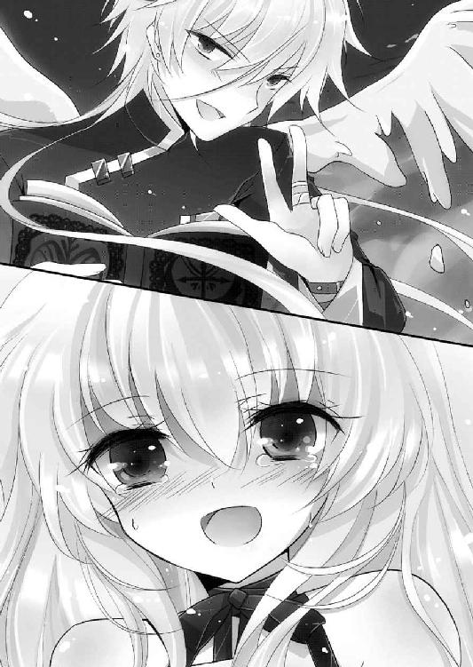

| Re:バカは世界を救えるか？5 (富士見ファンタジア文庫) | |
| 柳実 冬貴 & 一葉 モカ | |
| 富士見書房 (2011) | |

Re（アールイー）：５
バカは世界を救えるか？
柳実冬貴

富士見ファンタジア文庫
本作品の全部または一部を無断で複製、転載、配信、送信したり、ホームページ上に転載することを禁止します。また、本作品の内容を無断で改変、改ざん等を行うことも禁止します。
本作品購入時にご承諾いただいた規約により、有償・無償にかかわらず本作品を第三者に譲渡することはできません。
本作品を示すサムネイルなどのイメージ画像は、再ダウンロード時に予告なく変更される場合があります。
本作品は縦書きでレイアウトされています。
また、ご覧になるリーディングシステムにより、表示の差が認められることがあります。
口絵・本文イラスト 一葉モカ
Contents
プロローグ 日常の終焉
深夜、雨鶴来市外某総合病院前。
「どーなってんだよこりゃあ......」
救急車のサイレンと、集まった人々でごった返す病院駐車場にて、東野一樹と渡辺知大は遠くの雨鶴来市から立ち昇る黒煙の数々を眺めていた。
「まるで七年前の再来だ。携帯は繫がらねぇし警官に聞いても何にも答えねぇし......都心で何が起こってんだ？」
「わからん。せめて知人の安否の確認は取りたいところだが......」
チダイは何度も携帯をリダイヤルしながら、深刻そうに目を細める。
さっきからかけ続けている相手は、光一と広美だ。クリスマスパーティをする予定だったチダイ達は、毬藻寮で準備をしていたのだが、その最中に突然サイレンが鳴り響いたのだ。矜持、桐咲、アルルは街に買い出しに出ていたし、広美は部活動。光一はその広美を捜しに突然出て行ってしまった。薫も、走ってどこかへ行ってしまったのだ。
チダイと一樹はただ事ではないと思い、ひとまず光一と広美を捜すために学校へ行こうとした。
だが、
「そもそもなんで俺達こんなところにいるんだ!?」
「......わからん。学校へ向かっていたと思ったら何故かこの病院に辿り着いていた」
「だぁぁもうわけがわかんねぇぇぇぇっ、とにかく戻るぞチダイ！」
頭を搔き毟って喚く一樹。チダイは横で、顎に手を当てて思い詰めたような表情をした。
二人は気がついたらバスに乗っていて、何故か雨鶴来市外の総合病院に辿り着いていたのだ。よく見れば、周りの人々も同じようなことを感じているのだろう。首を傾げている者達が何人か窺えた。皆同じことを思っているのだろう。いったい何から、避難しなければならなかったのか、と。
「......あの～、公衆電話もやっぱりダメでした」
と、雨鶴来市に戻ろうと息巻く二人のそばに、とてとてと走りながら、一人の少女が近づいてきた。人混みをかき分けて走ってきたのだろう、息が上がっている。
色素の薄い髪を短いポニーテールにして、袖の長めなスクールカーディガンを着ている。快活そうな眉と瞳をしたその少女の顔には、とある幼女の面影があった。いつも明るい彼女には珍しく、今は不安そうに目が泳いでいる。
一樹とチダイは、駆け出そうとしてピタリと足を止めた。
駆け寄ってきた少女、間宮透に顔を向けて、硬直する二人。
そうだった......透ちゃんがいたんだった。
一樹とチダイは、毬藻寮から学校へ向かう時、薫に彼女のことを頼まれていたのだ。
『透のこと、頼んでいい？』
薫との約束を思い出して、二人はぐぬぬと唸った。
確かに広美と光一は自分の命を賭けるだけの価値のある存在だ。しかし、光一にとって薫は幼馴染でこそないものの、別の意味で大切な人間。
ここで薫との約束を破ることは、親友を裏切ることと同義。
「あの......どっか、行っちゃうんですか？ 私、ここで待ってたほうがいいですか？」
こんなに愛らしくも美しい少女を一人置いて中二病を助けに行くなど言語道断。男の風上にも置けない！
一樹とチダイはイケメンモードにシフトして透の肩に手を置いた。
「安心しな。俺はどこにも行かねぇよ......ずっと君のそばにいる。永遠に」
「女性を一人残して去るなど武士の恥。俺はあなたの盾となり、剣となろう。だから結婚してください。俺は料理のできる男です」
「なんという不自然な告白と自己アピール......武士の一分はどこ行ったコノヤロウ」
「お前こそなんだその薔薇のオーラは、お前に薔薇は似合わん」
二人して透の手を取り、キリリとしながら王子様ごっこをやらかす。
透はアホ二人のアグレッシブな行動を目の当たりにして、堪えきれずに噴き出した。
「あはは。二人ともおにーさ......じゃない、光一さんの言ってた通りの人なんですねー」
「なぬっ!? あいつまさかあること無いこと透ちゃんに吹き込んだのか!?」
「む......それは聞き捨てならんな」
一樹とチダイが事情聴取を始め、透の肩から緊張が徐々に解れていく。透は、確かに光一の言う通り、二人には力の抜ける独特な雰囲気があると思った。
ひとしきり笑った後、透は目に涙をためて腹を押さえた。
「それにしても、本当に光一さんと仲がいいんですね。なんか羨ましいです」
透の言葉に、二人はきょとんとした。
しかしすぐに笑みを浮かべて、胸を張る。
「あったりまえだろ、親友だからなっ」
「うむ。腐れ縁は最強なのだ」
「「全員バカだけどな！」」
声を揃えて言って、ＨＡＨＡＨＡとお互いを指差して笑い合う。本当にバカである。
「それより、光一や他の奴らもどっかに避難しているか確認しねぇと。ロリ宮もどっかにいるといいんだけどな......」
一樹は人混みの中に目を凝らす。照明も心許ないため、辺りはほとんど真っ暗だった。
──それでも、その銀髪は暗闇の中でもよく目立っていた。
人混みの最奥、黒い服に銀髪の少年が見えた。
「──光一！」
一樹が弾かれたように走り出す。ところが人混みに行く手を阻まれて、なかなか前に進めない。
光一は声に気づいていないのか、担架を運んできた医者に声をかけていた。
一樹が光一の両手に抱きかかえられている広美の姿に気づいたのは、その時だった。
「噓だろ......なんっ、で......おい！ どいてくれ！ 通してくれ！」
人混みをかき分けるように、一樹は形振り構わず前へ進んだ。
抱きかかえられた広美は、死んだように動かない。光一も、まるで肉体から精神が離れてしまったかのように虚ろな表情をしていた。
一樹は光一の瞳に問いただす。何があった？ と。
光一は広美を医者に託して、背を向けてそのまま去ろうとしている。
一樹は怒号と共に人混みを突破して、広美と光一のそばまで駆け寄った。
「......光一！」
少し離れていても、光一が息を呑む音を、確かに一樹は聞いた。
光一の隣には、薫の姿もあった。薫は一樹に続いて人混みを抜けてきた透を見つけると、すぐさま駆け寄って行った。
一樹は、続いて広美を見やる。担架の上の広美の胸に、医者が聴診器を当てている。心臓は止まっていないし、息もしているようだった。
少しホッとして、一樹は光一に向き直る。光一は振り向かない。
「おい、光一」
「............」
「──こっち向け光一！」
微かな怒りを込めて、一樹は叫んだ。
しかしそれでも光一は振り向かない。背を少しだけ丸めて、下を向いているようだった。
「何があった？ 学校で広美と会ったんだよな？ そこで何があった？」
「............」
「答えたくねぇのか......それとも答えられねぇのか、どっちだ」」
だんまりを通す光一に業を煮やしたのか、一樹が激情を露にしようとした。
しかし、肩にチダイの手が置かれたところで、一樹は平静を取り戻す。
チダイも一樹と同じ気持ちだが、光一の尋常ではない様子を察知していた。
待つこと数秒後、光一はついに口を開いた。
「......ごめん......二人とも」
最初に出たのは、謝罪の言葉だった。
「俺......広美を、守れなかった......」
背を向けながらしゃべる光一は、拳を握って小さく肩を震わせていた。
一樹も察する。よほど酷いことがあったのだ、と。
「......わかった。話はいい、とりあえずこっちきて休め......な？」
表情を和らげて、一樹は光一に手を伸ばす。
しかし、光一は日常から一歩遠ざかるように、足を前へ踏み出した。
「俺......もうここにはいられない......自信無いんだ......広美を救えるか」
「......？ 何言ってんだよ。広美は気を失ってるだけだろ？ きっと明日になれば目が覚め──」
「──覚めないんだよ、もう！」
光一は震えながら、悲鳴のように言った。
一樹の表情が凍る。チダイも、目を鋭く細めた。
ついに耐えきれなくなって、一樹は光一に駆け寄ろうとした。
そこへ薫が割って入り、一樹を止める。
「東野、待って......事情は話せないけど、今あいつを殴るのはやめて」
「殴りゃしねぇ......殴りゃしねぇがしゃべらせる。何がなんでも」
「やめて......お願い」
「なんならロリ宮でも構わねぇ......何があった!? 広美は、俺達の幼馴染はどうなるんだ!?」
激情に任せて、一樹が切実な問いを投げかける。
薫は、辛そうに瞳を揺らした後、一樹から視線を逸らした。
それを答えと受け取った一樹は、全身から力が抜けるような思いを味わった。広美は目覚めない......理由はわからない。けれど光一の状態と薫の視線を見る限り、噓や冗談とは思えなかった。
薫は崩れ落ちようとする一樹の肩に手を置く。
「でも一つだけ覚えておいて......佐藤は............光一はがんばった。すごくがんばったのよ」
「............」
「それこそ......心が壊れるくらいに」
一樹はもう、薫に何も返さなかった。
薫は一度透に目配せをして、今度はチダイに向き直った。
「透と......浅野のこと、よろしく頼むわ。あたし達はしばらく雨鶴来を離れる。そうしなきゃいけない理由は話せないけど......でも」
「──わかった。行け」
チダイは即答してみせた。薫は驚いて目を見開く。
チダイは、静かに問うた。
「俺達には何もできない......そうなんだろう？」
「......ええ」
顔に影を落としている彼の拳は、一樹と同じように音が鳴るほど強く握りしめられていた。多くを語らない彼らしいが、全てを呑み込んだわけではなかった。胸の内には疑問と憤りを抱えていることだろう。
「だが最後に一言だけ言わせてくれ──光一」
チダイはいっこうにこっちを向かない光一に言葉を投げかける。
「俺達はお前を信じている。だからお前を追わない......でも」
顔を上げたチダイの形相は、真剣そのものだった。
「もしもお前が何もかもを諦めてしまうようだったら......俺達はお前を追う。追って、ぶん殴って、一緒に広美を救ってもらう......強制的にだ」
それが幼馴染。チダイはそれだけ伝えると、顎を上げて薫に行くように促した。
薫が、光一の背中を押して去って行く。
一樹は、ただ悔しそうに地面に膝を突いて、拳を握っていた。
「前からあいつらが何かに首突っ込んでるのは知ってた......でも、こんなことになるなんて思わなかったんだ......こんなことなら、俺達も首突っ込むべきだったんだ......！」
「............」
「あいつらがあんなことになる前に......助けてやるべきだったんだ......一緒に背負ってやるべきだったんだ......！」
光一を責めるのではなく、自分を悔いて一樹は涙する。
チダイは握っていた拳から力を抜いて、雨鶴来市の方へ目をやった。
「光一......お前達は、いったい何に関わっているんだ......？」
雨鶴来市からは答えは返ってこない。
ただ、中央区から爆煙が上がった瞬間、獣の咆哮のような音を聞いただけだった。
Battle １ バッドエンド
「俺はお前だよ、佐藤光一」
佐藤光一の目の前で、佐藤光一はそう言った。
広美を抱いたまま硬直する光一と、本を片手に薄い笑みを浮かべるもう一人の光一。美しい神の光が降り注ぐ中、二人は鏡を前にしたように対峙していた。
あり得ない邂逅。光一の思考は完全に停止。目の前の人物が自分であることを認めてはいけないと脳が悲鳴を上げているのに対して、自分の目に映るのは明らかに自分の姿で、混乱は極みに達していた。一つ言えるのは、目の前の自分自身が手に『導きし者』らしき本を持っているということだけだ。そこから導き出される答えは、一つしか見つからない。
「俺が......全ての......元凶？」
求めていたものとは、真逆の結末。
この世界の『木漏れ日現象』は、全て佐藤光一のしでかしたこと。
元凶、魔王、大罪者、悪。本来光一が倒すべき対象が、自分自身？
「違う！ 貴様は俺じゃない、俺はここにいる！ 二人存在するなんてあり得ない！」
光一は当然のように否定した。
ドッペルゲンガーは都市伝説。
当たり前のことだ。当然こんなのはまやかし、そう言い切れる。
「誰だ貴様は......！」
全身全霊を込めた憎しみを、全ての元凶に向ける。
しかし元凶は、その憎悪を苦笑しただけで受け流した。
「信じられないのも無理ないか。それともあれか？ 俺はお前の生き別れの兄だ、とか、俺はお前の心の闇が生み出した幻影だ、とか言ってほしいのか？」
バカにしているようでいて、少しだけ寂しそうに元凶は言った。
「残念ながらそうじゃねぇ、俺はお前で、お前は俺だよ。間違いなくな」
元凶の顔は、確かに光一とまったく同じだった。けれど姿は微妙に違っている。光一よりも少し背が高く、頰も瘦せており大人びている。本物の光一のようにオッドアイをでっち上げてもいなければ、髪の毛も手入れがされておらず伸び放題で、当然のことながら銀髪でもない。声も若干低いため、歳は光一の二つか三つ上に見えた。
強いて言うならば、成人を迎えた光一だ。
光一は広美の身体を静かに地面に下ろすと、立ち上がった。頭の混乱は治まらないが、全てをぶち壊し、広美を奪った元凶を断じて許してはおけない。
光一の怒りを見て、元凶は当然のように苦笑した。
今の光一には何もかもが嘲りに見えた。
「笑うな......俺はそんな笑い方はしない！ だから貴様は俺じゃない！ 俺の力で、貴様の化けの皮を剝がしてやる！」
光一の宣言を聞いて、元凶が手に持っていた本を閉じ、一歩一歩近づいてくる。
「......《付け焼刃》か。そのネメシスで俺を倒そうって？」
「貴様は人々の幸せを......能力者達の大切なものを......俺の日常を奪ったんだッ！ この《付け焼刃》でぶっ潰してやる！」
激情する光一を前にして、元凶は表情を消して黙り込んだ。
「へぇ............それで、お前は俺を倒してどうするんだ？」
「寝ぼけるな......俺は貴様を倒して広美を救う！ 俺の日常を取り戻す！ 貴様がそんなものを持っているせいで世界が壊れ始めたんだ！ 貴様が......貴様がいるから......ッ！」
今にも殴りかかりそうな勢いで、光一は歯ぎしりをする。
反して、元凶の表情は徐々に冷めていった。
「............お前の最終的な目的はなんだった？ 世界とアルルの両方を救う、だろ？」
元凶は、光一の使命を言い当てた。
「わかるぜ。俺はお前だからな。俺とお前の目的は同じだ」
「同じだと......っ？ 元凶が何言ってやがる！ 世界を不幸にしたのも、アルルに悲劇を与えているのも全部貴様だろうが！ どの口が......！」
「............その通りだな。この世界に不幸をもたらしたのは俺だぜ、佐藤光一」
「っ──黙れ！ それ以上まやかすと言うなら容赦しねぇ！」
混乱が加速して、苛立ちに全てをぶち壊してしまいたくなる。光一には、俺はお前だという言葉が、お前のせいだ、と言われているようでならなかった。
元凶は、怒りに燃える光一を、鼻で笑った。
「悲しみを味わえば目的が真っ直ぐに修正されると思っていたんだがな......見誤ったか」
意味深な言葉に光一が顔をしかめ、ついに指先を弾く。
されど、
「それとも──絶望が足りないのか」
元凶が目の前から消えたかと思えば、光一のすぐ背後から声が聞こえた。
慌てて背後を振り返ると、元凶はさっきと同じ体勢のまま眼前で光一のことを見ていた。
「......目的をすり替えるとは見上げた付け焼刃だ」
元凶が、光一を付け焼刃だと挑発する。光一は指を弾き、怒りのままにネメシスを発動させようとした。
同時に元凶の持つ『導きし者』のページが風も無いのにめくれ上がったかと思えば、光一の頭上に無数の光の十字架が出現した。咄嗟に回避しようとしたが時既に遅く、十字架は光一の身体を拘束するように地面に突き刺さった。
構えていた右腕は十字架と十字架に挟まれ、動かすことができない。
「怒りに我を忘れて実力行使......こうして自分の姿を客観すると実に滑稽だな」
「て......め......！」
「もう一度聞くぞ。お前の目的はなんだ？」
「......ひ、広美を......返せ......！ 返せぇぇぇッ！」
殴りつけるように腕を前へ押し出そうとするも、得体の知れない物質で構築された十字架はびくともしない。むしろ腕の締めつけは光一が力を入れるほど倍増し、骨を軋ませる。
「間違えるな、俺の目的は世界とアルルの両方を救うこと。広美を救うことじゃない。広美も救う、が正解だ。世界を救うってのはそういうことだろう？」
元凶が光一の眼前に顔を寄せて、何も映らない乾いた瞳で問うてくる。
光一はギリリと歯を鳴らして、憎しみをぶつけ続ける。
「同じことだ......！ 何を偉そうに......！」
「違う。目的をはき違えるな。お前の為すべきことはもっと大きい。小さい救いは大きな救いの一部に過ぎない。小さい救いで満足してもらっちゃ困る」
光一の視界が再び真っ赤に染まった。広美への救いを小さいと言われ、頭に血が上る。拘束された腕を無理矢理引っ張り、折れそうになるのも構わずに力を込める。
「学習しないな、お前は」
自分と同じ顔をした元凶の言葉も聞き流して、光一はさらに腕を引っ張った。メキメキという骨の軋む音と共に、光一の神経に激烈な痛みが走っていく。
光一は力を緩めようとはしない。広美を侮辱したこいつを、殴らずにはいられないから。
「が、あああ───、ッッッぐ！」
ボギリ......という鼓膜を嫌に震わせる音がして、光一は十字架の拘束から解放された。
右腕だけでいい。この眼前にある自分と同じ顔をした男を、一発殴らずにはいられなかった。当然のことながら、折れて激痛の走る腕をそのまま元凶の顔面へ伸ばしても、元凶は一歩後ろへ下がるだけで簡単に回避してしまった。
「そいつは『生者の墓』という悪魔の奇跡だ。自らの力で解除させるには死を選ぶしかない。それ以上動けば腕だけでは済まない、全身の骨が砕けるぞ」
折れた腕は、だらりと虚しく落ちた。
光一が形相を鬼のようにさせているのを見て、元凶は呆れたように首を横に振った。
「そんなことじゃ救えないぜ。アルルも、世界も」
「......ぐ、ぅぅ！」
「お前に世界は救えない」
「......ぁぁぁぁあ！」
「お前に彼女は守れない」
「あああああああああああッ！」
いつか聞いたその言葉。忘れはしない。佐藤光一という人間への最高級の侮蔑と挑発。一度目の世界で失敗し、また同じ事を繰り返すという予言。
光一の存在意義を否定するかのような物言いに、視界が爆ぜる。
広美を奪い、日常を奪い、全てを奪おうとする存在を前にして、光一に正常な判断などできるはずもない。
全身の骨が折れるのも構わず、前へ、前へと身体を押し出そうとする。
折れたあばら骨が肉に食い込み、内臓を傷つけて口から血が垂れていく。痛みすらも光一の怒りに拍車をかけて、己の命すらも顧みずに全身で元凶を殴ろうと必死だった。
「許さねぇ......貴様だけは......殺して、やる......」
血を吐きながら元凶を睨む。
気概とは裏腹に、すでに光一の身体はぼろぼろだった。生命維持の限界はもうすぐそこまできている。あと少しでも動けば肺が破れて血に溺れてしまうだろう。
「広美は......関係ねぇのに............絶対に、ゆるさ......」
朦朧として、赤く染まった視界が白く濁る。
意識の白濁と共に怒りは消えていき、残ったのは無念とやるせなさだけだった。
（広美......ごめんな......俺、結局お前に......何もしてやれなかった......）
悔しかった。悲しかった。かつて味わった敗北、藤堂と最初に戦った時に思い知らされた現実よりも遥かに重い。
現実は、気概とはったりだけでは覆せない。
（俺は......俺には......誰も......救えない、のか......）
確かに光一のネメシス、《付け焼刃》は使いようによっては相手の意表を突き、状況をひっくり返すことも可能。ただし所詮一発逆転の手段でしかない。
わかっていた。そんなことわかった上で戦ってきた。
けれど......最終的な敵は、悪魔の奇跡を内包し、行使できる力を持っている。これほどまでに格の違う敵を前にして、《付け焼刃》のなんと非力なことか。
光一は渇望する。今まで生きてきた人生の中で、この時ばかりは、求めた。
自分以外の救いを。カッコつけたいという欲望もなく、自分がやらねばという意地もなく、ただ、助けてほしかった。
（アルルを......世界を......助け......て......）
光一の瞳から、涙が零れる。悔し涙だった。
光一は、再び求めた。かつて自分に力を与えた、彼女の助けを。
「助けて......くれ......アルカナ」
瞬間。
悪魔は呼びかけに応えた。
ねじ切ろうとしていた白き十字架の真上に、赤く光る無数の槍が出現。その槍は十字架を砕き、光一の拘束を一瞬にして解いた。拘束を解かれた光一は、そのまま地面へうつぶせに倒れ込む。
元凶が本を持ったまま、急な介入者に驚いた風もなく、口元に笑みを浮かべていた。
「来たか。何年ぶりかな、似非天使」
溜息のように静かに、元凶は言った。
「......出てこいよ。いるんだろ、アルカナ」
元凶が、何も無い空間に呼びかける。
視線は光一の倒れている場所の一歩前。その何も無いはずの空間に、突然皹が走った。皹は音を立てて広がり、そして、まるでガラスが割れるような音と共に、空間そのものが砕け散った。砕けた空間の裂け目には、漆黒の闇が広がっている。
その闇の中から姿を現したのは、光一のよく知る少女の姿だった。
天使アルカナ......いや。
「その姿......お前、完全に堕天したのか」
元凶がアルカナに苦笑する。
堕天。今までのアルカナの姿は、天使に見えずともそう見えるような努力が見られた。
今のアルカナの姿は、悪魔としか形容できない。以前とは違い背は高く、どこか面妖さを秘めた肢体は美しくもあり恐ろしくもある。全身を包むのはヘビの鱗を思わせる鎧のような皮膚。手の爪は長く鋭く、漆黒に染まっている。首元から上は人間のそれに近いが、肌の色は褐色、瞳の色はワインを思わせるどす黒い赤色をしている。
彼女が悪魔であることの証明となっているのは、その背中に生えた漆黒の翼だった。身体の何倍もの大きさを持つ翼は、光一を守るように元凶との狭間に広げられていた。
「天使への昇格試験はいいのか？」
「......そんなものより、光一さんの命の方が大切です」
「神の拘束を受け、結界を張った状態では肉体の具現化もできない。だから悪魔としての力を完全に取り戻すために堕天した。そいつを守るために？ 見上げた天使様だ」
アルカナは元凶の挑発に黙り込んだ。
元凶はそんなアルカナにやはり苦笑して、指で頰を搔いた。
「お前、ずっと黙ってたんだな、そこで転がってる奴と俺が同一人物だってことをさ。ま、言えるわけないか。世界を狂わせた張本人はあなたです、なんてよ」
アルカナは黙っている。
地面に伏した光一は、苦悶の表情のまま二人の顔を見て固まっていた。
光一は、アルカナが当然のように否定してくれるものだとばかり思っていた。
それなのに......。
「なん......で、なんで、何も言わないんだよ、アルカナ......」
焦燥感に耐えきれず、光一はアルカナを問い質した。
アルカナは、ただ拳を握りしめるばかりで、こちらを見ようともしない。
「違うって......言ってくれよ......どうして何も言わないんだよアルカナぁ！」
口の中の血反吐を吐き出して、光一は震えた声で叫んだ。ただ一言違うと言ってほしい。どんな理由であるにしろ、自分が全ての元凶なんてことは絶対に嫌だった。
そんな結末は救えない。そんな展開じゃ、ヒーローになんかなれない。だってそんなの、絶望しか無いから。
「............ごめんなさい。黙っていて」
アルカナは、押し殺したような声で言った。
光一の身体から、力が抜けて、地面に額を打ちつける。
あの本を持ったいけ好かない元凶が、俺自身？ どうして、そんなことに......。
「そういうことだ。俺は佐藤光一という存在の可能性の一つであり、お前もまた同じ。つまりお前は俺になり得たし、俺もお前になり得たってことだ」
「......意味が、わからない。どうなって......そんなの、ウソだ」
絶句する光一には、もはや否定する術がなかった。
元凶は静かに目を細めて歩き出し、『導きし者』のページをめくり始めた。
「真実は、全てこの本に書かれている」
元凶は、さらにページをめくり、流し目をアルカナに送った。
「......天使は悪魔の起こす奇跡の修正を役割として、各々数多の世界を管理し、監視している。そうだよな、アルカナ？ お前は俺を追ってこの世界にやってきた。俺が『木漏れ日現象』を起こした世界全てを、修正するために」
元凶の話を聞いても、光一には意味がわからなかった。
幾重にも折り重なった可能性の世界に起こった奇跡の修正が、天使の仕事。それはネメシスを授かった時に聞いていた。
しかし、だとしたら、ここにいる男は......。
「確かに、この世界の『木漏れ日現象』は俺が起こした。他の世界もそうだ。全て俺がやったこと」
この男は、佐藤光一であるというのなら、いったい......。
「だが、物事には起点がある。始まりがあるんだよ、この一連の悲劇には」
光一は不可解な恐怖に、身体を震わせた。聞きたくない、と心臓が早鐘を打ち、真実を知ることを拒否している。だが何もかも無意味。真実を前に、逃げることなどできなかった。
元凶は、本を片手で閉じて、暗い瞳を瞼の間から覗かせながら、己が正体を口にする。
「俺は──最初に『木漏れ日現象』を起こされた世界の、佐藤光一だよ」
その告白が何を意味するのか、この時光一はまだ理解できていなかった。
シェード本部、隊員宿舎第二階層。
コツン、コツンと、一人分の靴音だけが不気味に響いている。
施設内には白煙が立ちこめ、警報が鳴りっぱなしだった。それでも人っ子一人見当たらない。あるのは人だったものの残骸だけだ。
死屍累々の地下連絡通路。オーロラ信者及びシェード隊員達の亡骸が転がる中を、月陽奏麻は異形の杖を片手に悠々と歩いていた。
「あらあらうふふ、あらあらうふふ、オーロラ突入部隊はほぼ全滅れすか......シェード隊員の裂傷は信者によるもののようれすが......信者達の傷口は、通常のネメシスによるものれはない。いいれすねぇいいれすねぇ、楽しくなってきましたお」
楽しそうに、奏麻は笑う。血に染まった彼女の姿は無邪気そのものだった。
最奥のエレベーターに乗り込み、目的地の階層のボタンを押す。
軽い重力の変動を感じながら、奏麻は思い出したように制服のポケットからあるものを取り出した。安っぽいビニール素材でできたぬいぐるみ。先日佐藤光一にゲームセンターで取ってもらった、ゾンビウサギ人形だった。
「あのしとは上手くやってるかな......あっちの光一君には、なるべく優しくしてあげてほしいものれすね」
奏麻は無表情にゾンビ人形を見つめた。重苦しいエレベーターの降下する音を耳にしながら、ただじっと見つめる。
「あーあ......楽しかったなぁ......ゆーえんち......」
ふと彼女の顔に浮かんだのは残念そうな笑みだった。光一を無理矢理引っ張り出し、好き放題に連れ回った楽しい記憶。
それは奏麻にとって、初めての経験であり、初めての普通だった。
生まれた直後から全てを奪われることが決まっていた彼女からは、既に臓器のいくつかが摘出されており、今身体に備わっている臓器はほとんどが他人から奪ったものだった。世界の闇で育った少女は、ただ奪われるだけで人生の幕を閉じる予定だった。その状況が急変したのは、奪えば奪われずに済むという真理に気づかされた後だ。
闇と暴力と騙し合いの中で生きてきて、彼女が最終的に得たのは、奪い合うのは楽しい、という暴力的な快楽だった。
故に、彼女が与えられるという全く新しい概念を知ったのは、つい先日のこと。佐藤光一とのひとかけらの日常は、とても温かく、実に奇妙なものだった。
奏麻はゾンビ人形をぎこちなく、ぎゅっと胸に抱きしめる。
「ちょっと......残念かな......わらしがもっと早く光一くんと仲良くなってたら、もっと変わっていたんれすかね？」
惜しむように奏麻は微笑む。一瞬だけ、光一と過ごす普通の学園生活というものを夢想する。
「......でもま、仕方ないか......これも全部」
そうして奏麻は人形の頭を一度、ゆっくりと優しく撫でた。その仕草はまるで赤ん坊を抱く母親のようであった。
豹変したのはその直後だった。
奏麻は抱いていた人形の首を、両手で軽々とねじ切ったのだ。
「全部、あの怪物が面白すぎるのが悪いんれす」
奏麻にとって、大切な物という存在は全てネメシスへの供物に過ぎない。《魔女》というネメシスのアンチテーゼは、生け贄、貢ぎ物。その対価が奏麻にとって大切であれば大切であるほど、ネメシスは強力な魔法を具現化する。
確かに奏麻にとって光一との思い出やこの人形は、すでに掛け替えの無い物になっていたが、能登原明日菜との戦いが実現し、それに全力を注ぐとあらば、「仕方がない」の一言で破り捨てることができる。
残念ながら、それが月陽奏麻という魔女の真実だった。
エレベーターが停止し、鈴のような軽快な音がして、扉が開いていく。
開かれたドアの向こう、奏麻の視線の先には、ただ暗黒が広がっていた。
奏麻はその暗黒に向かって、恍惚の笑みを浮かべて声をかけた。
「わっは、やる気満々じゃないれすかー怪物さん」
奏麻はくるりと杖を一回転させて、肩に担ぐ。
前方に蠢く、暗黒の塊の中央。そこには、能登原明日菜の残り火が佇んでいる。わずかに残った自我を体現するかのように、半身を《怪物》に呑み込まれた能登原明日菜の青白い身体が存在していた。
オーロラの襲撃に対して自ら戦うしか選択肢が無く、結果として肉体の制御を失い、自我の崩壊を招いたのだろう。
全ては、奏麻にとって計画通りであり、理想の展開だった。
「......これでようやく、最初に出会った時の続きができるね」
ようやく念願が叶う、と奏麻の心は躍った。
『彼女と戦えば、お前は満たされる。俺の導きに従えば、お前の欲望を叶えてやるよ』
『導きし者』の持ち主から持ちかけられた話は、彼の力を目の当たりにした時から信じるに値していた。一周目の世界での激戦を聞かされた時、いやがおうにも奏麻の身体は喜びに震えた。
今、その約束が果たされようとしている。奏麻の悲願が、果たされようとしている。
この時、奏麻の身体は再び歓喜に震えていた。
──それが、油断、だったのだろうか。
ほんの一瞬、戦いの前の武者震いを味わおうと奏麻が深くまばたきをしたその瞬間。
奏麻の腹部に向けて、黒い塊が鞭となって激突した。
「──づっぁ...っ!?」
百戦錬磨を自負していた奏麻でも、この奇襲への対処は一瞬遅れた。咄嗟に防御しようと構えた杖は枯れ木のように砕かれ、守ろうとした胸部の肋骨も同じように枯れ木の如く粉砕された。
だが衝撃を身に受けた瞬間であろうと、奏麻の思考は変わらず一直線だった。
（きゃはは──たぁまんないなッ！）
身体がくの字に折れ、一瞬にして奏麻の身体は吹き飛んだ。エレベーターの壁を破壊し、さらにその向こう側の壁をも貫通、まるで大気圏を越えた隕石の如く、奏麻の身体は地下の地盤の中を突き進んでいく。
パラパラと、壁に開いた大穴から、大理石とコンクリートの破片が落ちる。
土煙の立ちこめる中、赤い双眸を光らせる異形は、数秒前と何も変わらずに君臨しているだけだった。
（......今、私は、何かしただろうか）
曖昧になりし意識の中、明日菜は目を開けた。望遠レンズのようにぼやけた視界は、白黒の映画でも観ているように色あせて、現実味が少しもなかった。
シェード本部を直接襲撃され、度重なる戦闘に隊員達は疲弊していった。バリケードや隔壁も意味がなく、押し寄せる軍勢に明日菜は力を使わざるを得なかった。
明日菜は生き残った仲間を脱出させ、単身で信者達に立ち向かったのである。
その結果が、この有様だ。
（............さすがにもう、限界か......）
アルルが本部にいないことが、彼女の諦めを誘ったのだろう。結局自分は何もできやしなかったが、それでも意志は護衛班の面々が継いでくれると信じた。
（私の役目はここまでだ......これで、ようやく）
ようやく、楽になれる。
長きに亘って戦ってきた明日菜にとって、死は安らぎそのものだった。
「もう......いいよな......」
声が人間の肉声として聞き取れる代物にできあがったのかも、明日菜にはわからない。それでも、想いは伝わるだろうと信じて、明日菜は長年連れ添った相棒に声をかけた。
「頼むよ......最初で最後の仕事だ......坂介」
悲しみも苦しみもない、安らぐような声で明日菜は死神を呼ぶ。
「──ああ、わかってるぜ。そいつを殺せるのは、俺だけだ」
呼びかけに死神は応えた。闇の中に幽鬼のように現れたのは、強化外骨格を思わせる鎧を纏った人型だった。鬼のようなシルエットは禍々しく、まるで古くから語り継がれる呪われた武具を思わせる。鎧そのものも赤ければ、その者の瞳はなおさら赤い。
深紅の鎧、あらゆる物質を破壊する《九八式》のネメシスを持つ、斑坂介。
彼が為すべき使命は、能登原明日菜のネメシスが暴走した際に、彼女の息の根を止めること。彼がシェードに入り、能登原明日菜のそばにいた最大の理由はそれだけだった。
明日菜は坂介の妻と子を殺した殺人者を捕らえ、監禁している。明日菜は、アンチテーゼのせいで殺人者を殺すことのできない坂介に、とある契約を持ちかけた。
『お前の殺したい相手は、すでに我々が囲っている。私の下につけば、いつか必ずお前の手で奴を殺させてやろう。それまでは何があっても奴を死なせたりはしない』
坂介がこの契約に飛びつかない理由は無かった。
坂介が彼女の背負うものを知った時、少なからず驚愕したのは事実だ。明日菜が要求してきたものは、己の死だけだった。
「結局私は......アルルを救うことができなかったよ」
「............」
「でも、後悔はしていない......安易な死に身を委ねるより......最後まで抗ったのだから、誇れなくとも、心残りなど......」
漆黒の瞳が、静かに細まる。深紅の瞳は、何も言わずに佇んだ。
異形の中心で、明日菜は顔を上げて、坂介に微笑みかけた。懇願するような笑顔だった。
「なあ、坂介......私は......がんばったよな？」
声は震え、瞳からは静かに涙が零れた。
明日菜は、後悔は無いという自分の言葉が噓であることを否定しようとして、結局できなかった。後悔、心残り、思えば自分の人生はほとんどがこの二語で作られてきたようなものだった。それでも死という安らぎを受け入れてしまうのは、自分が弱いという証拠。
だから認めてほしかった。
お前はがんばった、弱くなんかない、そう言ってほしかった。戦う背中を見守っていてくれたこの男に......安心して休めと、そう言ってもらえればどんなに楽か......。
坂介は深紅の瞳を向けたまま、くぐもった声で言う。
「ああ......お前はがんばった」
求めていた言葉を聞けたことに安堵して、明日菜は目を閉じようとした。
「だが、まだだろ。まだがんばれんだろ、明日菜ちゃん」
引き留められたのを理解して、明日菜は眉根を寄せた。
「何を......言って......？」
絶句する明日菜を、坂介は鼻で笑った。
「俺は殺すとは言ったが、それはお前じゃねぇ。お前にまとわりつく、その怪物だ。あんたの人間の部分だけを残して、その他の贅肉を削り取っちまえば、ちったぁ自我の喪失も収まるだろう。殺してやるよ、あんたの怪物」
「約束が違う......！ 私は！」
「それはこっちの台詞だ。あんたに死なれたら誰が俺の約束を守ってくれるんだ？」
「............裏切るのか！」
「ちげぇよ。俺はただあんたに約束守ってもらいてぇだけだ」
坂介が両手を前へ突き出すと、籠手の内側からずるりと音を立てて赤く光る刃が出現した。その二つの刃を擦り合わせながら、坂介は半身を引いてどっしりと構える。
明日菜は叫んだ。
「よせ！ 不可能だ！ 《怪物》は私と完全に同化して──」
言いかけた直後、明日菜の意に逆らって、九本の触手が宙を舞い、坂介に向かって襲いかかった。普通の人間ならば目で追うのも不可能な速さ。
だが、この《九八式》には──無力。
人ならざるものを蹂躙するための力は伊達ではない。クロスさせた両腕を横いっぱいに開き抜いただけ。それだけの動作で、坂介は九つの触手を消滅させた。
「──やれるさ。あんたの自我はまだ残ってる。俺に人間は殺せねぇ......能登原明日菜、お前はまだ人間だ」
「違う......私はもう人間じゃない、それはお前も知っているだろう!? もう手遅れなんだ......わかるんだ、私には」
だからもう殺してくれと、明日菜は言う。
「やれるっつってんだ！ そんな本能しかねぇ怪物が──俺を凌駕できるはずがねぇ！」
怒号に乗せて、坂介は肉体の全出力を足に込め、怪物に向かって跳躍した。司令室の床が大きく砕け、坂介の身体は回転しながら一瞬にして異形の眼前に迫った。
怪物も黙ってはいない。触手を振るい、異形の大口を出現させ、ただの脅威の塊として坂介を迎撃しようとする。
四方八方から押し寄せる津波のような攻撃。空中では逃げ場はない。
坂介はそれを覇気のみで退けた。甲冑に切れ込んだ二つの瞳が恐ろしい眼光を放ち、鬼のような口が開いたかと思えば、怪物を凌駕する咆哮が司令室内に迸った。
触手を伸ばしていた怪物の動きが一瞬怯む。
その隙を、坂介は見逃さない。空中で回転の勢いを乗せて、右腕の甲から突き出した刃を、下方から上方へ向けて一気に振り抜いた。
風圧とも斬圧とも異なる赤い衝撃が、怪物の半身を両断。半身は赤い衝撃に呑み込まれ、一瞬にして消滅した。
《九八式》は坂介の怒り、激情によってその身体能力、破壊力を何倍にも膨れ上がらせる。竜の牙にも屈せぬ鎧を、鋼鉄の鱗を切り裂く刃を、聳え立つ塔のような怪物の急所を突くための筋肉を、《九八式》は能力者に提供するのだ。
代償は、人間には絶対に危害を加えることはできなくなるというもの。
ただし、人間でないのなら。相手が人でないのなら。
斑坂介と《九八式》は、無敵だ。
猛威を振るう《九八式》を前に、あの怪物が蹂躙されていく。
怪物の性能もまた規格外。その漆黒の身体は、消滅させられていくそばから再生していくのだ。終わりなき戦い。先の見えぬ奮闘がそこにある。
「ハァッ、ハァッ......！」
ネメシスの恩恵で身体能力が上がっているといっても、肉体に限界を超えさせることで跳躍力などの性能を引き出しているため、身体への負担は計り知れない。
「......無理だ......無理だよ坂介......もういいんだ」
異形の中心で、明日菜はうな垂れて諦めを口にする。
「──よくねぇ」
怪物の血液を全身に浴びながら、鬼は荒い息と共にしゃがれた声を吐いた。
「......私を生かしておいてお前に、世界に得などどこにもないだろう......？」
悲鳴のような問いかけ。
襲い来る触手を切り裂きながら、坂介は床に膝をつき、咳き込むように笑った。
「得か......確かにそんなものは無い。俺はただ、納得がいかないだけだ。......こんな結末......俺は認めらんねぇんだよ」
言って、坂介は再び怪物に向かって走り出した。明滅していた眼光が元に戻り、痛む身体に鞭を打って果てしない戦いを続行する。
「俺はお前が今までどれだけのものを犠牲にして、どれだけの痛みを背負ってきたのかを知っている。復讐のために人生を賭けた俺と違って、お前は今を生きる者のために戦ってきた。憎まれ、蔑まれ、何も知らない愚かな連中に非難されてもお前は戦った。正直たいしたもんだ、お前は十分にがんばったよ、明日菜ちゃん」
「............」
「でもな、俺が納得いかねぇのは、がんばった奴が一つも報われてねぇってことだ！ 必死こいて自分以外の者のために戦ってきて、お前は何を手に入れた!? 何も手に入れちゃいない！ ただ不幸で、可哀想で、哀れなだけだ！」
「......坂、介」
覇気と共に鎧全身から衝撃波が生まれ、怪物を粉砕。赤い覇気の中で、坂介は明日菜の顔を見上げる。怪物の悲鳴が轟く中、鎧の中の坂介は、優しそうに笑っていた。
「明日菜......お前はな、幸せにならなきゃいけねぇんだよ」
そうでなければ間違いだと、坂介はやわらかい声で言った。
そんなことを言われたのは初めてだった。今まで人の命をいくつも奪い、大切な人の命すらもこの手にかけてきた。幼い頃も、生まれてきたことを歓迎されず、死を望まれながら生きてきた。蔑まれこそすれど、幸せを望まれたことなんて、一度も無かった。
明日菜の瞳から、涙があふれた。お前は幸せになっていい。その言葉は、途方もなく彼女の心に響き、同時に動揺をもたらした。
「そんなこと言われても......私は......このままじゃ、坂介の身体が......そうなったら、お前の願っていた復讐は」
明日菜の言うことはもっともだった。このまま《九八式》を酷使すれば、ネメシスを解いた瞬間に全身の筋肉は断裂し、骨は砕けるだろう。
だが坂介は、そんな明日菜の心配を笑い飛ばした。
「......っはは！ 復讐を果たして何になる。もう、妻も娘も帰ってこねぇ。だったら俺は......お前に未来をくれてやりたい。お前に、人としての生を与えてやる。......だから！」
再び鎧に覇気が籠もる。獣を葬るための力が、坂介の心を、信念を具現する。
彼の新たな信念、それは、
「俺が殺すのはお前じゃない──お前を蝕むくそったれな《怪物》だ！」
能登原明日菜を救うこと、その一点だった。
咆哮と共に、猛攻は再開する。坂介は全身全霊をもって怪物の駆逐に当たった。
赤い覇気は尾を引いて、流れ星のように司令室を駆ける。怪物の再生よりも速く。もっと速く。坂介の乱舞は止まらない。草刈り機のように、怪物の身体を削っていく。
獣の悲鳴を搔き消すように、坂介の咆哮は轟いた。
残すところあとわずか。坂介は夢想した。明日菜がアルルと共に、笑っている姿を。
その姿が、自分の妻と娘の幻影に重なった。
悪くない、そう思えるだけの価値がある。明日菜が何も救えなかったように、坂介もまた大切な人を救えなかった。救うことの努力すらできなかった。
坂介はいつしか、明日菜に自分の状況を重ねるようになった。自分の幸せは二度と摑めずとも、あの女に幸せになる権利を与えてやれば俺は救われる。そのために俺はいる。
いつしか、そう思うまでになっていた。
最後の一手、明日菜の右半身から変異した異形。それを粉砕するために、坂介はありったけの覇気を込める。
「俺が終わらせてやる......お前の悲しみを！」
終わらせる。ただそれだけの願いを込めて、坂介は鎧からありったけの気を放とうとした。この一撃が全てを変える。そう信じて。
「──余計なことしてんじゃねぇれす......！」
背後から声が聞こえたのは、覇気を放つ直前だった。
いまさら警戒しても遅いとわかっていながら、坂介は後ろへ振り向こうと身体を捩る。
次の瞬間坂介が見たのは、自分の腹部から生えた、鋭い杖の柄先だった。
「がぁっ......！」
鎧の隙間から鮮血があふれた。背後には、狂笑を振りまく月陽奏麻の姿。
「そのしとはわらしのモノなんれす......！ 坂ちゃんにはあげなぁい......！」
「て......めぇ！」
怒りを示しても、口から血があふれるだけだった。《九八式》は人外や無機物に対しては絶大な力を発揮するが、人間が相手では全くの無力。いかなる攻撃をも通してしまう。
鋼鉄の防御力を誇っていた鎧も、ガラス細工同然だった。
鎧の赤い瞳が、激しく明滅する。
「......俺はまだ......救えて......ねぇのに......！」
明滅はやがて収まり、静かに、瞳の輝きは失われた。
坂介の身体が力無く床に落ちるのを見て、明日菜の顔から表情が消える。傍らに立つ無邪気な少女に、ゆっくりと視線を移す。
奏麻は絶頂にでも達したかのような、妖艶な笑みを浮かべていた。その様は、呆然とする明日菜に身震いしているようだった。
彼女は血まみれの杖の柄先を舌で舐め、猫のような大きな瞳を明日菜に向けていた。
「──きゃはっ」
そして楽しそうに、嘲るように、甲高い声を上げた。
「あ......ぁ......」
明日菜はわなわなと口を震わせて、絶望と悲しみに顔を歪めていく。
ようやく手に入れようとしていた希望が一瞬にして潰えた。
明日菜の身体が、再びじわじわと怪物に侵食されていく。
もはや抗うこともせずに、明日菜は目を閉じた。
「さ......邪魔者はいなくなったよ」
魔女の楽しそうな笑みが、憎いと思った。
「さあ！ 遊ぼう！ わらしといっぱい遊ぼう！」
楽しげにはしゃぐあいつを、殺したいと思った。
怪物は、その要求に応えた。
「月ヒ、奏マァアアアアアアアアアアアアアアアアアアアアアアアッ！！！！」
「おいで化け物！ キャッハハハハハハハハハハハハハハハハハハハハハハハハハハハハハハハハ！」
元凶の告白から数秒間、光一の思考は働かなかった。精神の限界はとうに超えている。
元凶は、星の瞬く夜空を見上げて、ぽつぽつと話し始めた。
「お前ならパラレルワールドって言葉くらい聞いたことあるだろう」
平行世界、それは光一も知っている。ＳＦやゲーム、ライトノベルにはよく出てくる単語だ。位相の異なる無数の世界。似て非なる別時空。もしも、という可能性が全て実現している世界。かつてはそんな世界に妄想を抱いたものだ。もしかしたら別の世界の自分は、今のようになりきるだけでなく、本当にダークヒーローとかになっているのではないか、と。
そんな世界が実際に存在しているのだと、元凶は言う。
「そこにいるアルカナも、根本は悪魔だが天使へ昇格するためにいくつかの世界を管理していた。他の天使と同じように、数え切れないほどの世界で奇跡の修正を行っていた。俺の世界はな......本物の悪魔の手で『木漏れ日現象』を起こされた。そして、その修正にやってきたのが、そこのアルカナだ」
光一はアルカナを見やったが、アルカナは背を向けて黙り込んでいた。彼女の背中は、何も語ってはいなかった。
「俺は天使と悪魔の戦いを目の当たりにした......結果は相打ち。悪魔は倒されたが、アルカナも致命傷を負い、現界を維持できなくなった......そして」
元凶は手に持った本を掲げ、目を細める。
「──その場所に、この本だけが残された」
白と金の豪奢な装飾が、月明かりに不気味に輝いていた。
生気を失っていた光一の顔が、微かに歪む。
「だったら何故、他の世界で『木漏れ日現象』を起こすようになった!? 何故修正して終わらせようとしない!? どうして世界を救おうとしない!? お前は俺なんだろう!?」
「............」
「佐藤光一の夢は、目的は──世界とアルルを救うことだ！」
全てを救う。それがヒーロー。それが佐藤光一の理想。
理想を捨てるなどという選択肢は、佐藤光一には存在しない。
光一は己の正義を突きつけて、元凶の存在を否定する。
元凶は、喉で笑ってみせた。
「......いや、『導きし者』を手に入れ、『木漏れ日現象』という奇跡の中心に何があるのかを知れば......お前は俺と同じことをするはずだ」
顔に影を落として、元凶は暗い瞳を光一に向ける。
「俺の目的は変わらない。俺は、俺の世界とアルルを救うために、幾億という世界で『木漏れ日現象』を起こしているのだからな」
「そんな......馬鹿な......なんだよ、そりゃあ。......道理じゃねぇだろうがッッ！」
光一には不可解なもう一人の自分の行動を、受け入れることなどできないし理解もできなかった。光一の怒りが爆発し、痛む身体を立ち上がらせようと力を込めた。
そこでアルカナが、一歩前へ出た。
「もういいでしょう。これ以上の問答は不要です」
アルカナは手の平から漆黒の剣を出現させて、その切っ先を元凶へ向けた。
「私は、あなたから『導きし者』を取り戻す。そして、あなたによって狂わされた世界を全て修正します」
「堕天してもまだ律儀に奇跡の修正を行うのか？ お前に得はあんのか？」
「もう、神も天使も関係ない。私は、私の責任を果たします」
「この雨鶴来市を覆う強固な結界を張ったまま、天使の力を持つ俺と戦うのか。そいつはちょっと無謀じゃないか」
「......そんなことは、やってみなければわかりません」
周辺の気圧が上がり、緊迫が一瞬にして頂点に達する。
しかし戦う意志を示すアルカナを前にしても、元凶はただそこに佇むだけだ。むしろアルカナよりも、光一の方を見ていた。
「『木漏れ日現象』を修正......ねぇ」
「......！」
「おいもう一人の俺、いいことを教えてやる」
「っ、やめなさい！」
「これを聞けば、お前も同じ考えに辿り着くはずだ」
「やめて──！」
アルカナが突然地面を蹴り、元凶へ向けて剣を振るう。元凶の視線は光一の視線を捉えたままだった。
光一は、元凶の口が開くのを見た。その形作られた言葉の羅列は、光一の想像を遥かに超えて、途方もない絶望を内包していた。今まで光一のしてきたこと、信じてきたことを、全て否定されてしまった。心に浮かんだ言葉は、一つしかなかった。
どうすればいい？
一方通行だったはずの光一の行き先は、ここで完全に行き止まりになった。
「『木漏れ日現象』を修正すれば────アルルは消える。アルルという存在は、『木漏れ日現象』という奇跡が生み出した、悲劇のトリガーに過ぎない」
波の音に搔き消されずに、その言葉はまるで耳元で囁かれたように、光一の耳に届いた。
悪魔と元凶の戦いが始まる。空へ浮上し、光が弾け、爆音が轟く。
戦いの最中、光一は目を見開いたまま、地面に転がっていた。
アルルが消える。『木漏れ日現象』を修正すれば、アルルが消える。
その現実が、光一の脳をシェイクさせた。吐き気と目眩の中で、光一は頭を抱える。そして爪を立て、髪を搔き毟った。
もう何もわからない。どうしたら救えるのかわからない。
思考がノイズだらけで、解決策が見当たらない。もうぐちゃぐちゃだ。ぐちゃぐちゃになった。辛うじて維持していた正気が失われる直前、光一はアルルの笑顔を垣間見た。
しかしその笑顔が、消える。
ノイズに呑み込まれ、消えていく。
「ああ、あぁ ぁ ぁあぁぁ あ」
光一は消えゆくアルルの幻影に手を伸ばすも、伸ばした手は折れ曲がって地面に落ちた。
幸せそうに笑う人々、救われた人々の幻影が見える。
けれどそこにはアルルはいない。
アルルは、いない。
アルルは──。
美しい月夜に、少年の絶叫が轟いた。
Battle ２ 逃避行
深く吐いた息が真っ白に濁り、空へと上っていくのを眺めてから、間宮薫は頰を両手でパンと叩いて洗濯物の山と対峙した。
「よしっ」
気を引き締めて、洗濯に取りかかる。久々の快晴なのだ、気合いを入れねばと薫は手に力を込めた。
洗濯機などはどこにもない、あるのは洗濯板と川の水だけだ。薫は洗濯物を引っつかむと、それを洗濯板に擦りつけてごしごしと洗っていく。
ここは人知れず山間に流れる、雨鶴来市から離れた場所にある小さな川だ。川のそばには水車とボロボロの家屋が建っており、荒れ果てた小規模な畑が放置されている。人が住んでいた形跡はあるが、それもだいぶ昔の話だろう。
光一や薫達は、アルルを伴って雨鶴来市から脱出。オーロラ信者達からの追跡を避けるために、この山間のボロ屋に逃げてきたのだ。一時凌ぎでしかないが、もう四日近く薫達はこの場所に隠れていた。生活はほぼ自給自足である。アルルの存在が公になってしまったため、不用意に人里に行くことはできないのだ。
季節は一二月後半なため、ほぼ毎日雪が降り積もっていく。夜は氷点下となり、極寒と呼ぶに相応しい気温になるが、それもネメシスなどを用いてなんとか凌いでいた。
薫はかじかんで真っ赤になった手に、はぁと息を吐いた。
「かか、薫ちゃぁぁぁん！ お鍋がぁっ、お鍋があふれてぇぇぇぇ！」
「おわーっ！ カオルー！ 鍋がご乱心だぞー！」
家の方から黄色い悲鳴。同時に、ドンガラガッシャンという絵に描いたようなけたたましい金属音が響いてくる。
薫は溜息を吐いて、洗濯を中断して家へ戻ろうとした。
前掛けで手を拭き、家の扉を開けようとするところで、薫は背後に気配を感じて振り返った。
薫は思わずギョッとした。秋雨心路が立っていた。彼には食料の買い出しに向かってくれと頼んでいたのだが、あまりに予想外な光景が目の前にあった。
肩に、デカいイノシシを担いでいたのだ。
「あ、あんたそれ......」
「食糧の調達に成功した」
ドスンとイノシシを薫の前に下ろして、白い息を吐く心路。
薫は頭が痛くなったのか、こめかみに指を当てて唸った。
「あんたねぇ......確かにあたしは食糧調達に行ってほしいと言ったけど、それは街に下りて買い出しに行ってほしいって意味だったんだけど......」
「どこでオーロラ信者に目をつけられるかわからない。我々の顔も奴らには割れているし、雨鶴来市外であったとしても油断はならない。最善の選択をしたまでだ」
「......だからってイノシシ狩ってくる奴がいる？ どこの原住民よあんた」
問うと、心路は真っ直ぐな瞳でこちらをむいた。
どことなく、その表情は真剣に見えた。
「ウサギがよかっただろうか？」
「いやそういう問題じゃなくて......」
「ボタン鍋というものがあると聞く。残った肉は干し肉にして、毛皮は防寒具として加工できるだろう。イノシシは我々の状況に最適だ。ウサギでは七人分の食料としては──」
「あーはいはいもうわかったから、腐らないように氷室にでも突っ込んでおきなさい。夜に矜持にさばかせるから」
適当に心路をあしらって、薫は家の引き戸を開けた。
ガラッと一気に開いて、中の惨状を目の当たりにする。
居間の中央の囲炉裏にかけられた鍋が噴きこぼれ、床に敷かれた茣蓙に中身をまき散らしていた。その周りで、キャーキャーと兎乃とアルルが騒いでいた。
「あーもうなぁにやってんのよ！ コンロと違って火力調整できないんだからぐつぐつしてきたら引き上げろって言ったでしょーが！」
「ででででも薫ちゃ、あつ、あつつ熱くて持てませんよぅこんなの！」
「鍋摑み使いなさいよ！」
「つつつ使ってもらめれすぅ！......あっ、あ......熱いのいっぱいあふれちゃうからぁっ」
「何卑猥なこと言って──ってアルルは何してんのよ!?」
部屋の隅でブルブル震えている兎乃に檄を飛ばしている薫の横で、アルルはというと。
......楽しそうに鍋に新雪を放り込んでいた。
「ふふふぅ──熱いものには、冷たいものだっ」
キリッ。
「なおさらあふれるでしょーがっ！」
「むぅ？ ずっと前にコーイチが火属性には水属性だと言っていたのだが......」
「ファンタジーとリアルをごっちゃにするんじゃありません！」
なんとか病、発症間近である。なおも雪を投げ入れるアルルを止めさせて、薫は汚れた床を拭きながらぶつぶつと愚痴を垂れた。
「まったくなんでこいつらはどいつもこいつも常識が欠如している上に生活力のかけらも無いのかしら......一気に六児の母にでもなった気分だわ」
なんだか割烹着と三角巾が似合いそうな事を言いながら、床どころか散らかった居間の中を片づけていく。
と、そんな彼女の苦労を軽く受け流して、
「あら、ずいぶんと幼児体形なお母様がいらっしゃるものですね」
澄波優が、縁側に座してお茶をずずずと啜った。優はこの糞寒いのに襖を開けっ放しで、老後のような風体で山の風景を眺めている。
ウルトラリラックスな彼女を見て、薫は再び怒声を上げた。
「物腰ババァが何言ってくれちゃってんのよ！ ていうか少しはあんたもなんか手伝いなさいよね！」
「お年寄りには楽をさせてあげるものではないのでしょうか？」
「姑みたいなこと口走ってんじゃねぇ！ 家事しろ家事！」
雑巾片手にビシッと指差して、薫は唾を飛ばした。
優は、頰に手を当てて無表情ながらハァと溜息を吐く。
「そう申されましても、わたくしのネメシスは機械が無ければ全くの無力。わたくしにできることと言えばそこにあるオンボロストーブを無理矢理再起動させることぐらいしかありません。あと......皿洗い？」
「何でもかんでもネメシスに頼ってんじゃないわよ！ 体よくサボろうって魂胆が見え見えなのよ！ もっと他にいくらでもやることあんでしょうが、布団干すとか掃除するとか晩ご飯の下ごしらえするとかっ」
それはここ四日間の掃除炊事のほぼ全てを一人でやってきた薫の切実な想いであった。兎乃はご覧の通りだし、アルルは世間知らずで家事なんてできるはずもない。心路はといえば元々生活力のかけらもない不健康な生活を送っていたのだから戦力外。
あと一人まとも（？）な人間がいるにはいるのだが、残念ながら彼は......。
薫達の隠れ家、床下。
「............上は、賑やかだな」
寝袋にすっぽりと収まったまま、矜持はちょっぴり寂しそうにそう零した。
ネメシスのアンチテーゼのせいで日の光に当たれないため、真っ暗闇の床下でご覧の有様である。
となると、一番まともに思われるのはやはり雨鶴来高校副生徒会長でもある優しかいないのである。
優は、薫の言葉の一部にぴくりと耳を動かして反応した。
「......お料理......しても、よいのですか？」
「............は？」
「本当に......してもよいのですね？」
振り向いた優の瞳には、どことなく力が籠もっているように思えた。
若干引きながら、薫は不思議そうに眉根を寄せた。
「別に悪いってことはないでしょ......あんただって、料理くらい──」
薫がそこまで言いかけた時、スパン！ と勢いよく引き戸が開かれた。
「うわびっくりした！」
「あら、心路様、おかえりなさいまし」
優の出迎えに耳を貸さず、心路はずんずん二人のそばにやってくる。
「よせ。やめろ。早まるな」
妙に早口で言って、心路が薫と優の間に割って入る。
氷室にイノシシを放り込んで急いで戻ってきたのだろう。微かに息が上がっていた。
「え？ え？ 何？」
「彼女にやらせるな死者が出るぞ。料理は君が作れ。このメンバーでは君が最適かつ最も効率的だ」
「は、はあ？」
「君は料理が上手い。感情ではない、僕の舌がそう言っている。僕の舌に間違いはない、僕の舌を信じろ」
なんだかわからないが心路（の舌）に誉められるという前代未聞の偉業を成し遂げたものの、薫には彼の真意が全く読み取れなかった。
横を見れば、縁側に座る優が無表情のまま口にハンカチをくわえてギリギリと嚙み締めていた。表情は無であるが故に、何か切実なものが薫に伝わってくる。
ああ......嫉妬しているのか。わかったところで何の感慨も浮かばなかった。
「............はぁ」
薫はお馴染みの盛大な溜息を吐いて、自分の携帯電話を開いて液晶画面を見た。
画面には薫の頰にキスをする妹、透とのプリクラ画像が全画面で表示されている。
その画像に癒されて、にへらと笑ってから、「そういえば」と顔を上げた。
「あのさ......佐藤、見なかった？」
「佐藤さん、ですか？ わたくしは、今朝から存じておりませんが」
優は首を振ってから、心路へ視線を送った。
「食糧調達の時分に目視した。南東の山の方へ歩いて行ったが」
言われて、薫は南東の空を見やった。
南東......雨鶴来市のある方向だ。
「............」
雨鶴来市が閉鎖されてから、もう四日。
遠くの空に見えるのは、赤黒い暗雲。世間では七年前の事件の再来だとニュースで騒がれていた。万が一を見越してなのか、政府の対応は早かった。シェードからの緊急連絡があった場合、即座に一般市民の退避を行えるようにあらかじめ準備されていたらしい。全ては、能登原明日菜の敷いた対策だった。
されどシェード本部はオーロラの襲撃と《怪物》の暴走により事実上崩壊。生き残った隊員は政府組織と合流して行動しているらしいが、アルルの情報が出回ってしまった今となっては味方とも考えにくい。オーロラに寝返った者達もいると考えて間違いないだろう。
ようはつまり......特務護衛班は完全に孤立。
今雨鶴来市がどういう状況なのかは、全く把握できていない状況にあった。
ここにいる連中も表向きはのほほんとしているが、由々しき事態なのは承知している。ここ数日間は気が張っていたのは事実で、矜持の《無能箱庭》による隠密フィールドを解いたのも一昨日のことだ。何が起こるかわからない現状では、これ以上の油断などできるわけもなかった。
（......それに）
薫は、コンテナターミナルでの一件を思い返して、目を細めた。
ターミナルでのことは、薫は誰にも話していない。混乱を招くのはわかりきっていることだ。特に心路などにバレてしまえば、恐らく光一のことを敵と認識するかもしれない。
（それに......アルルの存在も......）
真実を思い返したことで、薫の胸はちくりと痛んだ。
同時に、広美を抱いたまま絶望に涙する光一の姿が頭を過ぎって、薫は下唇を嚙んだ。
妙な胸騒ぎがして、いてもたってもいられなくなる。
「......あたし、ちょっと佐藤捜してくる」
「！ では、夕餉の支度はもしやわたくしに」
「任せるわ。ご主人様にボタン鍋でも作ってやんなさい」
前掛けを放り投げてコートを羽織ると、薫は山へ向かって走り出した。
背後では心路の伸ばした制止の手が落ちたストンという音と、優のフンスというやる気を表した鼻息の音が響くも、薫の耳には届かなかった。
枯れた木の葉から零れ落ちていく雪が、頰を掠めたのを感じて、光一はハッとして我に返った。
目の前には、空の色以外はさきほどと変わらない山頂からの風景が見える。山頂といっても木々が生い茂る低い山だが、見晴らしはなかなかのものだった。山の下には広大な田畑と、小さな集落が見える。その向こうにはまた山が聳えており、田舎と呼ぶに相応しい場所なのは一目瞭然だ。都会で育った光一達にとっては、不便ではあるが新鮮だった。
気がつけば日は沈みかけていて、空は橙色に染まっていた。
苔の生えた倒木に腰掛けて、何時間くらいこうしていただろう。家を出たのは朝起きてすぐだった気がするから、一二時間くらいだろうか。
よく、覚えていなかった。
呆然としたまま、光一はそろそろ家へ戻ろうと立ち上がった。
その拍子に、膝に置いていた一冊の本が雪の上へ衣擦れのような音を立てて落ちた。
「............っ」
光一の身体が震えたのは、本を見て真実を知らされた時のことを思い出したからだ。
今、雪の上に落ちている本は、『導きし者』ではない。白と金の装丁だった『導きし者』とは対照的な、黒と銀のシンプルなデザイン。
本は名を──『堕天教典』と言う。
アルカナが光一に託した、元凶に立ち向かうための力だった。
あの夜の出来事は、今も光一の心に大きな傷を残している。
......四日前。
アルカナと元凶は空を舞い、能力者同士の戦いとは比にならない激戦を繰り広げていた。全ての奇跡を使いこなす悪魔アルカナは、本物の悪魔の奇跡を行使する。対する元凶は、全てのネメシスを修正すると同時に使役できるという規格外の本を持っている神のような化け物だ。
アルカナに、敵うはずはなかった。アルカナの繰り出した爆炎や漆黒の光は、元凶がパチンと指を弾いただけでガラスが割れるような音と共に消滅してしまう。
光一は耳を塞ぎ、上空の戦いの旋律を聞くまいと必死になっていた。
もう、何も聞きたくない。真実なんか知りたくない。俺にはもう、どうにもできない。
光一はこの時、全てから逃げようとしていた。
元凶はそれを許さない。
《──聞け、佐藤光一。『木漏れ日現象』を解決させれば、同時にアルルの存在もこの世から消える。彼女は元々存在しない人間、奇跡の産物。繰り返すという悲劇を演出するために悪魔が生み出したコマだ》
聞きたくない、聞きたくないと光一は頭を振る。
《この似非天使はお前を騙して利用していたに過ぎない。天使の目的は奇跡の修正、その一点だけだ。アルルの救いなど、一つも考えていないんだ》
耳を塞いでも、元凶の声は脳に直接流れ込んでくる。
《お前の目的は世界とアルルの両方を救うことだと言ったな。『導きし者』では世界しか救えないことが、これで証明されたというわけだ》
空では、アルカナを吹き飛ばした元凶が、真っ直ぐに光一を見下ろしていた。
悲愴な表情を浮かべて顔を上げ、光一は折れた手を元凶へ伸ばした。
「じゃあどうすればいいってんだ!! お、俺は何をすればいいってんだよ!? お前は何をしてんだよ！ 何のために、どうして俺の世界でこんなことをぉ!!」
半狂乱になって叫ぶ。苛立ちよりも、縋るような気持ちだった。納得のいく答えがほしかった。元凶は、問い詰める光一を冷ややかに見つめてから、静かに瞼を閉じた。
次に瞼が開かれた時、彼の瞳には、とても......とても悲しい色が宿っていた。
《......俺はな、救世主が現れるのを、待ってるんだ》
光一と同じ人間らしからぬ、他力本願な答え。
それを聞いて、光一はさらに頭を抱えた。
「なんだよ......そりゃあ......よぉ」
涙を流して、光一は元凶に抗議する。
「何が救世主だ、何が英雄だ......そんなものが現れると本気でてめぇは信じているのか？ 佐藤光一だったら、自分が救世主になるって突っ込んでいくもんじゃねぇのかよぉ......」
《じゃあお前がなってみせろ。俺が魔王で、お前が救世主だ。さあ、世界を救え》
「ふざけんじゃねぇよぉ......てめぇで引き起こしておいて......言ってることがわかんねぇよぉ......っ！」
地面に手を打ちつけて、光一は喚いた。
元凶は、それをやはり冷ややかに見下ろす。
《お前のその力は飾りか......？ お前の奇跡は、そんなものなのか......？》
心から問うように、落胆を含めて元凶は言う。
《一つだけ教えてやる。俺が今まで『木漏れ日現象』を起こしてきた世界は、総じて五六億。五六億という世界で、俺は人々にネメシスを与えてきた》
「ごじゅう......ろくおく......？」
《そうだ。その数多の悲劇の結果、一つだけ言えることがある。いかなる世界で『木漏れ日現象』を起こそうと、佐藤光一にネメシスが宿ることはなかった。それは始まりの世界の佐藤光一、この俺も例外ではない》
「......何が、言いたい？」
《お前はな──特別なんだよ。お前だけなんだよ、ネメシスを持っている佐藤光一は》
打ち明けられた新たな真実に、光一は硬直する。
ネメシスを持つ佐藤光一は、俺だけ？ あの元凶も、ネメシスを持っていない？
じゃあこの《付け焼刃》は、五六億の世界でただ一つ？
《その特別たる所以......お前にもわかるだろう》
言われて、光一はハッとなった。一つしか思い当たらない。他の能力者と違う理由。
それは、アルカナだ。光一は元凶の引き起こした『木漏れ日現象』によってネメシスを得たわけではない。アルカナと契約することによってネメシスを手に入れたのだ。
それが、特別たる所以......？。
「だ、だからって、どうすりゃいいんだよ、こんな力で......何が救えるってんだよ!?」
光一は縋るような思いで元凶に叫んだ。
元凶は......しかしやはり落胆を表情に浮かべ、目を細めるだけだった。
《......さあな......それは俺にもわからねぇよ。俺はただお前が特別だという理由だけで、お前を試してるだけだ。もしこれでダメでも、俺は諦めない。また次の世界で、人々にネメシスを授けて救世主を待つさ》
元凶は目を閉じた。また救世主を待つ。それはつまり、別の世界でまた『木漏れ日現象』を起こすということに他ならない。
この時、光一はようやく元凶の目的を理解した。
「お前......まさか......」
《そうだ。俺は、世界とアルルの両方を救うことのできるネメシスを生み出すために、様々な世界で現象を引き起こしてきた。悪魔の奇跡と人に宿るネメシスは根本的には別物、可能性は無限だ。その無限の可能性を信じて、俺はこの悲劇を繰り返してきたんだよ》
人にネメシスを与える方法は、悪魔による契約でしか行えない。
一つの例外は、『木漏れ日現象』という悲劇の奇跡。
光一は想像する。五六億という世界を狂わせてきた彼の行いは、決して認めることも誉めることもできない。けれど、可能性にすれば限りなくゼロに近いことを信じて、諦めず、気の遠くなるほどの年月を重ねてきた元凶の想いは、どれほどだったのだろう。苦労は、どれほどだったのだろう。想像しただけで、絶望するのは簡単だった。
されど元凶の瞳は、かく語る。
──俺は諦めない。
──俺は必ず俺の世界のアルルを救う。
──たとえその他の全てを、犠牲にしてでも。
「............っ」
光一は、批判すらできずに再び崩れ落ちた。
敵わない。あんな、悪に手を染めてまでアルルを救おうとしているような真っ直ぐな奴には、敵わない。光一は、そう思ってしまった。
《......立てよ。お前は、俺だろう》
挑発を受けても、光一の身体は、一瞬ぶるりと震えるだけだった。
元凶は、溜息を吐いた。失望した、とでも言うように。
......その通りだった。
「──いいえ！ 違います！ 光一さんは、あなたとは違う！」
遥か彼方に吹き飛ばされたアルカナが、光の速度で舞い戻った。
「光一さんは光一さんのままでいいんです！ この人のようになってはダメ！」
アルカナは肩から黒い血を流しながらも、漆黒の剣を掲げて元凶に襲いかかった。
元凶は眩いシールドを展開し、その一撃を軽々と抑え込んだ。
アルカナは引かずに、そのまま押し込むように剣を突き立てる。
《同じさ。同じでなければ困る。この程度で諦めてもらってはな》
「そういう意味じゃありません！ 彼は、あなたのように他の世界を犠牲にしたりなんかしない！ 光一さんはあなたと違って、いい意味でとんでもないバカなんですよ！」
《はっ......バカか。まあ、そうかもな》
「私はあなたを止める！ あなたを元の光一さんに戻す！ 何があっても、何をしてでも！」
アルカナの怒声に、元凶の瞳は、初めて大きく見開かれた。
計り知れない、怒りを宿して。
《それでてめぇは『木漏れ日現象』を消滅させて、アルルを世界から消し去ろうっていうのか......！ それで俺の心が戻ってくるとでも!? 話にならないぜ、アルカナ！ もうお前は必要ない！》
元凶が初めて激情を見せた瞬間、彼の右腕が神々しい光に包まれた。
《浄化してやる──消えろ、アルカナ》
冷たい宣言の後、元凶の右腕が放たれる。右腕は真っ直ぐに伸びて、アルカナの胸の中心を、貫いた。腕は貫いた後も発光し続け、果ては光がアルカナの身体を呑み込んだ。
閃光が走り、真夜中に太陽でも出現したかのような眩さが雨鶴来市を覆う。
その光の中で、光一はアルカナの悲鳴を聞いたような気がした。
「......アルカナ......？」
閃光が収まり、光一が目を開けると、丁度目の前にアルカナの残骸が降ってきた。
アルカナの身体は、ほぼ灰と化しており、胸の動きだけでしか生きていることの確認ができなかった。
光一は痛む身体を引きずり、アルカナの元へ。アルカナは、元の幼い容姿に戻っており、いつもの幼い顔を光一に向けた。
「光一......さん」
声は弱々しく、耳をそばまで近づけなければ聞こえないほどだった。
光一は、横たわるアルカナに何をしてやればいいのかわからなかった。いや、わからないだけではなかったかもしれない。光一には、アルルを見捨てて世界を救おうとしていた彼女に、少なからず思うところがあった。
アルカナはその光一の思いを感じ取ったのか、灰と化した身体のまま、薄く微笑んだ。
「......ごめんなさい、光一さん......私はあなたを......騙していました。私は......アルルさんを......見捨てようとしていた......世界を、救うために」
聞きたくなかった告白に、光一は視線を逸らした。
しかし、アルカナは、「でも」と言葉を続けた。
「......がむしゃらなあなたを見ていたら......いつしか、背中を押してあげたく、なっちゃってました」
えへへ、と恥ずかしそうに、アルカナは笑う。
「何があってもポジティブで......負けそうでも見栄を張って......がんばるあなたの姿を、私は......ずっと見てきた。一周目の世界でも、この二周目の世界でも......」
「......アルカナ、俺は！」
どうしたらいいか、わからない。そう続けようとして、やめた。アルカナの微笑みを前に、そんなこと、言えるわけがなかったから。
「光一さん......最後に、お願いしても、いいですか......？ あなたに......私の力を、託したいんです。悪魔の......力を」
崩れそうな手を光一の手に伸ばして、アルカナは最後の力を使おうとしていた。
光一は、弱々しく伸ばされた手を、優しく、そっと摑む。
「けれど......この力があっても、彼を倒すことはできない......でしょう。悪魔の力に対してあの本は......絶対的な力を発揮するから」
摑まれた手に、微かに力が籠もる。アルカナは灰になった瞳で、光一をしっかりと見据えていた。
「でも......それでも......どうか、止めてあげてください......あの人は、とても可哀想な人だから。もうこれ以上......他の世界に......悲劇を繰り返させないで」
「アルカナっ、でも、俺は......、アルルを！」
悲痛な顔で懇願するように光一が言うと、アルカナは「わかってます」と言って目を細めた。
「......『木漏れ日現象』の修正を......するかしないかは、あなたに任せます」
「でも、それじゃあ！」
アルカナの身体を抱き起こそうとした瞬間、摑んでいた右手が崩れた。
もう、時間は残されていないようだった。
「光一さん......私を......許して......」
「アルカナ！ 待ってくれ！ 俺はまだお前に！」
「何もできなかった私を......無責任な私を......許して......ください......」
アルカナの頰を、涙が伝う。
その涙に呼応するように、アルカナの身体が風に流されていく。
「待て！ 行くな！ お前がくれたこの力は何なんだ!? アルカナ！ アルカナッ！」
身体が崩れ落ち、光一の手の平からさらさらと灰が零れ落ちていく。その灰は月明かりを浴びて、まるで涙のようにキラキラと輝いていた。
何も無くなった場所に残されたのは、一冊の黒い本。
アルカナが残した悪魔の力を内包した、『導きし者』とは対照的な教本だった。
だが今の光一には、そんなものは目に入らない。
「......あ......ぇ......」
光一は、またも大切な存在を、失ってしまった。
涙も涸れて、声は出ず、心には虚無が蔓延った。
魂の抜けたような光一の前に、元凶が音もなく降り立つ。彼は光一の有様を見てから、遠くの空、シェード本部のある方向を見やった。
「どうやら、コマは揃ったようだな」
何かを確信したのか、元凶がニヤリと笑う。視線を戻すと、光一の胸ぐらを摑み上げた。
「おい腑抜け。少しだけ猶予を与えてやる。次の特異点発生、それがリミットだ。今、シェード本部にて能登原明日菜のネメシスの暴走を確認した。あれを放置すれば、いずれ怪物が世界を呑み込むだろうな。そうなれば、お前の大切なアルルは死に、再びこの世界は悲劇を繰り返す」
「............」
「次の特異点だ。それまでは俺が《怪物》の力を抑え込んでおく。だが、その後は......わかるな？」
問いに、光一は答えない。虚空を見つめるばかりで、目の焦点が合っていなかった。元凶は舌打ちをして、光一の胸ぐらから手を離した。光一は、人形のように地面に倒れた。
「それまでにお前の力を覚醒させろ。ダメなら、お前は用済みだ」
非情な決断。浅い期待。
今の光一を見て、もはや容赦など施してやる気持ちは湧かなかった。
元凶は光一に背を向けて、本のページをめくって再び空へ浮上する。
と、その時。
「佐藤──────ッ！」
コンテナターミナルの入り口から、間宮薫がこちらに向かって走ってくるのが見えた。
元凶は目線だけをそちらに向けて、小さく苦笑。そばまで接近してきた薫が、元凶の姿を見て表情を固まらせる。
「よう、薫。ははっ、やっぱちっちぇーほうが可愛いぞ、お前」
「さ、佐藤？」
呆けていた薫は、目の前の男が自分の知る佐藤光一でないと気づいて、すぐに顔を強張らせた。
「......誰よ、あんた」
警戒する薫に、元凶はやはり苦笑。
少しだけ照れくさそうに頰を搔いて、親指を廃人同然の光一へと向ける。
「あいつのこと頼んだぜ、薫」
さっきとは打って変わって、そう言った男の顔は、どう見ても佐藤光一そのもので、薫はまたも混乱した。元凶はそのまま浮上し、空へ消えていく。
不思議に思っていた薫は我に返ってすぐに、異常な状況に気がついた。光一は魂が抜けきったような姿で地面に膝をついており、その傍らには眠り続ける広美の姿。
薫は弾かれたように光一の元へ近づいた。
「佐藤！ 何があったの!?」
肩を摑み、身体を揺らしながら、薫は光一を問い詰めた。
光一はずっと焦点の合わない目を向けていたが、薫の心配そうな顔に気づいたのか、ようやく視線を合わせた。
「......佐藤......？」
薫も、状況の深刻さを思い知る。
光一のこんな顔を見たのは、初めてだった。全身で助けを求めているような、そんな姿をしていた。光一の口が震えながら弱々しく開き、憔悴しきった声が漏れる。
「薫......俺......広美が......アルカナが......俺......っ」
支離滅裂な言葉を繰り返す。どんなに困難が立ちふさがろうと意地を張って決め顔をしていた光一の面影はどこにもなかった。
薫から、疑問と苛立ちが消えていく。ただ、今目の前にいる少年が、哀れで仕方がなかった。まるで両親を失った時に泣いていた自分自身を見ているようで、やるせなかった。
「俺......誰も救えな......かっ......何もできなかった......ぁ」
限界だった。瞼に涙をためる光一を、薫は無意識のうちに抱きしめていた。
見ていられなかった。彼のこんな姿を。
「いいよ。泣いていい。あたしもう何も聞かない。だから泣きなさい、そばにいるから」
「俺......俺......！」
「いいのよ。我慢しなくっていいの。大丈夫よ、光一」
目一杯優しく、薫は光一の頭を撫でた。
光一は、薫の胸の中で、堰を切ったように泣き始めた。子供のように、ただひたすら、泣き叫び続けた。
薫は光一が泣き止むまで、ずっと、ずっと彼をきつく抱きしめていた。
「......佐藤っ」
名前を呼ばれて、光一は意識を現実に引き戻した。
後ろを振り返ると、雪で身体をふらつかせながら、薫が荒い息を吐いていた。ダッフルコートを着込んでマフラーを首に巻いている。厚着に見えなくもないが、雪の積もる山の頂上ではさすがに寒そうだった。
わざわざこんな山の上まで迎えに来てくれたのだろう。
光一は笑いながら近づこうとして、笑えない自分に気づいた。
それでもなんとか苦笑して、雪を踏みしめながら歩いた。
「......悪い、ボケッとしてたらこんな時間になっちまった」
光一が言うと、薫はホッとしたように盛大に息を吐いた。
「ったく......心配させないでよ」
薫の言いに、キョトンとして光一が目を丸くする。
やばっ......という顔で、薫は顔を赤くした。慌てて手をバタバタさせて、勘違いするなと自分の言葉を訂正しようとする。
「あぁあ、いやっ、そのねっ。なんか、さ。一人で、どっか行っちゃいそうな気がして......その......」
全然訂正できてないし、これでは勘違いにすらならない。言葉通りになってしまった。
うー、と顔を真っ赤にして涙目になる薫に、光一は笑った。ようやく笑えたと内心ホッとする。薫も、やっと笑ってくれたと表情を和らげた。
「なぁに？ 風景でも見て黄昏れてたの？ あんたも相変わらずね」
「いや、なかなかいいもんだぞ。お前も見てみろよ、ほら」
光一が何気なく手を差し伸べる。雪の中だし、足場が悪いからと思い、本当にそれだけの理由だった。ところが薫はまたもや呆け顔で顔を赤くしていた。
「......なんだよ？ 興味ないのか？」
「い、いい、いや？ べべ、べ、別にそんなことないけど」
呂律が兎乃みたいになっちゃって、薫は照れ隠ししつつ光一の手を取った。
光一に手を引かれて、見晴らしのいい場所に立つ。
「............わぁ」
急に視界が開けて、目の前に広がった絶景に、薫は感嘆の声を上げた。
目を輝かせて、薫は風景を指差しながら、すごいすごいと光一にわくわく顔を向けてくる。なんだかその表情が余計に幼く見えて、光一はまた笑った。
笑い方を忘れてしまいそうだった光一は、薫が来てくれたことに感謝した。
二人はしばらく風景を眺めた後、倒木の上に背中合わせに座った。
家に戻ろうとも思ったのだが、薫が歩き疲れたと駄々をこねたので、仕方なくだった。
薫からすれば、本音は落ち着いて彼と話がしたかっただけだった。
「......あの、さ。なんか最近、あんた普通だよね」
「普通？」
「うん。前みたいに自分に酔ったり、妄想炸裂させたりしなくなっちゃった」
薫は倒木に微かに積もった雪をかき集めて、雪玉をこねながらそんなことを言った。
言われてみて、光一は考える。考えてみて、首を傾げた。
「......そうか？ つか、前の俺って......」
どんなだったっけ、と光一は疑問符を浮かべた。
薫は、光一の反応に、顔を伏せた。よほど精神的ショックが大きかったのだろう。薫は、光一から全てを聞かされたからわかる。あれだけの驚愕の真実を知り、広美という大切な幼馴染が昏睡状態になってしまったのだ。元の自分を忘れてしまうのも、無理はない。
「まあ、普通ってのは、悪くないことなんじゃねぇの」
「............そ、そう、かな？」
「ああ、平穏なのはいいことだと思うぞ」
「えーっ、違和感すごいわそれ。前のあんただったら、普通なんかつまらないとか、俺は特別な存在だ、とか言ってニヒルに──」
薫は、しまったと思った。
特別な存在。求めて止まなかった言葉が、今の光一にはとんでもない重荷になっているということを失念していた。
「......ごめん、ね」
「............お前が謝ることじゃないだろう」
光一は背を丸めて、薫と同じように雪を掬った。
「正直、わからないんだ。自分が憧れていたものが、いったいなんだったのか。ヒーローって、いったいなんなのか。上っ面だけじゃない本当のカッコよさ......？ カッコよければ世界が、アルルが救えるのか？......無理だろう」
摑んだ雪を手の平に載せて、そのまま風に流させる。
雪の結晶は空へと浮遊して、夕日の中に溶け込んで行った。
「最初の頃はよかった。どんな困難が来ようが、自分を信じればよかったからな。藤堂の時も、秋雨の時も、夢の世界も。相手が人間だし、つけ入る隙はあったから。でも今回は......本当に、ダメだ」
ダメだ、と聞いて薫の肩が震えた。光一は空を仰いで、呆けた顔で夕日を見つめる。瞳はまるでガラス玉のようで、ただ夕日のオレンジを映し出していた。
「奇跡そのものが相手で、その奇跡を消しても解決に届かないなんて......そんなの無理だ。俺はあいつ......もう一人の俺には敵わない。あいつは諦めなかったのにな......間違ってはいたけど、諦めなかったんだぜ。正直、すげぇと思うんだ」
「............」
「思い知ったよ、自分がどんなに甘ちゃんだったのか。どうにもできないことって、本当にあるもんなんだな」
「............」
「......俺に世界は救えない。俺に彼女は守れないか......その通りだ」
薫は耐えきれずに振り返り、光一を激励しようとした。
けれど、彼の小さな背中を見ると、何も言えなくなってしまう。本当に小さくなってしまった。あのカッコだけはつけて、自分は大きいと言い張っていた背中はどこにもない。
がんばれ、なんて、へこたれるな、なんて、言えない。
もしも自分が同じ状況だったら、きっと耐えきれずに気が触れてしまうだろうから。
「............もう、突っ走れないんだよ......どうすればいいんだ」
涙に震えた声。この数日間、光一はかつての自分を取り戻そうと努めてきた。絶対になんとかしてみせるという心意気を思い出そうと、必死だった。
でも失った者、立ちはだかる者が大きすぎた。あまりに常軌を逸している。運命を変える力でも持っていない限り、不可能。
「............ちくしょぉ......っ」
諦めたくなんかない。でも、どうにもできない。悔しくて、悲しくて、情けなくて。光一の心は悲鳴を上げる。
「......もう、走らなくても、いいよ」
優しい声が聞こえると同時に、倒木についていた手に、温もりを感じた。
薫が背を向けたまま、そっと光一の手に手を重ねていた。
「あんたがそんなに辛いんだったら......あたしは、このままでも構わない」
「......薫？」
信じられない一言に、光一は耳を疑った。
「世界が救われても、アルルが消えるなんてあたしも絶対に嫌。そんなことするくらいだったら......このままここで暮らしていたい」
冬の風が通りすぎて、まるでその選択を世界が拒絶するかのように、二人の体温を奪う。
温かい箇所は、触れあった二人の手だけだった。
薫は、ぎゅっと光一の手を握った。
「あたしもさ、あんたから真実を聞かされた時、正直言って力が抜けた。ていうかあたしだったら絶対に耐えられない。あんただったら、何も考えずに突っ走るのかな、とか勝手に思ってたけど......そんなわけないもんね。あんたも、あたしと同い年の子供だもん。ううん、子供じゃなくったって、耐えられないに決まってる」
「............」
「それでも足搔いて、泣きながら自分を奮い立たせようとしていたあんたを見てたらさ。なんか無性に......辛くてさ。日に日に元気が無くなってくあんたを見てたら、苦しくてさ。だから......もうヒーローになんか、ならなくていいよ」
「............」
「......もうあんたがそばにいてくれれば、あたしそれでいい。それで幸せ」
薫は空を仰いで、オレンジ色の空に微笑んだ。赤くなる顔を夕日の色で誤魔化しながら、ずっと抱いていた仄かな恋心を打ち明けた。
それが、遠回しな告白なことに、鈍感な光一もこの時ばかりはさすがに気がついた。
顔が、赤くなった。
「それにね？ あたしここでの生活、実はわりと気に入ってんのよ。アホっていうかゆとりな奴らばかりだけど、みんなで共同生活ってすごく楽しいっ」
立ち上がって、踊るように雪の中で手を広げる。
その姿がとても可愛らしくて、光一はじっと見つめてしまった。
薫は赤い顔のまま、照れくさそうに見つめ返した。
「透も呼んで......そうだ、東野と渡辺も呼んでさっ、みんなで一緒に暮らそうよ！ せまっくるしくなるけど絶対楽しいっ」
これまで見たこともない優しい笑顔に、光一はどうしようもなく惹かれた。彼女の言う通りの生活が送れるなら、どんなに幸せだろう。彼女と共にいられるのなら、どんなに楽しいだろう。滅びの日まで......そんな生活を謳歌できるなら。
それは、幸せ。
「......ああ......そうだな......それがいい」
光一は、薫の申し出を受け入れることにした。これ以上、辛いことはもういい。弱くてもいい、世界を見捨てたと蔑まれても構わない。
仲間とアルルと、こいつと一緒にいられるのなら、俺はそれでいい。
薫が、手を差し伸べてくる。
「さ、帰ろ。私達の家に」
光一は、弱々しくも微笑みながら、彼女の手を取った。
温かい手だった。放すまいと思った。
けれど、二人の間に吹く風は、相変わらず酷く冷たかった。
雨鶴来市、シェード本部。物流センター屋上。
誰もいなくなった街で、元凶は北から吹いてきた風に髪を靡かせた。
「......やれやれ。目先の幸せに囚われたか。夢の世界で学んだと思っていたんだがな」
世界の情報は、全て『導きし者』を通して元凶の元へ伝わる。山奥に隠れている光一達の会話も、彼には筒抜けだった。
「ったく薫のやつめ。あいつを頼むと言ったのに、なぁに優しくしてんだよ......キャラじゃないだろそりゃ」
計画がご破算になっちまう、と元凶。するとその横で猫のように縮こまって鎮座していた月陽奏麻が、口を尖らせてブーと鳴いた。
「しょうがないんじゃないれすかー？ 彼らは君ほど強くないれすしー」
完全にいじけ虫になりながら、奏麻が薫達をフォローする。
「......なんだよ、まだ怒っているのか？ 《怪物》の活動を停止させたこと」
「そりゃ怒りますれすよぅ。これから化け物しゃんと血湧き肉ブレイクダンスだったのにー。いきなり化け物しゃんが一時停止して勢い勇んだ奏麻しゃんはズコーれすよ。ズコー。ドリフさながらのズコーで思わず笑っちまいましたよぅ自分で」
「しょうがないだろう。今暴走してあいつが死んじまったら可能性をゼロにしてしまう。まだ、あいつのことを諦めたわけじゃないんだ。安心しろよ、ダメだった時はお前の好き勝手にさせてやるから」
ぶぅ、とまたもや奏麻が唇を鳴らす。元凶は苦笑して、奏麻の頭をわしわしと撫でた。
奏麻はくすぐったそうにしながら、猫の目を元凶に向ける。
「......しっかし、本当に鬼畜れすよね、コッチーさんは」
「だからコッチーさんやめろ。なんか芸人みてぇだろうが」
「だってわかりづらいじゃないれすかー、両方光一きゅんなんだしー。可愛いれすよコッチーさん」
元凶は珍しく心底嫌そうな顔をした。
「光一君の能力を覚醒させたいんなら、トドのあんちゃんとかスマイリー朝顔みたいに本当の使い方を教えてやりゃーいいんじゃないれすか？」
奏麻は猫のように頰を搔きながら、素朴な疑問を口にした。
元凶はダメダメ、と手を振って答える。
「それができりゃ苦労しないんだ。あいつのネメシスは悪魔との契約で成り立ってる。『導きし者』によってネメシスを与えられた奴にはこちらから促すことは可能だが、あいつの契約相手はアルカナだ。あと覚醒は誰にでも促すことのできるもんじゃねぇんだぞ」
「ほほほぅ？」
「そもそも覚醒が存在しないネメシスもあるし、まずは本人が能力の可能性に気づかなくちゃならない。逆に気づけば、俺の助言なんか無しに勝手に覚醒する。《矛盾騎士》のアロンダイトがそのいい例だ」
《矛盾騎士》の名前が出たことに、奏麻の耳が猫のように動いた。
「にゃはー、あの表向きのシェード最強さんれすね。隠し球を持ってたんれすかー彼女」
さすが最強（笑）と舐めきった物言いで奏麻は薫を笑った。
元凶は楽しげな奏麻に、ニヤリと忠告してみせる。
「あいつのこと舐めすぎだな。シェード最強は司令か自分だって、そう思ってるな？」
「ぬーん？ 違うんれすか？」
「あんまり舐めてるととんでもないしっぺ返しを喰らうかもしれないぜ」
「あり得ないれすねー。わらしと渡り合えるのは化け物しゃんだけれす」
えっへん、と胸を張る奏麻。
元凶は、やれやれと首を振るだけだった。
「......しかし、このまま奴に滅びを待たれるのは癪だ」
「ようやく摑んだ微かな希望れすもんね。アホのような時間を救済に費やしてきたコッチーさんからすれば、怒るのも無理ないれす」
「俺のくせにこの程度の絶望で奮い立てないとはな。あんなものは付け焼刃ですらない、ただのへたれだ」
黒髪を風に靡かせて、元凶はパチンと指を弾いた。
奏麻は彼のその仕草を見て、面妖な笑みを浮かべる。
「まぁた鬼畜なこと考えてますれすね？」
問われて、元凶は邪悪を瞳に宿らせたまま、いつものように苦笑した。
「救世主を決起させるのも魔王の仕事。なかなか骨だぜ」
口元をつり上げてそれっぽく言うと、奏麻がケタケタと笑った。
何を笑っているんだと元凶が怪訝そうにしていると、奏麻は、
「にゃははははは！ 今の言い回しすごーく光一君っぽいれすよねー！」
爆笑する奏麻を尻目に、元凶はほんの少しだけ不服そうな顔をするのだった。
Battle ３ ライバル
日は完全に落ちても、快晴だった雪山の夜は月明かりのおかげで異様に明るい。遅くなったので遭難でもしないかと心配だったが、それも杞憂に終わった。
二人で下山し、ボロ家に戻ると、最初に出迎えたのは謎の異臭だった。
「うぇ......なによこれ」
光一と薫が鼻をつまみながら、玄関を上がる。異臭を何かにたとえるとすれば、ペンキ塗り立ての新築でトイレの芳香剤を設置してくさやの入った壺の中身をぶちまけた感じである。
おまけに居間には信じられない、信じたくない光景が広がっていた。
「あは、あはははははははは！ 薫ちゃんらー！ 見てくらさいよー兎乃普通にもろったんれすよー！ ほら脱いでもこの通り普通のおっぱいなんれすー！」
いつもと違う半裸の兎乃が焦点の合っていない目で爆笑している。
「なっ......天井に穴が!? 太陽が......天井から、光が逆流する......！ ぎゃあああ！」
夜なのに天井から光が降り注いでくるとか、うめづな顔で叫んでいる矜持。
そんな二人が囲炉裏を囲んで騒いでいる。囲炉裏にかけられているのは、夕刻に下準備をしておいた鍋だ。心路の狩ってきたイノシシでボタン鍋を作っていたはずなのだが......それにしてはなんというか、立ち上る湯気が虹色をしていた。
「......ねぇ佐藤、見なかったことにして山に戻らない？」
「寒空の下のほうが幾分マシな気もするが、とりあえず何があったか聞いてからにしようぜ」
薫は異臭に目眩を起こしながらも、状況を説明できそうな心路に近づいた。心路は一人だけ居間の壁際にぽつんと直立している。見た感じ平常そうだ。
「ちょっと秋雨......何この状況」
「............？」
「あたしがいない間に何があったの？」
顔を引きつらせて問うと、心路は首だけを動かして薫の方を向いた。
違和感はその時からあった。心路の薫を見つめる瞳が、微かに揺れていたのだ。あの感情が希薄で表情に乏しい秋雨心路が、妙に熱の籠もった視線を薫に向けているのである。
薫は、思わずズザザと後ずさった。心路に熱視線を向けられるようなことは薫には身に覚えがないし、何より今の心路は心底不気味だった。
彼は潤んだ瞳で薫を見つめ続けると、そのうち声を震わせてこんなことを言った。
「......おかえり」
「......は？......ああ、た、ただいま？」
「──姉さん」
............衝撃の真実。
「......薫、お前、秋雨の姉さんだったのか」
「あり得ないでしょ!?」
びっくりして放心状態の光一に、薫がすかさず否定を返す。
ところが否定してもなお、心路は相変わらずだった。
「よかった。今までのは夢だったんだね。しばらく合わない間に、ずいぶん小さくなった」
「......これはあれかしら、学校で先生のことをお母さんとか間違えて呼んじゃうのと一緒──ってだれが小さいって!?」
唾を飛ばして怒鳴り散らす薫。ちっさい言われるのは貧乳言われるのと同じくらい我慢ならんのだった。
いまいち状況が飲み込めない光一は、首を傾げて目を点にしている。
と、そこで目が点になった光一の視線と、心路の視線が交差する。
いつもいがみ合っていた二人だ、恐らく光一の顔を見れば心路も正気に戻──
「......兄、さん？」
──らなかった。
「「お兄さんがいらっしゃる!?」」
衝撃の事実である。調子の出ていなかった光一もツッコミが冴え渡った。確かに姉がいるとは聞いていたし、彼が戦う理由はお姉さんを昏睡から覚まさせること。しかしまさか兄がいたとは。
「............」
......光一は、前の自分ならこういう時どうしていたかを思い出す。忘れてしまった自分らしさを取り戻さなければ。滅びの日まで、せめて数ヶ月、数日の間でも、みんなで楽しく......。
光一は目を閉じて、以前のようにニヒルに笑ってみせた。
「そうか......俺はこいつの兄貴だったのか」
「......はは、あんたも何言ってんの？」
「そうかそうかよく考えれば納得だ。俺の能力はこいつの能力の上位互換......兄ならば納得というもの」
光一が例の如く調子に乗り始めた。ここぞとばかりに生き生きしている。
「兄であるからには弟は絶対服従だ。ということでまず呼び方から改めさせるとしよう」
光一は妙に人間くさい心路のそばまで行くと、フッと笑って髪をかき上げた。
「兄さんではない──」
そして、
「──兄上と呼べ！」
悦に入った顔でびしりと心路を指差した。あまりに予想通りすぎる光一の要求に、薫も目を糸のようにしている。
一方心路は、目をキラキラさせてパァッと明るい表情を作ってみせた。
なんという優越。散々辛酸を舐めさせられてきた光一にとって、これほどの勝利があろうか。なんらかの出来事が原因で心路が錯乱しているのは目に見えて明らかだが、正直そんなことはどうでもいい。勝てばいいのだ、それが光一のジャスティス。
光一は兄上と呼ばれるのを今か今かと待った。
「さあ呼ぶがいい！ そして俺を慕え！ 敬え！ 兄上には及びませんと俺の靴を舐めるがいい！ ふはははは！」
しかし、目を輝かせている心路は次の瞬間。
──ドゴォッ！
「ぶひぃ！」
もの凄くいい笑顔で、光一の左頰に鉄拳を炸裂させるのだった。
光一は文字通り豚のような悲鳴を上げながら、華麗に回転しつつ玄関に頭から突っ込んだ。土煙の立ち昇る玄関で、光一は足をぴくぴく痙攣させている。
「な......何故だ......っ」
「錯乱しててもあんたのことは生理的にムカつくからじゃないの？」
「バ、バカな......兄に向かってなんという態度を！」
まだそんなことを言っていると、今度は台所の引き戸が開いて、そこから優の姿が現れた。優はお盆にお茶を載せて、交互に光一と薫を見やった。
「心路様にお兄様はいらっしゃいませんよ。さっきから何の騒ぎですか？」
「そりゃこっちの台詞よ......あんた何を作ったのよ」
優はお盆を囲炉裏のそばに置き、人数分の湯飲みを丁寧に置いていきながら、「何って」と続ける。
「お料理、ですわ」
実に朗らかに、優は言う。表情は少しも動いていないが、声には自信のようなものも感じ取れる。あからさまに不審な料理を前にして、薫はごくりと喉を鳴らした。見れば、さっき置かれた湯飲み茶碗からも妙な色の湯気が出ている。
「あたしはボタン鍋作れって言ったつもりだけど......」
「誰がどう見てもボタン鍋ではありませんか」
「誰がどう見てもクトゥルフ神話に出てきそうな冒瀆的なナニカよ」
食べるともれなくＳＡＮ値が減ります。
「失礼な方ですね......これはわたくしがアレンジを加えたボタン鍋。いわば優スペシャルですわ」
「ネーミングセンス......いや、それよりそのアレンジって......」
「どのようなものかはご覧の通りでございますわ」
否、ご覧の有様である。
「心路様を見てください......あんなにも感情豊かになって」
声だけ涙ながらに心路を見やる優。
心路は、今度は壁に向かって「母さん」と呟いていた。確かに感極まって見えるが、誰の目から見ても絶賛錯乱中なのは間違いない。なんとも、不憫だった。
「どうやったらここにある材料でそんなもん作れんのよ......」
「全ては愛情ですわー」
「愛は人を狂わせるって本当なのね」
「最高のスパイスですわ」
「なんで虹色なの......透に匹敵する味音痴かもしれないわ」
匂いからして食欲が失せるわ、と鍋の蓋を閉めながら、薫はなんとも言えない顔をした。
その後も、優と薫が料理についての意地の張り合いを始めたり、矜持や兎乃、心路のご乱心っぷりが騒がしく展開された。
光一は、そんな彼らを眺めながら、小さく笑った。
このままでいるのも悪くない。薫の申し出を受けてよかったと、この時は心底そう思っていた。
でも......。
「カオル、そんなことないぞっ。ユウの料理はとってもおいしい！」
台所からお茶菓子が載った皿を持って、アルルが現れた。
「これがお袋の味なのだと、ボクは感心したぞっ」
ニコニコと笑いながら、アルルが茶菓子を頰張る。彼女の頰に優が作った料理のカスがついているのを見て、薫は一気に青ざめた。
「あ、あんた平気なの!? お腹痛くなったりしてない!?」
「おいしかったと言ったぞー。ユウは天才だ」
「......天災の間違いじゃ」
「ちゃんとコーイチとカオルの分も残しておいたのだぞっ。さあ、くえっ」
アルルがカパッと鍋の蓋を開けて、冒瀆的な料理を皿に盛りつける。
薫は心底嫌そうな顔で拒否の姿勢を取るも、アルルの純粋な押しに負けてしまうのだった。アルルが蓮華に掬ってあーんをしてくるのを断れず、青い顔で嫌々ながら口を開ける。
その時、薫は何気なく横目で光一を見た。
光一は、アルルから目を離し、顔に影を落としていた。
「............」
薫は、そんな彼の横顔を、食事を終えるまでただじっと見つめていた。
その後も、日々は平穏に流れた。テレビもラジオも無い生活。多少不便ではあったが、なんとかやりくりしていた。
毎日が楽しかった。結局実現できなかったクリスマスパーティをやったり、大晦日や正月を過ごしたり......日々は異常なほどに平穏に過ぎていく。
薫が受けた明日菜からの命令は、坂介から連絡あるまで身を隠せ、というものだった。残念ながら現在に至るまで坂介からのコンタクトは一切無い。
日々は、あまりに平和だった。傷ついた光一の心も、日が経つに連れて穏やかさを取り戻してきている。非日常を忘れ、新しい日常を生きることに、何ら問題はなかった。
ただ一つ、アルルとのやりとりを除いて。
「コーイチっ、薪を集めに行くのか？ アルルも手伝うぞっ」
朝食後の、雪の降る午前中。玄関の引き戸に手をかけた時、光一の背中にアルルが声をかけてきた。
光一は一瞬肩を震わせて、引き戸を開ける手を止めた。
「............いや、外は雪だ。風邪引くぞ。俺一人で十分だよ」
「ボクは雪好きだぞっ。ほら、あれだ、きっと風の子というやつだ！ 寒さなんてへっちゃらさっ」
えっへん、と胸を張って、むふーと鼻息を吐く。
光一は依然として振り向かない。背を向けたまま。
「いや......吹雪いて遭難したら大変だろ。命狙われてんだぞ？ 俺はお前を......」
守らなきゃ、いけないんだから。
そう言おうとして、言葉が詰まった。前の自分なら、こんなことを言っただろうか？ どうしてその一言を口にするのを躊躇う？
──それはお前が、彼女を救うことを放棄したからだ。
どこからともなく自分と同じ声が聞こえたような気がして、光一は頭を振った。
（違う。守ることをやめたんじゃない。アルルを救えないのは決まっていることなんだ。どうしようもないことなんだ）
──救うことと守ることの、何が違う。
（違うさ。救えなくったって守ることはできる。それにどうしろってんだ？ 両方救うために、特異点でアルルを殺して世界を巻き戻せっていうのか？ だいたいそれで両方救えるのか？ 繰り返していれば方法は見つかるのか？ もう一人の俺だって、五六億もの世界を絶望させても成し遂げられずにいるというのに）
──その時点で間違いだ。何故繰り返すことを前提にして救いを口にする。
（うるさい。黙れ黙れ黙れ。黙れよ）
──お前は、そんな奴だったか？
「............うるせぇ」
「......え？」
「ぁ......いや、なんでもねぇよ！ それより、吹雪く前に行ってくるわ。俺よりも、薫の手伝いをしてやってくれ」
「あ、待ってコーイチっ！」
手を伸ばすよりも早く、引き戸が勢いよく閉まって、アルルはその場に取り残された。
戸を開けた光一は、そのまま早足で山の方へ向かう。雪に足を取られて転びそうになりながら、逃げるように。
アルルが戸を開けた時、もうそこに光一の姿は無かった。
「......コーイチ......」
今にも泣き出しそうな顔で、アルルは光一の姿を捜す。上着も羽織らずに、アルルは家を飛び出した。
「............」
その姿を、狩りから帰ってきた心路が目で追っている。
肩から兎を下ろして、わずかに目を細めて心路はその場に佇んだ。
そんな彼の元へ、近づいてくる小さな影があった。
「......秋雨、ちょっと話があるんだけど」
首を動かして声の方を向くと、真剣な表情をした薫が、マフラーをゆらりと風にはためかせて立っていた。
薪の置いてある小屋は家から少し離れた場所にあるが、光一はその小屋を通り過ぎ、一人で山の方へ向かっていた。空からは粉雪が降り注いでいる。風はほとんど無い。雪は音を吸収するというが、あれは本当だと思った。聞こえるのは自分の息遣いと、雪の降り積もる時の微かな音だけだった。
光一は、特に意味もなく、雪の中を歩いていた。
「............」
アルルを前にすると、どうしても胸が痛んだ。彼女の屈託の無い笑顔を見るだけで、自分の力無さを思い知る。
アルルは何も知らない。一周目の出来事はもちろん、元凶が別の世界の佐藤光一であることや、自分の存在が『木漏れ日現象』あってのものだということも知らないのだ。
話せるわけがなかった。話したところで何も解決しないどころか、話を聞いたアルルがどういう選択をするかなどわかりきっていたから。
「......だめだ、それだけは、させない」
歯を食いしばり、自分の不甲斐なさに悔しさを募らせる。
中途半端な結論。結末。それを承知の上で、光一は薫の提案を受け入れたのだ。
どうしようもないから。無力だから。仕方がないから。
光一は自分に言い聞かせた。
「──コーイチっ！」
呼び声に、思わず足を止める。光一は声の主に背を向けたまま、下を向いていた顔を上げた。
「なんでついてきた」
「......あの、コーイチ、ボクは」
「............」
「ボクはコーイチに、何かしただろうか......？」
震えた声に、光一は振り返る。アルルがどんな顔をしているか容易に想像できて、振り返りたくないと思いつつも、振り返る。
「......ボクは、コーイチに嫌われることでも、しただろうか......？」
想像通りの困惑したアルルが、そこにいた。
困ったような笑顔を見せて、アルルは問うてくる。その笑顔が辛くて、見ていられなかった。
「何か悪いことをしたのなら......謝らせてほしいのだ。ボクは、コーイチを傷つけたのだろう？」
「............」
「......何か言ってくれコーイチ......っ」
アルルの瞳が、どんどん涙ぐんでいく。人に嫌われた経験が無い彼女には、自分でもどうしたらいいのかわからないのだろう。
光一にはもう、黙っているのも限界だった。何も知らない無垢な彼女に、噓を吐きたくない。全てを話してしまいたい。アルルの泣きそうな顔を前にして、その思いは募るばかりだった。
「......アルル、ごめん」
「どして、コーイチが謝る？」
不思議そうな顔をするアルルに、光一は目を見ずに話す。
「俺......お前のこと......」
救えないかもしれない。言い終える前に、光一は力無く雪の中に膝をつき、悔しそうに雪を摑んだ。
アルルの前でだけはいつだって気丈に振る舞い、見栄を張ってでも不安にさせまいとしてきた光一が、初めて弱音を吐いた。
弱音？......違う。これは、諦めだ。
「!? ど、どーしたのだコーイチ......何かあったのか？」
きょとんとして、心配そうにアルルがそばにやってくる。
雪に足を取られながら、よろよろと歩いてきて、光一の服の袖を摑んだ。
「調子が悪いのか？ お腹が痛いのか？ ここ最近、ずっと元気がない」
アルルはこんな時でも、自分より人の心配をしていた。
「それとも......やっぱりボクのせいか？ 雪山に来てから、コーイチはボクの目を見てくれない......」
アルルは下唇を嚙んで、縋りつくような視線を光一に向ける。
二週間以上一緒にいるのだ、光一が避けていたのに気づかないはずがない。
「ボ、ボクはどうしたらいい？ どうしたら、機嫌を直してくれる？ ボク......コーイチに嫌われたくないよ......」
頰を涙が伝うのを見て、光一は限界に達した。
涙を流して静かに泣くアルルの肩に手を置いて、情けない顔で光一は口を開く。
「アルル......ごめん。別に俺はお前のことが嫌いになったわけじゃない......ただ、俺はもう」
心から悔しそうに、光一は真実を伝える。
「俺にはもう............お前を救えるだけの力が、無い」
光一は、ついに『木漏れ日現象』の真実を、アルルに話した。アルルの存在が、『木漏れ日現象』あってのものであると、そう伝えた。
弱い自分を呪わずにはいられない。このまま幸せな日々を送って、滅びの日を迎えると決めたのなら、黙って最後まで噓を貫き通せばいい。それができなかったのは、ひとえに光一が弱かったからだ。
せめてアルルには、自分を責めてほしかった。約束を守れなかった自分を、罵倒してほしかった。そうしてくれたら、どんなに楽か。
けれど、そんな答えが返ってくることなど無いことを、光一は知っている。
アルルは、真実を知って、どこかホッとしたように表情を和らげていた。
「よかった。嫌われたわけじゃ、なかったんだな」
彼女が一番気にしていたのは、自分の存在についての真実などではなかった。
光一は、表情を凍りつかせて、アルルの肩から手を離す。
「............お前、なんで、平気な顔してんだ」
「んぅ？ 平気というか、ホッとしたぞっ」
「ちげぇよ......お前、自分が奇跡の産物だと知って、どうして......」
アルルはきょとんとしてから、「ああ」といまさら気づいたように言ってみせた。
「えへへ......それに関しては、なんとなくだけど、前からそんな気がしていたからなっ」
目を細めて、少しだけ照れくさそうに頰を指で搔く。
「前に、自分が生まれた時のことを考えて、いろいろ調べてみたことがあったのだ。ボクには記憶が無いし、やっぱり気になってな？ お父さんとお母さんはどんな人だったんだろう......どんな生活をしていたんだろう......ふと興味が湧いて、兎乃からこんぴゅーたーの使い方を教わった」
「............」
「そうしたら、ここ二〇年間の雨鶴来市には、ブロンドの髪の外国人は、四人しかいなかった。その人達は結婚もしてないし、子供もいない。つまりボクの父さんや母さんじゃなかったんだ」
自分についてを語るアルルに、憂いは少しも感じられなかった。まるで最初から知っていたかのように、淡々と話している。
「それで、ボクはどうやって生まれてきたのだろうと考えたら......一番可能性が高い答えは、一つしかなかったよ」
苦笑してから、アルルは明るく目を開いて、光一を真っ直ぐに見つめた。
彼女の微笑みは、まるで女神のように眩しくて、光一にとっては悲しかった。
「今まで、それでももしかしたらって思っていたけど......これで決心がついたよ。ねえ、コーイチ？」
アルルは、光一が一番耳にしたくなかったことを口にする。
それだけは言わせたくなかったのに、言わせてしまったのは自分自身だった。
「もうボクのことは、救わなくても大丈夫だよ」
今までで、一番優しい笑顔だった。
同時に、光一にとっては一番辛い笑顔だった。胸が締めつけられるような思いに、後悔と絶望が津波のように押し寄せる。
ああ......俺は、何を言わせてしまったんだ。
「約束破って、ごめんな......コーイチ」
何を言う......それはこっちの台詞であって、お前が言うことじゃない。
「コーイチは、世界とボクの両方を救ってくれる......お前はただその約束を信じていればいい、そう言ってくれた。ボクも、信じることが自分の戦いだと思ってた」
違う。約束させたのは俺だ。約束を守れなかったのは俺だ。
「でもさすがに、無理だよコーイチ。両方は、絶対に救えない」
「......アル、ル......」
「だ、だけどなっ？ きっと世界は救えると思うのだっ。『木漏れ日現象』を解消できるまで、シェードのみんなでがんばれば、きっと！」
励ますように、拳を作った腕を胸の前で振るって、アルルは光一に諦めるなと言う。
「それに最後にはボクだっているんだぞっ。もし今回の世界で手が見つからなかったら、ボクを使って巻き戻せばいい。みんなの記憶や経験は大事だけど、滅びるよりは、もう一度いちからやり直す方が絶対にいい」
アルルは希望はあるとでも言うように、目を輝かせて、
「ボクのことなら大丈夫だっ。ボクにだって、みんなを救うためにできることがあるんだもん。最後の最後の保険として、ボクを使ってほしいっ」
笑顔で。満面の笑みで。
「だいじょうぶっ、みんなで一緒に世界は救えるよっ」
自分以外の人の、幸せを願って。アルルは、己を犠牲にすることを選んだ。
そうだろう、コーイチ......と、アルルが同意を求めてくる。
光一は、気がつけば血が出るほどに拳を握りしめていた。
「......もう......やめてくれッ......！」
喉から絞り出すような声だった。身体は震え、涙は瞳からあふれ出し、情けなく顔を歪めて、光一はやめてくれと懇願する。
アルルが不思議そうに首を傾げると、光一の中のいろいろな想いが、爆発した。
「──なんでお前はいつもそうなんだ!? なんで自分のことは二の次なんだ!? お前がそんなんだと俺......どうすりゃいいのかわかんないよ！ 自分がどうしたいのかもわかんなくなるよ！」
何もかも吐き出す。今までため込んできた全てを。
「もういいんだよ強がらなくて！ 自己犠牲なんて見てて辛いんだよ！......俺ももう、根拠の無いこと言えなくなっちまったよ......信じろなんて無責任なこと、言えなくなっちまったよ」
自分にそんなことを言う資格などない。都合のいいことを言っているのはわかっている。
けれど止まらない。今はただ、アルルの自己犠牲が辛くてたまらないのだ。彼女の犠牲に身を委ねてしまいそうで、怖かった。
世界を救いたい。
眠ったままの薫の両親、心路の姉、その他にも大勢眠ったままの人々がいて、ネメシスの苦しみを抱いている能力者達も数多くいる。
今なら彼らの苦しみが痛いほど理解できる。
広美を、大切な幼馴染を救いたい。広美は死んだわけじゃない、眠ったままなのだ。今も雨鶴来市外の病院で昏睡状態が続いている。全ては、『木漏れ日現象』を解決させれば救われる。目を覚まさせることができる。
でも......。
でも彼らと同じくらいに、光一にとってはアルルも大切なのだ。
このまま滅びを待つのが一番愚かな選択だというのがわかっていても、それに甘んじてしまいたくなる。どちらかを失うという苦しみを、味わいたくないから。
「俺はお前を救いたいのに、世界を救いたいのに、それなのに二つとも救う方法が見つからねぇ。諦めたくなんか、なかったのに......」
涙は止めどなくあふれた。ただ悔しかった。アルルにこんなことを言わせてしまった自分が、彼女の自己犠牲を非難する自分が、情けなくてしょうがない。
何も救えない自分を許せなかった。
涙でぐずぐずになった顔を上げると、光一は、信じられないものを見た。
悲しみとやるせなさに涙するアルルを見たのは、それが初めてだった。
「ごめんなコーイチ......でも、自分を犠牲にしているのは、コーイチだって一緒じゃないかっ。自分のこと二の次なのはコーイチだって、同じだよ......っ？」
きっとアルルも我慢していたのだろう。ずっと守られてきた彼女にとって、一番辛いことが何なのか、光一は忘れていた。
監禁されていたアルルが何を思って毎日を過ごしてきたのかを、忘れていた。
「いっつもボロボロなのは、コーイチやカオル達じゃないか！ ボクがいつもどんな気持ちでコーイチやカオルのこと見てたか知ってる!? 自分のせいで大切な人が傷ついていくことの辛さ、コーイチにわかる!? ボクだって、お姫様なんかやりたくてやってるわけじゃないんだよ！」
自分なんかいないほうがいい。
あの時の一言を思い出して、光一は自分の愚かさを改めて思い知った。自分の存在が人を不幸にすると常々思っていたアルルに、光一は一番残酷な真実を突きつけたのだ。
自分がループという悲劇そのもので、そのためだけに作られた存在であると知れば、優しい彼女なら自分を道具として扱うように進言するのは当然だった。
そんなこと、わかりきったことだったのに......。
「ボクだって死にたくない......消えたくないよ。でも仕方ないじゃないかっ。自分のために世界を犠牲にするなんて......そんなの絶対に嫌だ！」
どうにもできない、そう思っているのは、アルルも同じなのだ。
彼女は聖母でもなければ、物語に登場するヒロインでもない。出生はどうあれ、ただの女の子なのだ。普通の少女が世界の悲劇という重荷を背負ってここまで生きてきた。この七年間の記憶しか持たず、この七年間が彼女の人生の全て。過去も無ければ、未来も無い。奇跡が消えれば、自分も消える。
光一は、その苦しみをもう少し理解してあげるべきだった。
「コーイチが傷つくのも、死んじゃうのも全部全部嫌なんだよぉっ！」
アルルは悲鳴のように叫んで、そのまま背を向けて走り去ってしまう。光一は、雪の中に消えていく彼女の姿を眺めることしかできない。
遠くのアルルの髪が乱れて、リボンが解ける。リボンは風に乗って、空高く舞い上がった。
冷たい雪に膝をつけたまま、光一は顔に影を落とした。
足もとの雪を見つめていると、そのうち空へ飛んで行ったはずのアルルのリボンが、ふわりと光一の目の前に降りてきた。
「......俺............ほんとに、バカじゃねぇの......」
落ちてきたリボンを拾い上げて、握りしめる。
また、同じ間違いをしてしまっていた。いったい何度血迷えば思い知るのだろう。
自分の浅はかさにほとほと嫌気が差して、光一は泣きそうな顔で低く唸った。
力は無いし、思慮も浅い。おまけに女の子を泣かせるなんて......理想の自分は遠のくばかりだ。いや、そもそも救えないと諦めてしまった時点で、もう絶対に理想には手が届くことはない。理想は、永遠に理想のまま終わりを迎えるのだろう。
「ちくしょう......ちくしょ......！」
悔しくて、リボンを握りしめたまま光一は雪を殴りつけた。雪に八つ当たりをしても、殴っている実感など得られない。拳は空を摑むように、雪の粒を舞い上がらせるだけだ。このやり場のない感覚は、今の光一にはおあつらえ向きだった。
以前の自分が今の光一の姿を見たら、「だせぇ」の一言で吐き捨てるだろう。そのくらい、今の光一は本当の意味でカッコ悪い。
暴れ疲れて、光一は仰向けに倒れた。曇天の空からは、止めどなく雪が降ってくる。このまま目を閉じて眠ってしまえば、この苦しみからも解放されるのではないかと、柄にもなくネガティブになる。
けれど、そんな逃げは許さない、と根っこの部分で燻る理想の自分が言う。
「じゃ、どーしろってんだよぉ......」
瞼を閉じることができないから、光一は手で目を覆って、力無く笑うしかなかった。
自分の乾いた笑い声が情けない。
その情けない声に、別の微かな音が混じっているのに気づいたのは、アルルがいなくなって一〇分ほど経った頃だった。
こちらに向かってくる。これは、足音だ。
誰か追ってきたのだろうか。生気の抜けた顔を横に向けると、こちらに近づいてくる人影があった。
ぼやけた視界を直そうと、焦点を合わせる。
次第にはっきりとしてくる人影。
あいつは......。
あのシルエットは......。
「──篠塚アルルはどこだ」
無機質な表情と、無機質な声。
機械のように正確な歩調でこちらに向かってきたのは、能力泥棒、秋雨心路だった。
光一は身体を起こして、心路の格好を見やる。
確かこいつは外を歩くときはトレンチコートを羽織っていたはずだ。しかし今は、ボロ布に身を包み、両手にはオープンフィンガーグローブをはめている。
光一は、その格好が何を意味するかを考えて、問うた。
「お前......なんでこんなとこまで？」
「篠塚アルルはどこだと聞いている」
有無を言わせず、質問に答えろと視線が語る。
嫌な予感がした。光一は微かに警戒しながら、目を鋭く細めた。
「何故アルルを捜している......先に理由から答えろ」
光一も譲らずに、心路に問う。
空気は張り詰め、かつて二人が敵同士だった頃のきな臭さが漂っている。
心路は、感情の無い瞳を真っ直ぐに光一に向けたまま、ゆっくりと口を開いた。
「いや──そろそろ、彼女を殺そうと思ってな」
時が止まったような感覚が、光一を襲った。
何故今になって、そんな。
「ふ、ふざけんな。お前はアルルを殺せない。ネメシスの契約によって縛られているからな。殺そうとすれば自動的に死が訪れると、前に司令が──」
「契約書......《審判者の指切り》か。確かに、あの契約書には僕の名前が記されている。あれがある限り、僕には篠塚アルルが殺せない」
しかし、と心路はつけ加える。
「──その契約書は、今もまだ存在しているだろうか」
「......ど、どういう意味だ？」
「君はシェード本部の状況がどうなっているか、知らないのか？」
呆れたな、と心路は南東の空を見やる。
一部だけが赤黒く染まった奇妙な空。あの直下には、雨鶴来市がある。
「能登原明日菜の暴走により、雨鶴来市はすでに三分の一が《怪物》に呑み込まれている」
「！」
「シェード本部は壊滅だ。もうあそこには、漆黒の肉塊しか存在しない。つまり契約書など、とうに消滅しているはずだ」
《審判者の指切り》の生み出した契約書の契約は、確かに絶対だと心路は言う。しかし、契約書自体を破り捨ててしまえば、その契約は破棄となる。契約書自体の強度は普通の紙と同程度。現存している可能性はゼロに近い。
「依然、班長からの連絡は無い。《怪物》の暴走は止められない。僕は一度アレと戦ったことがあるから、わかる。アレは世界を滅ぼすことのできるネメシスだ」
このままでは世界は《怪物》に滅ぼされてしまう。
心路は、淡々と世界の行く末を案じる。
──否。
「このままでは、能登原明日菜に先を越されてしまう」
重視するのは、あくまで己の目的。アルルを殺し、世界を巻き戻して姉を救うという使命こそが、心路の行動原理。それは、たとえ共闘するようになった後でも変わることはなかった。
「あのなぁ！ 世界を巻き戻したって、世界そのものが救えるわけじゃねぇんだ！ 俺はそれを知っている！」
「能登原明日菜が一度世界を巻き戻して実証しているからか？」
「......!? てめぇ、なんでそれを」
「彼女の情報量の多さと度量を鑑みれば簡単に推測できる。そんなものは前々から予想していたよ」
「じゃあ、それを知っていながら、なんでまだ《一握りの希望》を発動しようとしていやがる!? 世界は救えないようにできてるんだぞ！」
「勘違いするな。僕が救いたいのは世界じゃない。姉さんだけだ」
心路は冷たく、突き放すように言った。
明日菜は世界を救えなかった。けれど、世界が『木漏れ日現象』の数時間前に巻き戻ったのは事実。それだけの時間があれば、姉を屋内へ退避させることは可能。世界を救えずとも、心路の姉を救うことはできるのだ。
光一は、完全にそのことを失念していた。
「もう無駄な問答は終わりにしたい。さあ、篠塚アルルの居場所を教えろ」
時間を無駄にした、と心路。
心路の冷たい視線と、光一の怒りの視線が衝突する。相容れぬ仲なのは、どれだけ共に時を過ごそうと変わらない。
ライバルとは好敵手、宿敵。
敵であって、絶対に味方にはなり得ない。
「──答えるつもりがないなら、そこを退け」
心路は光一に利用価値が無いと見ると、即座に切り捨て、自分の手でアルルを捜すために一歩前へ足を踏み出した。
それを許す光一ではない。
光一は、ぐっと足に力を込めて、心路を睨みつつ立ち上がった。
「行かせねぇ......たとえ救えなくても、俺はアルルを守るんだ」
「邪魔をするなら、容赦はしない」
「上等だ......丁度イライラしてたとこだ。てめぇで憂さを晴らしてやる」
個人的な感情で、光一は怒りを露にし、指をぼきぼきと鳴らす。誰かのためではなく、自分の苛立ちのために、光一は戦おうとしていた。
こいつだけは気に食わない。お互いに常々感じていた嫌悪の感情。
光一の中で、その嫌悪は頂点に達していた。
心路はそんな光一を観察して、微かに首を傾げた。
「君は愚かだ。今の君は、見ていてとても弱そうなんだよ」
「.........あ？」
唐突に弱そうだと言われて、光一のこめかみに血管が浮き出た。
心路の挑発は止まない。真顔で光一を罵倒する。
「ここ数日のその有様は何だ？ 前と違って、君からはもう何も感じない。まるでただの土塊だ」
「......て......め......！」
「そう......確か、的確な言葉があったはず......何だったか」
心路は脳内のワードを検索するように空を見上げ、数秒後、「ああ、そうだ」と光一に視線を戻した。
「──君はへたれだ。脅威を前にしても何もしない、弱腰のエキストラ。ただの雑魚」
はっきりと心路が言い放った直後、光一は、跳んだ。
怒りに身を任せ、襲いかかる野犬のような粗雑さで、空中から拳を放つ。
対する心路は冷静そのもの。静かに目を閉じたかと思えば、次の瞬間強烈な回し蹴りを繰り出した。
激情した光一に、回避などという行動が思いつくはずもない。光一は鳩尾にもろに回し蹴りをくらい、車に撥ねられたように宙を舞った。
幸い雪の上なため落ちた衝撃は無いに等しかったが、鳩尾への一撃により光一は痛みと苦しみに喘いだ。
「今の一撃がもしも《超越者》によるものだったなら、君の身体は四散していた」
「っ......う......ぇ」
「......しかし肉弾戦も効率的かもしれない。君程度の相手なら、ネメシスを使うまでもないだろう。その方が幾分消耗も少ない」
「......うる......せぇぇ！」
挑発に乗せられ、再び立ち上がって走り出し、光一は右に旋回してそのまま右アッパーを繰り出す。心路は構えも取らず、何を考えているかわからない顔で涼しそうにしていた。
だが光一だって考え無しに突っ込むのは最初だけだった。
心路のことだ、どうせ一歩引いて容易く避けるはず。そうしたらすかさず左ブローで奴の顔面をぶっ叩いてやればいい。
あらかじめそう踏んで、光一はアッパーを放った。
が、しかし。
──パシン。
「──なッ！」
渾身のアッパーは、容易く避けられるのではなく、容易く受け止められた。
しかも、片手で。心路はやはり涼しい顔で光一の拳を潰れんばかりに握りしめながら、ぐぐぐと彼の腕を捻っていく。
「が......あ！」
「僕が避けるとでも思ったのか？」
「......づ......！」
「避けるまでもない」
心路は捻った光一の腕をそのまま引いて、右手で胸ぐらを摑んだ。そして右足を前へ押しだし、背を向ける形を作る。
一瞬何をされるか把握できなかった光一は、次の瞬間、空を飛んでいた。
まさかの一本背負いだった。もちろん地面に叩きつけるなんてことはしない。心路は背負った直後に上方へ投げ飛ばす形で手を離していた。
滞空中、光一は心路の細腕にこんな力があったなんて信じられず、放心していた。
このまま地面に叩きつけられるのは明らかだが、下は雪。たいした衝撃はない。
と、思って下を向くと、そこには既に心路の姿が。
「──呆けるな──」
凍るような一言の後、落下する光一は背面に凄まじい衝撃を受けた。
鉄山靠。背面による短距離からのタックル。
全体重を乗せたその体当たりと、落下による衝撃が衝突し身体はボールのように吹っ飛んだ。
背骨が折れるような痛みを感じながら、光一は雪の上をごろごろと転がった。
光一はまたもや息を詰まらせて、その場で悶絶を余儀なくされた。
心路は、肩についた雪を手で払って余裕を見せつつ、再び光一を見下ろす。
「どうした？ 立たないのか？ 僕はまだネメシスを使っていないぞ」
くだらないものを見るように、心路は光一の無残な姿を見下した。
光一は、軽蔑の視線を感じながらも、涎を垂らしながら立ち上がる。
この程度、どうということはない。俺は殴られるのには慣れている。
自分に言い聞かせて立ち上がろうとするも、足は痙攣し、すぐに折れた。
「立たない、いや、立てないか。ならいい。僕は篠塚アルルを殺しに行くだけだ」
殺しに行く、その一言で、光一はなんとか立ち上がることができた。
けれど相変わらずよろよろで、頼りない姿を晒している。
どういうわけか、以前戦った時よりも心路の攻撃が重かった。あの時はただの殴り合いで、光一に軍配が上がった。痛みなんかほとんど感じずに戦うことができた。
けれど今はどうだ？ 心路の一撃は、こんなにも重くて、こんなにも痛い。
光一は奥歯を嚙み締めた。
そして右手の指を弾く、お馴染みの構えを取る。
「......それでいい。ネメシスを用いてこそ能力者だ。たとえそれが付け焼刃の偽物でもな」
「偉そうに能書き垂れてんじゃねぇぞ本物......！ また潰してやる......偽物が本物を凌駕できるのは、もう証明したんだ！」
「君に負けた覚えはない。僕は最後まで立っていた」
「一度倒れたくせに何言ってやがる！ それに能力を封じられたのを忘れたとは言わせねぇ！」
「自惚れるな、君はどう足搔いても雑魚だ。あんなことはもう二度と起こらないから気にすることはない」
「んなことはやってみなけりゃわからねーだろうがッ！ 俺がシェードで何もしてなかったと思うなよ！」
怒りは頂点に達し、光一は指を思い切り弾いた。
「──《紫煙地獄》！」
展開されたネメシスは、以前夢の世界で使用した目くらまし。劣化著しいネメシスには違いないが、攪乱には持ってこいだ。
煙の中に姿を隠し、光一は意識を集中させた。
一方心路は、芸が無いと言わんばかりに冷静だ。
「............」
煙の中で、心路は自分の周辺を警戒する。
隠れているつもりだろうが、光一の気配は消えきっていない。木の陰に隠れているのが丸わかりだった。
心路は一瞬で居場所を突き止め、そこへ向かって、
「《突破王》」
光の杭を一本、出現させる。
そして腕を振り下ろすと同時に、激しい射出音がしたかと思えば岩をも砕く杭が目標へ向かって音速で激突した。
風圧で煙が晴れて、肩を貫かれた光一の姿が現れる。
「......？」
しかしそれは、光一などではなかった。木陰に潜んでいたのは、酷く出来の悪いカカシだった。
「《身代わり》か」
心路にはそのネメシスに心当たりがあった。自分の分身を量産する、忍術のようなネメシス。分身、というよりは自分と全く同じ人間を生成すると言った方が正しい。ようは自分のクローンを量産する能力。
しかし......これは。
「......なるほど、気配だけを伸ばしたのか」
気配。似てもいないしただのカカシだが、そこに佐藤光一がいる、という気配だけを、光一は伸ばしたのだ。これは《紫煙地獄》と相まって効果的と言わざるを得ない。
隙は逃さない。光一は、煙の中から次なる手を繰り出す。
パチン！
心路も即座に察知し、背後を振り返る。
振り向きざまに腕を下ろし、《突破王》を放つ。
しかし、
『ぷおおおっ！』
飛んできたのは、鎧を着込んだちんまい謎生物。本来なら必勝の手が来るはずなのに、この期に及んでお子様騎士だった。
心路は迷わない。光の杭をお子様騎士に炸裂させ、そのまま消し飛ばす。
パチン！
同時に指を弾く音を耳にする。心路はそのまま本体、光一の足を攻撃。光の杭が彼の足を貫いた。
が、またしても。
「......分身」
先程と同じく、ヒットしたのはカカシだ。視界不良の中では、さすがの心路も気配と音しか手がかりが摑めなかった。
気を取り直して、心路は光一の気配を追う。
パチン！
──見つけた、再び背後。
光一の次なる攻撃は《誘雷針》。極細の針が、心路の顔面目がけて飛んできた。
（──こんなもの）
心路は冷静に対処する。飛んできた針を回避して、すぐさま光一へ向けて──。
──パチンパチンパチン！
指を弾く音が、三回。直後、心路に向けて三つの劣化ネメシスが襲いかかってきた。
「！」
今までにない攻撃だった。音が、連続して三回。つまり、光一は三回連続でネメシスを発動させている。
「......そういうことか」
当然だが、《贋作工房》には長所と短所が存在する。他者のネメシスをそのままにコピーできるのに対し、シフトチェンジと使用限界に一分間という制限がある。
それと同じく、《付け焼刃》にも長所と短所があるのだ。
《付け焼刃》の長所の一つ。
それは連続使用が可能ということ。劣化能力ならば、いくらでも連射できる。
そして何より、
「──同時展開も可能」
心路は警戒を強め、全神経を回避に専念させる。
その読みは当たったのか、次の瞬間──
パチンパチン！ パチンパチンパチンパチン！
──光一の、劣化能力の雨あられが心路を襲った。
煙の中から、休む間もなく劣化ネメシスが襲いかかってくる。そのほとんどが何だかよくわからない代物ばかり。ピンポン玉くらいの鉄の玉、ゴムでできたブーメラン、よくわからないエメラルド色の瑞々しい塊、ただ突っ込んでくるだけのラジコンヘリ、電撃というか静電気を帯びた一〇円玉。
オリジナルがどういう能力なのか想像もできないものばかりだった。
見ただけならば実に壮観だ。それこそ津波のように劣化品が押し寄せてくる。
だがどれもがくだらない、玩具のような代物だ。ほとんど殺傷能力など無い、文字通り劣化品の数々だった。
「シフトチェンジ──《誘雷針》」
心路も反撃を繰り出すが、攻撃を受けるのは決まってカカシだった。
心路は焦らず、冷静に光一の動きを分析する。
（連続使用が止まるパターンが二つだけある。一つは分身を出現させる際、もう一つは目くらましの《紫煙地獄》の煙が晴れそうになった時......決まって連射は無くなり、指を鳴らす音は一度だけ）
目を細めて、なおも光一の動向を探る。
（恐らく性能を伸ばした代物を繰り出す際は、それなりに集中力が必要なのだろう）
分析した結果、心路の攻撃方法は決まった。
結論、何もかも小賢しい。
正直言って、分析する価値も無かったというのが心路の答えだ。
「こんな子供だましで──僕をどうにかできると思うな」
心路は《誘雷針》を大量に展開させて、光一の隙を窺う。
一番隙が大きいのは、煙が消えかかり《紫煙地獄》を使用し直す時。
心路は劣化ネメシスの嵐を避け続け、煙が晴れるのを待った。うっすらと木々や岩の輪郭が浮かび上がり、煙が消えようとした瞬間、光一の連射が止まった。
すかさず自分の周りの地面に針を突き刺し、心路は電撃を辺りにまき散らす。
凄まじい紫電の嵐が、半径一〇メートルを覆い尽くした。雷はあまりの激しさに雪を溶かし、茶色い地面を剝き出しにさせた。
これでは、近くにいた人間はひとたまりもない。
「............」
心路は放電を止め、煙が完全に晴れるのを待った。
視線を走らせて、倒れている光一の姿を確認しようとする。
しかし、見当たらない。あれだけの雷を浴びて立っていられるはずもないし、瞬時に範囲外へ逃げることも不可能なはず。
いったい、どこに......。
「──予想通りだぜ、本物！」
その時、心路の耳に自信満々の声が届いた。
声がしたのは、上空。
心路が顔を上げると、遥か上空から飛来した光一の姿があった。
「──予想通りだぜ、本物！」
光一は勝利を確信して、心路に向かって叫んだ。
落下しながら、光一は勝利の笑みを浮かべる。
光一は、さきほどまで上空で浮遊していた。光一が使用していたネメシスは、《飛燕》というネメシスで、性能は超速飛行である。オリジナルの性能もただ鳥のように速く飛ぶという地味なネメシスだが、劣化性能はさらに地味。
宙をふわふわと浮くだけである。光一はこのネメシスを利用して、心路の決定打を回避したのだ。そもそも、光一は戦闘開始後、連射を始めると同時に宙に浮いていた。最初は自分の足で動き、心路に攻撃を仕掛けていたが、それは作戦の内。光一が地上にいるという固定概念を植えつけるための前置きに過ぎない。連射を開始すると同時に光一は空へ逃げ、心路を混乱させることに努めた。
そして最大の隙。心路が光一を倒したという確信を得た瞬間が訪れるのを待っていた。
光一は心路の《誘雷針》の雷が静まると同時に《飛燕》を解除し、心路目がけて落下。左手の指先を心路に向け、右手の指をパチンと弾く。
決め技。とっておき。この隙に放たんと隠してきた強烈な一撃を。
光一は、解き放つ。
「輝け──《至福千年》！」
心路からかつてコピーしていたネメシス。巨大な光の柱を放つ、最強の一角を担う力。
《至福千年》も例外無く、《付け焼刃》仕様の劣化が著しい。射程は五メートル、光は極細、命中率も極めて悪く、真っ直ぐ飛ばずに下方へ落ちてしまう。
けれど威力だけは──オリジナルのそれに匹敵する。
光一はシェードで薫の協力を得て数多くのネメシスをコピーしたが、どれも威力という一点を伸ばすには集中力、イメージ共に非常に難しかった。そんな中で、光一にとって一番威力として脅威を感じたネメシス、それがこの《至福千年》だ。
現状、このネメシスは光一にとって数少ない攻撃的なネメシスと言ってよい。
真っ直ぐ飛ばずに落ちるとしても、敵が真下にいるなら問題ない。光一の指先から放たれた極細の線のようなレーザーは、真っ直ぐに心路に向かって落ちていく。
光一は、揺るぎない勝利を確信していた。
その確信した勝利が──次の瞬間覆るなんて予想もせずに。
「シフトチェンジ──《後出相子》」
発動した心路のネメシスは、光一の確信を打ち砕くには十分だった。
光一が発射した光の線。
それと同じモノを、心路も真上へ向かって発射したのだ。
「──なッ!?」
否、同じなどではない。明らかに心路の放ったレーザーは光一のものより二倍近く太い。
絶句する光一。押し返される極細のレーザー。咄嗟に避けようとした光一だが、彼が今いるのは空中だ。
身体を捻るも、レーザーは肩の肉を抉った。心路は一歩飛び退き、墜落してきた光一を回避。光一も、肩を押さえつつなんとか地面に着地して、低く唸った。
「なんだ......そのネメシス......ッ！」
痛みに顔を青くしながら、光一は驚きを口にする。さっきのレーザーは確かに《至福千年》。シフトチェンジはフェイント？ しかし、オリジナルの《至福千年》にしては効果範囲が狭すぎだった。あれにはもっと、荷電粒子砲並みのとんでもなさがあったはず。
心路は答えない。たださめざめとした無表情で、光一を見下ろしている。
「......くそッ！」
光一は、苦肉の策として劣化品を連射する。なんとか隙を作りだそうと必死になった。光一の力では、心路のネメシスに真っ向勝負で挑んでも敗北は必至。卑怯と言われようが頭を使って裏を搔き、隙を突かなければならない。
しかし、光一は苦肉の策ですら、容易く打ち砕かれた。
心路は光一の連射と同じ動きをして、同じ劣化品の数々を放ち返したのだ。
しかもその劣化品のどれもが、光一のものより二倍近く大きく、性能を上回っていた。
粉砕される光一の劣化品。そして襲いかかる心路の能力達。
「う、噓だ......」
まさか奥の手である劣化連射をコピーされるとは、思わなかった。
光一の身体は心路の劣化能力によって、文字通りタコ殴りにされた。個々の性能はたいしたことはないが、これだけの数を身に受ければたまったものではない。
光一は、ついに耐えきれずにくずおれた。
「このネメシス、《後出相子》は僕達と同じコピー能力者の力だ。ただし、コピーした能力を使用できるのは、相手がネメシスを使った直後、一秒以内に限られる」
光一は想定外の出来事に戦慄する。
心路は、別のコピー能力者の力をコピーしていたのだ。確かにそれなら、《贋作工房》のペナルティを補うことができてしまう。
反則だ。そう思うも、光一の力も卑怯という点では負けていない。
「僕の力と違い、この力は相手がネメシスを使用し続ける限り何度でも繰り返すことができる。カウンター、相殺目的でなければ使えない力だが、しかし」
心路は光一のそばまで来ると、彼の胸ぐらを摑み上げた。
「──精神力が相手を上回れば、話は別。先に放った相手のネメシスを突き破ることができる」
「......くぅっ」
「ネメシスは精神力、感情に左右される。それを忘れたわけじゃないだろう」
「......俺が......貴様に......精神力で劣っているだと？」
「そういうことだ。今の君は感情の希薄な僕にすら及ばない。同じ能力でもだ」
「......バカな」
「使命を放棄した君には、感情ですら僕に勝てない」
心路は悔しさに震える光一に向けて、右腕を振り上げた。
「──この前の借りを、返させてもらう」
そこからはもう、一方的な暴力だった。心路は光一をぼろ雑巾のようになるまで殴り続けた。光一が反撃をする隙も与えずに、力任せに連打を続ける。
「殴られるのには慣れているんだろう。さあ、立て」
口や鼻から血を流して倒れる光一を挑発し、再び胸ぐらを摑み上げて無骨な右ストレートをくらわせる。
「世界と篠塚の両方を救うと言っていたな？ あれは噓か」
立ち上がろうとした顎にハイキックが炸裂し、光一の身体は回転しながら倒れた。
「浅野広美をバカにされて怒りを露にしていた君はどこへ行った？ 今も彼女は病院だろう」
心路は倒れた光一の頭を、足で踏みつける。
「君は数日前から腑抜けっぱなしだ。何をのうのうと平和を謳歌している？ まだ何一つ終わっていないというのに......まだ何一つ救えていないというのに」
そのまま体重をかけ、光一の頭を潰さんばかりに液状化した地面に沈めていく。
「まあ、全て僕には何の関係もないことだが......一つ気に入らないことがある」
足を離して、光一の髪を摑み上げて、顔を向き合わせる。
光一は、腫れ上がった顔で泥にむせながら、心路の顔を見た。
あの無感情の心路が、心底軽蔑し切った表情を向けていた。
「それは君が、僕をライバルだと勘違いしていることだ」
「............」
「君がライバル？ 笑わせるな」
「......ぅ......」
「もう一度言う。君は僕のライバルなんかじゃない、ただのへたれだ」
心路は投げ捨てるように光一の髪を放して、そのまま背を向けた。光一は泥の中に身を沈めたまま、ぴくりとも動かない。アルルを捜しに行こうとしている心路を止めもせず、敗北を受け入れるだけだった。
「君はそこで寝ていればいい。僕は姉さんを救いに行く」
「............」
「何があろうと......たとえ神が相手だろうと、僕を止めることはできない」
静かに歩き出した心路の背中に、迷いなど無かった。迷いだらけの光一とは違って、真っ直ぐで純粋だった。
光一は、その背中をぼやけた視界で眺める。
遠い背中、届かない。
俺には無理だ。敵わない。
脳は完全に敗北を受け入れている。諦めている。
けれどその背中が、修羅を受け入れたもう一人の自分の背中と重なって。
眠りゆく広美の姿が頭に浮かんで。
アルルの笑顔が過ぎって。
──心が、光一の身体に鞭を打った。
去ろうとした心路は、足に負荷を感じて視線を下げた。
「............」
見下ろせば、足もとにはボロボロの光一が縋りついている。まるで犬が足に嚙みつくように、怯えながら、涙を流しながら。
それでも瞳は燃えていた。ただ、行かせない、と語っていた。
「......俺は......っ」
「............」
「俺は......もう、逃げねぇっ......！」
情けなくて、無様な姿。涙と鼻水でぐずぐずな、負け犬の姿。
されどそのあぎとには、まだ牙はついている。
「世界を......救う......！」
ダメだとわかっている。
「広美を............助ける......！」
無駄だと知っている。
今のままじゃ、全員が不幸になるのは目に見えている。
だけど......。
それでも......。
それでも！
「俺はアルルを──見捨てねぇッ!!」
光一の瞳は、もはや負け犬などではなかった。へたれなどではなかった。
脳が死に、思考を放棄し、道理などどこかへ吹っ飛ばす。
頭の中は真っ白だ。脳内物質はだだ漏れで、考えるという人間的本能は放棄した。言うなれば完全にラリッている。これはもう手の施しようがない。
そう。バカだ。
バカになる。
光一の瞳は、どうしようもなくとんでもない、バカの光を取り戻していた。
「だからてめぇは行かせねぇ！ 俺が雑魚？──知るかッッッッ！」
人、これをヤケクソとも言う。
「このまま伸びてるよりてめぇの足にコアラみたいにしがみついてる方が幾分カッコいい！ ああそうだよ俺はコアラだよコアラ！ コアラは凶暴なんだぞコアラ舐めんな！ 嚙みついてでも歯が折れても全裸になっても失明しても何をしてでもとにかくこの先にてめぇは行かせねぇぇぇぇぇぇぇぇ！」
完全に暴走である。文字通りコアラみたいに光一は心路の足にしがみついていた。
カッコいいかと言われれば激しくダサい。だけど必死さは引くほど伝わるものがある。
これが本来の佐藤光一の姿なのだ。
雑魚も雑魚。へたれもへたれ。
でも諦めない。投げない。挫けない。
カッコ悪くてもヒーローになってやる。
形振り構わなくなった光一は、ある意味で最強なのだ。
「ガルルルルルルルルルルゥ......！」
本当にコアラのように足にしがみつきながら、光一は心路の足をマジで嚙んでいた。
「............」
心路は足に激しい痛みを感じつつも、しがみついてくるコアラへの視線を和らげた。和らげた、というより、元の無感情に戻った。
「......それでいい」
「ガルル......ル？」
コアラの目と心路の視線が合う。
瞬間、光一は足から口を離して、呆然と心路の顔を見上げるのだった。人生の中でおそらく一番信じられないものを、光一は見たのだ。
「──君の長所は、バカなところだ」
そう言った心路の表情を、光一は一生涯忘れないだろう。
彼は、笑っていたのだ。ほんのちょっぴり。口元だけつり上げたような、皮肉そうな、不器用な顔で。笑っていたのだ、あの心路が。
光一が真っ白になって放心していると、心路は前を向いた。
そして、
「これでいいのか、間宮薫」
何故かここでシェード最強の名前を呼んだ。
へ？ という顔で光一も周りを見回す。
光一達から少し離れた後ろの方に、ちんまいシルエットが見えた。
薫はコートとマフラーをはためかせて、じっと二人のやりとりを見ていた。
「ええ、ありがとう秋雨。でも......ちょっとやりすぎ」
コアラになってしまった光一を見て、乾いた笑みを浮かべつつ、薫は言った。
心路は光一を「いい加減離れてくれ」と蹴っ飛ばしてから、背を向けたまま歩き出した。
何も言わずに去るのかと思いきや、一度だけ足を止める。
「これくらいやらなければ、彼は目を覚まさないだろう」
「......あたし、挑発しろって頼んだだけだけど......」
「殴らなきゃ気づかないこともある。特に彼のようなへたれには」
薫もこの一言には驚いた。あまりに人間くさい考え方である。
溜息のように言って、今度こそ心路が去って行く。
状況が飲み込めてない光一は、とりあえず心路を止めるために立ち上がった。
「──おおおいちょっと待て！ 行かせねぇっつってんだろこのシスコン野郎！」
「......まだ言っているのか君は」
「ああ何度でも言うね！ このシスコン野郎！」
そこじゃない。
心路はやれやれという感じで、事の真相を述べる。
「全ては間宮薫の差し金だ。僕は彼女に、君を挑発するようにと頼まれただけだ」
「............えっ!?」
「だいたいおかしいと気づくべきだろう。今日はまだ一三日じゃない。特異点が発生しないのに、篠塚アルルを殺してどうなる」
言われて、「あ」とアホのような声を上げる光一。
心路は、今度こそそのまま雪の降る景色の中に溶け込んでいった。
風が吹き始め、雪が頰にぴしぴし当たるのを感じながら、光一はぺたんと泥の上に尻餅をついた。
じゃあ、今までの、何だったの？
頭の中にはそんな疑問しか浮かばなかった。
「......佐藤」
呼ばれて、光一は座ったまま薫と向き合った。
まだいまいち頭が働いていないが、心路の話を信じるならば、全ての原因は薫にある。
何故......こんなことを？
薫は光一の目の前まで歩み寄ると、しゃがみこんで光一の眼前に顔を寄せる。
思わず、ドキッとしてしまう。
「ぜ、全部お前の差し金って、ほんとか？」
「......ええ。あんたの本性曝け出させるなら、あたしよりも秋雨が適任だと思ったの」
「い、いや......そりゃまあそうかもしれんが。なんでそんなこと？ じゃああの時、山の上で言っていたことは......？」
全部、噓？ 気が抜けるような思いに、光一は目が回った。
ところが、薫は首を横に振って答えた。
「ううん、噓じゃない。あたしは全部本気だった。辛そうなあんたが可哀想だったし、このままここであんたと一緒にいられるならそれでもよかった。あたしには全部見捨てる覚悟があった。世界でもアルルでも透でもなく、あたしは、あんたを選んだ」
「......？？？」
意味がわからない、という顔をする光一。じゃあどうしてこんなことをする？
薫は詰め寄って、鈍感な光一の頰を手で包み、ぐっと自分の方へ引き寄せた。
息がかかるほどの距離で、真剣な薫の顔がある。
薫は、呆ける光一の心を見透かしたように、こう言った。
「本気じゃなかったのは──あんたよ、光一」
はっきりとした声は、光一の心まで届いた。
言われてようやく薫が何を考えていたのかを、察する。
「あんたはあたしの手を取った後も、ずっとアルルのことを避けていた。それは負い目があったってこと。まだ突っ走りたいって、そう思っていたってこと」
「............」
「......あたしが一番嫌いなタイプの男、教えてあげようか？」
薫は、光一の眼前で思い切り、スゥーッと息を吸い込み、そして、
「──はっきりしない男よ！ このアホぉっ！」
キーンと鼓膜を激震させた怒声は、山の中を駆け巡り、山彦になるほど遥か彼方まで響いた。後はもう、説教の嵐だった。
「自分で決めたことなら決めた後もうじうじ悩んでんじゃないわよ！ あたしの覚悟はどーなんのよバカ！ あんたわかってる？ あたし告白したのよあんたに！ で、あんたはそれを受け入れてくれた！」
「......か、かおる」
「そりゃ嬉しかったわよ！ もうどうにでもなれって感じだった！ それなのにあんたはうじうじうじうじうじうじうじうじ！ 今の自分に納得がいってないの丸わかりだったわ！ なにそれあたしの立場ないじゃんふざけんなッ！」
図星である。全部図星である。そりゃあ、薫からすれば実に失礼な話だ。正しいか正しくないかの問題ではないのだ、男と女というものは。
貫けるか、貫けないか、その一点に尽きる。
「悩むくらいならねぇ、全部やっちゃいなさいよ！ 最後まで突っ走っちゃいなさい！ バカになっちゃいなさいな！ あんたアルルも浅野も世界も全部救いたいんでしょ!? それなのに何が突っ走れないよ腑抜けてんじゃないわよ！」
口を挟む余地を与えずに、薫がまくし立ててくる。ただ怒鳴り散らしているように見えるが、薫の想いは鈍感な光一にもしっかりと伝わっていた。
いかんせん口が回らないが、ここで彼女から目を逸らしてはいけないと、光一はしっかりと薫の目を見ていた。薫も、光一の目を睨みつけんばかりに見つめている。
そして、
「いい!? 山の上でのことはとりあえず忘れなさい！ んで、全部救って満足してから............満足、したら......その......っ」
言い終える前に、ボンッと顔を真っ赤に染めた。
一瞬視線を逸らして、言い淀むように口をもごもごさせる。
いつものように瞳に涙をためて、恥ずかしさに泣きそうになりながら。
薫は、言った。
「満足したら......あたしをもらうかどうか、ちゃんと決めて」
..................。
光一、赤面。
「......じゃないとあたし......このままじゃまるで、あんたが弱ってる時に付け込んだ嫌な女みたいじゃん......」
光一、超赤面。
「............あたしを嫌な女に......させないでよ」
目を逸らして、涙を零しながら、薫は震えた小さな声で言った。
その切実なお願いに、光一は。
「......ま、まま、ままままま」
光一は──。
「ままま────任せろッッ！」
薫に負けないくらいに顔をリンゴにさせながら、薫の手を摑んではっきりと言い放った。かみかみだったのはご愛嬌である。
なんとも初々しい二人は、見つめあったまましばらく停止していた。
なんだかキスでもしそうな雰囲気である。
二人の息が絡み合い、唇が接近しようとする。
止めたのは、薫だった。抜け駆け厳禁。薫の頭には何故かそんな言葉が浮かんでいた。
「──わ、わかったらさっさとアルルんとこ行きなさいよ！ どうせ空気読めないこと言って傷つけちゃったんでしょ!?」
「あ、ああ......けど、いいのか？」
「何が!? いいも悪いもないでしょーがっ！ さっさと行きなさい！」
ぶんぶん手を振ってから、薫はアルルが行った方向を指差して早く行けと促してくる。何故薫がアルルが走って行った先を知っているのだろう。もしかして全部見ていたのだろうか？ だとしたら男として最悪な所を見られてしまった気がする......。
とか思いながら、光一は薫に尻を蹴られて走り出した。
「──佐藤！」
去り際に、薫が縋るような声をかけてくる。
光一はしっかりと勢いよく振り返り、薫を見つめ返す。
薫は、少しだけ寂しそうな顔をしながら、微笑んでいた。
「決断したんなら......」
「............」
「今度はちゃんと......ヒーローになってきてね」
「......ああッ！」
最高の激励をもらった光一は、決意に満ちた顔で片腕を振り上げて肯定してみせた。
光一の後ろ姿が、雪景色に溶けていく。
薫は、彼の姿が見えなくなるまで、その背中を見つめていた。
「............」
そして、
「...........................うわぁぁぁぁぁ......うわぁぁぁぁっ、あたし何言ってんのバッカじゃないの恥ずかしい！ 死ぬぅぅぅぅぅ......！」
......一人、雪の中でごろごろと悶絶するのだった。
薫と別れた光一は、雪の中を山頂目掛けて走っていた。
心路との戦いで負った怪我が痛むが、正直、それどころではなかった。戦闘中も悪い予感がしていたが、案の定山は吹雪いてきてしまっていた。今や五メートル先のものが見えないくらいの視界不良だ。
このままでは、冗談ではなく本当にアルルが遭難してしまう。
「アルル──ッ！ どこだ──ッ！」
声が嗄れるまで叫んで、返事がこないか耳を澄ませるも、風の吹く音だけが支配する山の中では聞こえるものも聞こえない。
とにかく光一は、山頂を目掛けて足を動かした。どれくらい雪の中を彷徨っただろう。ようやく山の頂上が見えてきて、光一は見覚えのある金髪を発見した。
どうやら無事のようだ。背を向けて、山頂に佇んでいる。
しかしどう声をかけたものかと光一は悩んだ。アルルは自己犠牲の塊だし、最後までがんばると決めたと言ったところで、考えが変わるとは思えなかった。どうせ自分を見捨てて世界を救ってくれと言い出すに違いない。
光一は悩んだ挙げ句、とりあえず謝るところから始めようと、アルルの背中に声をかけようとした。
そこで気づく。
山頂に、もう一つ人影があることに。
「！ アルルッ!! そいつから離れろぉぉ──ッ！」
人影の正体を見破った光一は、鬼気迫る声で叫んだ。
アルルが振り返り、困惑した顔を向けてくる。
その時の光景は、全てがスローモーションのように見えた。光一はアルルに向けて走り出し、手を伸ばす。
だがそれよりも早く、奴はアルルの首に腕を回した。
「──よう、俺。遅いから先にアルルを迎えにきたぞ」
全ての元凶が、そこにいた。
Battle ４ バカは世界を救えるか？
雪山にて、光一はアルルを挟んで元凶と再び相まみえた。
風の音を耳にしながら、光一は決意の宿る瞳を元凶へ向ける。
元凶は、嬉しげに笑った。
「......顔つきが変わったな。いいぞ、それでこそ俺だ」
「アルルを放せ」
「動揺もしなくなったか。となると、これは無駄足だったかな？」
少し渋い顔をして、元凶はすぐに皮肉そうな笑みを浮かべた。
「......いや、また心変わりされちゃ困る。何せ俺は優柔不断だからな。やっぱ決行するとしよう」
元凶は、アルルの首に回した手をそのまま彼女の頰へ持っていき、するりと撫でた。
元凶の腕の中で、アルルは交互に同じ顔の人間二人を見比べている。混乱しているのは目に見えて明らかだ。
「コ、コーイチ？ あれ？ あれ？」
当然だろう。光一は全ての元凶がもう一人の自分であるということはアルルに話していない。今のアルルにとっては、どちらも同じ人間に見えるはずだ。
だが、光一は困惑するアルルに言ってみせた。
「アルル！ よく見ろ、俺が光一だ！ 俺のファッションセンスはそんなにしみったれてねぇ。それにな──」
「......コーイチ？」
「──俺はそんなに心身ともに老け込んじゃいねぇ！」
............。
一瞬、元凶がガクッと膝を折ったように見えた。
光一の言うとおり、服や髪の色も違うし、元凶の顔はこの世界の光一より大人びていた。
アルルは言われた通りに二人の顔を見て、なるほど、というような顔をしていた。
元凶はなんとも言えない顔を引き締めて、すぐに独特な色褪せたオーラを身に纏った。
「まあいい......アルルはもらっていくぜ。滅びの日まで一緒に暮らすなんて腑抜けたことはさせられないからな」
挑発のつもりなのだろう。光一をいやがおうにも突き動かすための。
だが、もう光一は動じない。
彼はもうナイーブな主人公なんかじゃなかった。
そう。ただのとんでもないバカ。とんでもないバカは、この状況において、以前のようにニヒルに笑ってみせた。
「──そんなつもりは毛頭ない。貴様に心配されずとも、すぐにでもそっちに乗り込んでやるつもりだったさ」
キリッ。そのつもりになったのは、ついさっきである。
元凶は光一のどや顔を見て、面白い、とでも言うように、口元を吊り上げる。
「リミットは明後日の午前〇時......覚えているな？」
「心配されなくても行くつもりだったっつってんだろ」
「場所は雨鶴来市センタービルの屋上。お前が最初に戦って勝利した場所だ」
「へッ、最終決戦にはおあつらえ向きだな。その辺の感性はさすが同一人物と誉めてやらんでもない──でもな！」
光一は眉を吊り上げ、眼前の敵を指差した。
「俺は理想を捨てた貴様とは違う！ 俺は貴様の全てを否定する！ 佐藤光一の誇りにかけて──俺は貴様を認めない！」
世界に宣言するが如き雄々しさで、光一は言い放った。
元凶は一瞬顔に影を落とし、下を向く。
「............」
アルルは彼の顔を横目で垣間見た。
元凶は、少しだけ寂しそうに笑っていた。まるで自嘲するように。しかしゆっくりと瞼を閉じて、次に開いた時には悪役らしい魔王の笑みを湛えていた。
その顔は、魔王なれど紛れも無く光一で......。
「上等だ......やってみろ。俺の背負っている五六億の犠牲は、伊達じゃねぇぞ？」
「くだらねぇ......それなら俺は五六億の救いを実現してやる」
二人の光一が、互いの背負ってきたものを賭けて信念を衝突させる。
直後、元凶とアルルの姿が光の粒となって空へと昇り始めた。
光一は即座に動き、アルルに手を伸ばす。
「アルル！」
二人は地上を離れ、上空へ。
光一の手は、アルルの指先にこそ触れたが、摑むまでに至らなかった。
アルルは、元凶の拘束から逃れようともがきながら、光一の名を叫ぶ。
「コーイチ──ッ！」
遠ざかっていくアルルと元凶の姿に、光一は歯を食いしばった。アルルを見失わないように、目を見開いて見届ける。
と、その時。アルルの口が、覚えのある言葉の形を描いた。
瞬間、思い出が頭を過ぎった。
それは、まだ光一が退屈な日常に埋没していた頃。非日常に憧れ、日々を妄想に費やし、努力や信念など心に抱いていなかった、能天気なあの日。
本当に、ただの偶然だった。
偶然街角でぶつかるという、漫画やアニメのような出会いをした。
そして、彼女はこう言った。
光一に......。
「ボクを────助けて！」
......と。
その言葉を悟った時、光一の中で、決意が弾けた。
見開かれた目は確信と自信が迸り、冷たい空気は彼に叫べと痛いほどに促す。喉と胸の奥がカッと熱を持ち、光一は思い切り息を吸い込んだ。
あの時と同じ、興奮。
あの時と同じ、高揚。
光一は、咆哮するように、全身全霊をもって彼女の求めに応えた。
「────任せろッ！」
その声は、確かにアルルに届いた。
消える瞬間、涙ながらに、アルルは笑っていた。
信じてくれた。一度放棄した光一の言葉を、アルルは信じてくれたのだ。
光一は一人になった雪山で、強く拳を握り締めた。
再び約束を交わした光一は、もはや誰にも負ける気がしなかった。
............。
とは言ったものの。
依然、解決策なんて無いわけで。
光一は座禅なんか組みながら、雪山で一人、一〇分ほど思索にふけっていた。
「考えろ考えろ考えろ考えろ考えろ......」
気がつけば、考えろとひたすらに呟く不気味な雪だるまがそこにいた。
冷静になって状況を整理する。元凶は光一が特別な存在であると言っていた。その理由はネメシスを授かった経緯が『木漏れ日現象』ではなくアルカナとの契約で成り立っているから、というもの。
でも、特別な点はそれだけ。授かった《付け焼刃》は性能的に見ても正直言って微妙すぎる。元凶はネメシスには無限の可能性があると言っていたが、果たして《付け焼刃》にそんな可能性が存在するのだろうか。元凶も、ゼロに近い可能性を試すために光一にかまをかけていたと言っていた。
元凶は平行世界を移動できる。アルカナのいない今となっては、結界も失われているため彼がこの世界に残るメリットはそれだけだ。
可能性を、試されている。《付け焼刃》の可能性を。
......と、そこで一つ、可能性という点において気になる疑問が浮上する。
『木漏れ日現象』は悪魔の奇跡で、ネメシスも奇跡に違いないのなら。
もしかして、《付け焼刃》で『木漏れ日現象』をコピーできるのではないか？ 発動の瞬間を見ていないので確認はできないが、可能性で考えればもしかしたら、と思う。
が、
「......コピーできたとして、どうすんだ？」
できたとしても使用できるのは、言わば劣化『木漏れ日現象』。そんなもの使えたところで何になる。性能を一つ伸ばすとして、性能の一つがオリジナルを超えたとして、解決に至る糸口に届くはずもなかった。
しかし、去り際に元凶が言っていた言葉。それが光一の中で引っかかっていた。
『それまでにお前の力を覚醒させろ......ダメなら、お前は用済みだ』
力の覚醒。つまりは、能力のパワーアップ。
覚えが無いわけではない。藤堂、朝顔、イリーナ、元凶に接触した彼らが言っていた、『ネメシスの本当の使い方』。それが元凶の言っている力の覚醒と同義なのは明白。
《付け焼刃》の本当の使い方。無限の可能性。
「フフフ──らしくなってきたではないかッ！」
光一のテンションが上がった。能力の覚醒、パワーアップ、第二段階、主人公補正。
大好物である。
光一は精神を集中させ、己の中の《付け焼刃》をパワーアップさせるためにさらに頭を回転させる。冷静に考えろ。クールになれ。パワーアップの方法、主人公のセオリー。修行？ いやそんな暇は無い。
もっとクールに......クールに！
「──なれるかあああああああああ！」
全然思いつかなかった。
「つか寒みぃ！ これ以上クールになってどうする!? 今は慌てる時だろう常識的に考えて！」
頭を抱えて白熊のようにうろうろと同じ場所を回る光一。完全に煮詰まっていた。
その時、光一の服の懐から、パサリと何かが落ちた。
『堕天教典』アルカナが最期に光一に託した、悪魔の力そのもの。
光一が腰を曲げて雪の上に落ちた本、『堕天教典』に手を伸ばす。
アルカナはこの本を使って、元凶のもたらす悲劇を止めてくれ、と言っていた。されどこの本の力をもってしても、元凶の持つ『導きし者』には敵わないとも言った。では、何故アルカナはそんな役に立たないものを光一に託したのだろう。
......何かある。
そう思った時、突然風が吹いて、教典のページがパラパラと捲れた。中身は、ほとんどが白紙だった。虫食いのように項目が抜けていて、だいぶ不完全な代物だった。
けれど、機械的なゴシック体の文字とは異なる、直筆らしき文章が、ページの最後の方に書かれているのに、光一は気がついた。
可愛らしい、女の子が書くような丸文字。アルカナから光一へのメッセージだった。
《──光一さんへ。このメッセージをあなたが読んでいるということは》
「......アルカナ」
《なーんて辛気臭い感じは抜きにしたいところですよね》
出だしから感傷に浸ろうとしていた光一は、ずるっとコケそうになった。
気を取り直して、ページを捲る。
《でも、もしかするとあなたと話をする前に私は消えてしまっているかもしれないから、まず最初に、謝らせてください。私が導きし者を彼の手に渡してしまったこと。アルルさんの存在条件を知っていながら、木漏れ日現象を修正しようとしたこと。あなたを騙していたこと。本当に、ごめんなさい》
いまわの際に言っていたことを、アルカナはメッセージでもう一度伝えた。
《元を辿れば、彼があんなことをするようになってしまったのも、私が原因です。彼はアルルさんを救うためなら、その他の全ての世界を犠牲にしてもいいと考えています。私はそれを止めたかった......でも、きっと無理でしょう。私の力は、半端な付け焼刃だから》
付け焼刃。光一が何度も言われてきた事。
元が悪魔なアルカナも、自分のことをどっちつかずの半端者だと思っていた。天使になろうとしていたが、『導きし者』が無ければ奇跡の修正ができない......それは天使としては付け焼刃だったのだろう。
《それでも、私は狂った世界達を救いたい。もし光一さんがこの力を使ってくれるなら、もし彼が他の世界へ再び移動したなら、どうか......どうか彼を追ってください。この『堕天教典』があれば、平行世界間の移動は可能です》
「............」
無責任な話だと光一も思う。けれど、元凶の正体がもう一人の自分である以上、関係が無いとは言えない。光一自身も、彼を止めたいと思っている。佐藤光一として、彼を認めるわけにはいかないから。
《堕天教典で彼は倒せません。この本によって使用できる奇跡は、全てもう解明された奇跡ですから。同時に、木漏れ日現象によって人々に与えられたネメシスでも、契約対象が導きし者なので、彼には通用しません。それはさっきも書いた通り、事実です》
絶望的な力の差を示された光一だったが、アルカナは「でも」とつけ足していた。
《......あなたのネメシスは別なんです。あなたの持つ奇跡は私と契約することで授かったもの。そして、まだ修正方法の見つかっていない新しい奇跡でもあります。付け焼刃は、導きし者でも修正不可能な特別な力なんです。おせじにも性能のいいものではありませんが......彼には確実に有効な攻撃手段になるはず......彼は、あなたにしか倒せない存在なんです。それをどうか、わかってください》
光一にとって衝撃だった。元凶が光一を特別だというもう一つの理由。
能力は弱くて使い物にならないが、元凶にとっては有効な手段。契約対象がアルカナだというだけでも、他の能力者との違いは明らかだった。そもそもアルカナがわざわざ光一と契約したのは、その点を考慮してのことなのだろう。
しかし、光一は目を伏せる。元凶を倒せたところで、アルルは救えない。アルカナは元凶を倒して、世界を救えという。アルルは勘定に無い。やはりそういうことなのだろうか。
そうすることが......世界にとっては正しいのだろうか。
《最後に、もう一度光一さんに、最初に私が言った言葉を送ります》
「............」
《世界を、あなたに託します》
重い、言葉だった。任せろと言ったあの時の自分の浅はかさを笑わずにはいられない。アルカナの決意がここまで深く切実なものだとは、思いもしなかったのだから。
光一は、アルカナからのメッセージを読み終え、本を閉じようとした。
ところが、まだ次のページに、直筆の文章が残っているのに気づいて、慌てて光一はページをめくった。
《追伸。なぁんて、私がいくらそんなことを言っても、光一さんが世界だけを救ってアルルさんを見捨てるなんてこと、できないのはわかってます。光一さん、実は、私も彼と同じで、限りなくゼロに近い可能性に賭けていたことがあります。契約者にあなたを選んだ理由、あなたに託した理由は......あなたが真っ直ぐな人だから、というものだけではありません》
光一は手を震わせて文字を追う。
求めているヒントがここにある。予感が確信に変わった。
《あなたの力が目覚めれば、あるいは......と思うのです。彼の言う通り可能性はゼロに近い。でも、あるいは......そう思って、私はあなたを選んだ。目覚めた後の力がどんなものになるかは、私にもわかりません。ただ可能性としての、あなたの力の伸び方はわかります。私は、それに賭けていました》
アルカナは続ける。
《でも、悪魔との契約強化は『木漏れ日現象』とは違って犠牲が伴います。光一さん、あなたは、全ての能力者の不幸を背負う覚悟はありますか？ 力に目覚めて全てを救ったとして、あなた自身は救われないかもしれない。その上で問います。覚悟はありますか？》
意味深な問いを前に、光一は考えようとした。
否、考えない。もう彼の心は、悩んだところで答えが決まっている。
「ああ！ もちろんだ！」
光一は本に向かって宣言した。
《......覚悟があるなら、私の問いに答えてください。気づいてください。あなたの力、《付け焼刃》。付け焼刃......その言葉を、受け入れた上で、否定してください。あなたはもうすでに一度だけ気づくことができた。今度は全ての真実を知った上で、もう一度あの時の答えにたどり着いてください。乗り越えてください。立ち止まらないでください。悩まないでください。世界を救うのは付け焼刃ではありません。世界を救うのは誰ですか？》
アルカナの丸文字は、いつの間にか荒々しく、声となって光一の頭の中へ流れ込んできていた。
言われた通りに頭の中を空っぽにする。次に問われる事に、噓偽り無く答えるために。
目を閉じた闇の中に、体操服を着た似非天使の姿が現れる。
似非天使は、真剣な顔で、こう問うた。
「光一さん」
全てを託すという、ありったけの想いを込めて。
「バカは世界を──救えますか？」
この問いが、何を意味するのか。
光一は考えない。問われたことをそのまま返す。
まるで殴られたから、殴り返すように。
舐められたから、誇りを守り通すように。
憤怒と決意を胸から曝け出し、血管を浮かび上がらせて、答える。
「馬鹿野郎、疑問系じゃねぇ！ 世界じゃねぇ！」
拳を握り、胸を張り、自分に親指をビシッと向けて、光一は宣言した。
「────俺 が 全 て を 救 う ん だ ッ！」
抗いようのない悲劇を前に、少年は走る。
何も考えず、何も謀らず、何も諦めずに、ただ前を見据えてひた走る。
その先に、たとえ永遠にも匹敵する苦しみが待っていようとも。
自分の愛した、全てを救うために──
──少年は、救世主になる。
Battle ５ シェード特務護衛班
一月一二日──雨鶴来市。
タイムリミットまであと六時間。赤黒い雲が天空を支配し、街はまるで世界の終わりを体現するかのように、絶望に満ちていた。
人は居らず、ただ聳え立つビルだけが沈黙を保ちつつ佇んでいる。車も、信号も、巨大スクリーンも、時計塔も、全てが停止していた。
ただ一つ蠢くモノは、街を呑み込まんとしている漆黒の塊だけだった。
オオオオオォ......。
異形は悲しみを吐き出すかのように、地鳴りを伴わせて天空に慟哭する。殺して、殺して、終わらせて、苦しい......と。
慟哭は、街全体に響き渡っていた。
されどその慟哭を聞くものは誰もいない。彼女の苦しみは、もはや人の声にはなっていないのだから。
............。
......。
いや。中央区から伸びるメインストリートの終点。雨鶴来市の最北端。
六人の少年少女が、彼女の慟哭を聞き届けていた。
「......あれが司令だなんて、今でも信じられないわ」
薫が蠢く異形を見つめながら、悲しげに言った。
「事実上、我々はあれに抗う術が無い。目的遂行のためには、回避ルートを検討する必要がある」
心路が、時計で時間を確認しながら静かに言った。
「街の監視システムを復旧させました。《怪物》は活動はしていますが、侵食は止まっています。侵食の少ないルートを選択し、なるべく接触を避けて進むのが妥当でしょう。案内はわたくしが」
優が《機械王》を発動させながら、目を閉じて言う。
「う、うううう、うう兎乃、がが、ががががんば、がんばばば」
兎乃はもう何を言ってるかわからない。
「落ち着け桐咲。アルルが待っている......滾る気持ちはわかる......そろそろ我慢の限界なのもわかる......が......こうして自制に努めている俺を見習うといい」
バタフライナイフを片手に、チャキチャキ鳴らしながら瞳に闇を宿してセンタービルを睨みつける矜持。
シェード特務護衛班の面々が、一斉に集っていた。
そして、もう一人。
六人の中心に立ち、華麗に髪を搔き上げて、今世紀最大のどや顔を決めるバカが一人。
「──案ずるな。貴様らは特務護衛班リーダーであるこの俺に全てを委ねればいい。特務護衛班のリーダーであるこの俺に任せれば、いかなる脅威をも駆逐できよう。何せ俺は特務護衛班のリーダーだからな！」
キリッ！
妙にリーダーを押して、光一はやはりどや顔を炸裂させた。
「「「「「............」」」」」
一同、一斉に腑に落ちない顔で沈黙した。
納得がいかねぇ。ひしひしとそんな思いが伝わってくる。
「......なあ、何であいつがリーダーなんだ？」
「え、え？ え？ 代理のリーダーは薫ちゃんか秋雨さんじゃ、な、ないんですか？」
「わたくしも今朝から思っていました。彼は何を言っているのですか？ 狂ったのですか？ 確かわたくし達の結論では、心路様か間宮さんがリーダーに適任ということで意見が纏まったはずですが......心路様、心当たりはございませんか？」
「奴が狂っているのは前からだ。それと、僕の目的は篠塚アルルの救出じゃない、君達護衛班が救出に失敗した際、この手で篠塚を殺すためにここに来た。だからリーダーは間宮薫に譲ったはずだ」
心路の言葉に、一同、一斉に薫の方を向いた。
薫はバッと顔を背け、黙秘を主張しようとした。
が、優にぐぐぐと無理やり顔を引き戻されて、気まずい顔で事情を話す。
「だ、だって......あたしリーダーって柄じゃないし、それに立候補者が一名いたから......ほら、やる気のある奴の意志は尊重すべきじゃない？」
「だ・か・ら・っ・て、彼にリーダーをやらせるのは護衛班にとって自殺行為でしょう？ 何を考えているのですか、あなたは」
全員がじと目で薫のことを見ている。薫は、顔を引きつらせてアハハと笑うだけだった。
一方、光一は彼らの議論などお構いなしだ。
「フッ。ではまず、リーダーとして最初にすべきことをさせてもらおうではないか。最初にすべきこと──それはチーム名の変更だッ！」
なんだか一人でノリノリで、どうでもいいことを言い出した。
「特務護衛班というのはいささかダサくていかん。いいか貴様ら、形から入るのは悪いことではない。名前というのはとても重要なのだ。そういうわけで、まずはこの俺のネタ帳に書かれた候補をだな」
懐からスッと黒歴史ノート、もとい『堕天教典』を取り出して、余白に書かれたネーム候補を読み上げようとすると、薫がすかさず止めに入った。
「ちょっとちょっと！ 一応リーダーにしてあげたんだから、もっと作戦とかなんかあるでしょうが!?」
「個人的にはこのライトニングクルセイダーズなんかオススメなんだが。ちなみにライトニングはこの俺の名前、光一から捩っている」
「どうでもいいわ！ 聞け人の話！」
「そうは言うがな薫、作戦と同じくらいにこれは大事なことだ。なにせ、光速の異名を持ち光を自在に操る光輝なる光一様のチームだ、妥協はいかん」
「どんだけ光り輝いてんのよあんたは！」
目の前で繰り広げられる夫婦漫才を眺めながら、残った四人は先行きの不安さにため息を吐くのだった。
特務護衛班一同がこうして雨鶴来市に舞い戻ってきたきっかけは、昨晩の光一の呼び出しだった。
光一は、仲間である彼らに全てを話したのだ。
アルルがさらわれたこと。一度目の世界。明日菜の想い。アルルの存在について。そして、元凶が平行世界の光一であること。全て、一分の噓もなく告白した。
正直不安だったのは事実だ。元凶がもう一人の自分だということを告白する勇気は、並大抵のものではなかった。きっと責められる。中身が同じなら、お前の本性は世界を悲劇に陥れた存在と同じだと罵倒される。そう思っていた。
が、予想は遥か斜め上を行った。
簡潔に言えば、全員一致で「興味がない」の一言で片づけられた。
皆、アルルの救出と明日菜の努力にしか興味を示さなかったのである。
『アルルがさらわれた......ッ!? こうしてはいられない！』
『ア、アルルちゃんを助けに行かないと！ そそそそれに司令だって大変なんですよね!?』
『心路様、いかがいたしましょう？』
『彼らに同行する。篠塚アルルはまだ僕に必要な存在だ』
慌しく動き始めた彼らを、光一は放心したまま眺めていた。
そんな呆けた光一の前にやってきて、薫は、野暮なことを言わずに手を差し伸べた。
『──さあ、立って』
結局、皆の目的は似たり寄ったりなのだった。想いこそ違えど、彼らの使命は同じ。
アルルを救う。その一点。
こうして、特務護衛班は一つにまとまったのである。
「何よライトニングって！ どこが光ってんの頭!? ハゲてんの!? そういやあんたハゲそうよね髪質的に！ 脱色とかしてるし！」
「ハ、ハゲ!? そそそんな！ ハゲるわけねーだろこの俺が！ 主人公がハゲてていいのはハリウッドアクション映画だけだ！」
「そろそろ夫婦漫才をやめろ二人とも。時間が惜しいから早く行こう。アルルが......俺のアルルがあんなことやこんなことをされる前に......！ さらった奴を許してなるものか！」
「う、兎乃は大丈夫、や、やればできる子、ややややればできる子」
「心路様の背中はわたくしにお任せください。わたくしが必ずあなたを守ります」
「無用だ。巻き込まれたくなかったら君は離れていろ」
......まとまったのである。
それぞれ勝手にくっちゃべりながらメインストリートでたむろしていると、優の操る監視システムが動きを捉えた。
「──建物の中から人影が多数出現。オーロラ信者が動き始めたようです」
皆の顔が警戒で引き締まり、メインストリートに現れた人影を視界に捉える。
その数は、三〇〇はくだらない。全てが能力者だった。
「......多いわね、オーロラ信者ってまだこんなにいたの？」
「いえ、中にはシェードの制服を着た者もいます。恐らく、篠塚さんの正体を知って寝返った者達でしょう」
優の言う通り、群青色の制服を着た者達がちらほらと見えた。
薫は苦い顔をして、光一に目配せをした。
「どーすんのよ、リーダー」
「ふむ。無論、正面突破だ。俺が先行するからお前達は──」
言いかけた時、間に心路が割って入った。
「僕が先陣を切る。できる限り前方の敵を駆逐しよう。君達は巻き込まれたくなかったら後からついてこい」
「心路様、お供します。敵の動向は即席で作ったインカムでみなさんに伝えますので、ルートはわたくしの指示に従ってください」
勝手に心路と優が前へ出て、ネメシスを展開させる。
「──どぉい！ お前らリーダーの俺の命令を」
リーダーの威厳を示そうとすると、今度は薫が前へ出る。
「あんたが先行してどーすんのよ。ぶっちゃけあんた一番弱いんだから真ん中で大人しくしてなさい。殿は矜持と兎乃でお願い。兎乃は後方にトラップを仕掛けて佐藤の後ろについて。トラップワイヤー持ってきた？」
「あ、あいっ、重たかったけどちゃんと、ももってきたです」
兎乃はやたらとデカいスポーツバッグの中から、手に装着する形のワイヤーガンを取り出した。なんと、以前光一が夢で見たものと全く同じだった。
「ＯＫ。矜持は兎乃が漏らした敵を箱庭に閉じ込めて始末してちょうだい。絵のストックは作ってきたわよね？」
「ああ、抜かりない」
矜持もスケッチノートに描かれた絵をパラパラと捲ってみせる。やたらとグロい絵が見えたのを、光一は見て見ぬ振りをした。
「か、薫ちゃんは、ど、どーするんですか？」
「あたしはこいつを守るわ......一応、こいつがいなきゃアルルが救えないからね」
さっさと指示を終えて、薫は気を引き締めるために頰を叩いた。
そこで、いつのまにか端に追いやられている光一を見やる。
光一は、皆の見えないところで縮こまり、膝を抱えていじいじしていた。
「俺がリーダーなのに......俺がリーダーなのに......」
「............」
「俺だって一番弱いのわかってるもん......それでもがんばってきたじゃん今まで......それなのに」
モチベーションはだだ下がりだった。
薫は「あーめんどくせー」という顔で、光一の頭を引っぱたいた。
「ほら、リーダー。行くぞーとかなんとか掛け声かけなさいよ。それがリーダーの一番の仕事でしょ」
リーダーという一言に、光一の耳がぴくりんと動いた。
光一はスッと立ち上がり、バッと振り返った時にはもうすっかり元に戻っていた。わかりやすい男である。
「フッ......お前ら準備はいいか」
一番準備が遅かった男の言う台詞では無かったが、全員光一に頷いてみせた。
それだけでジーンと感動してしまう光一。
「苦節一七年......ようやく俺は、主人公として名誉返上できるのかっ」
返上してしまうらしい。しかも返上しようにも返上する名誉は無かった。
光一は感涙しながら、大挙して押し寄せる能力者達の姿を前にして、静かに大きく息を吸う。目を閉じて、精神を集中させる。思い描いたのは、平和な世界で暮らすアルルの笑顔。能力者もいない、輪廻も無い世界で、ただの女の子として幸せそうに笑う少女の姿。
彼女の笑顔を心に焼きつけて、光一は目を開いた。
その時の光一は、紛れもなく、主人公の顔をしていた。
「行くぞ──全てを救うために！」
バカが行く。全てを、救いに。
雨鶴来市、センタービル屋上。
強風に煽られながらも、元凶と月陽奏麻は眼下で繰り広げられる戦闘を眺めていた。
「はじまりましたにゃー。にしても彼らはここまでたどり着けるんれすかね？」
「俺に必要なのはあいつだけだ。他の奴らが死のうが構わん」
「うほっ、光一君とは思えない台詞れす......鬼畜ここに極まれりれす」
いやーんと目をしばたかせて奏麻はくねくねと身体を揺らす。
「俺の覚悟はそれだけ強いってことだ。しかしあいつの覚悟が俺を上回らなければ、俺の見出した可能性は間違いだったということになる。つまりあいつにとっても敗北だが、俺にとっても敗北ということさ」
元凶は笑いもせずに、眼下を見下ろしながら言った。
「ふーむ、相変わらずふくざつれすねー、コッチーさんは」
「......複雑だぜ。なにせあいつは俺だからな」
目を細めた元凶の横顔を覗き込んで、奏麻はぬふふと口に手を当てる。
「相変わらずコッチーさんは面白いれすなー、二番目れすけど」
「安心しろ。失敗したらちゃんと一番目と好きに戦わせてやる。ま......どうせ失敗だろうがな」
「あら意外、そんなに光一君に期待してないんれすね？」
「............ちげーよ。期待して裏切られることに慣れただけだ」
彼の横顔には、五六億分の悲劇による疲れが、奏麻には見て取れた。
奏麻は、元凶のこの顔が大好きだった。彼の顔を優しく眺めながら、安心させるように言う。
「だいじょーぶれすよ。彼はちゃんと来ます。だってオーロラ信者には光一君に攻撃するなって命令しましたし、《怪物》も今じゃコッチーさんの意のままなんれそ？ これない理由がないれすよ」
「意のままってわけじゃねーよ。せいぜい動きを止められるくらいだ」
元凶は、「それに」とつけ加える。
「......来ても救えるかどうかが問題なんだがな」
「そりゃそーれすけどね」
「まあいい。お前はビルの正門で待機しろ」
「ふぇ？ なんれれす？」
口を尖らせて問うてくる奏麻に、元凶は口で弧を描いた。
「メインディッシュの前に極上の前菜が楽しめるかもしれんぞ。ほら、行ってこい」
奏麻の背中を押してやり、元凶は袖から『導きし者』を取り出した。奏麻は、ぶー、と口を尖らせながらも、言われた通りにビルの屋上から飛び降りた。彼女の能力ならば着地など造作もないことだ。
「さぁて......」
元凶は、風でパラパラとめくれ上がる『導きし者』に視線を落として、小さく呟いた。
「......お前の覚悟を見せてもらおうか、付け焼刃」
空は雲が渦を巻き、何かの前触れのように雷鳴を轟かせていた。
戦いの火蓋は切って落とされた。
中央区のメインストリートでは、悲鳴と怒号が響いていた。
心路はそんな阿鼻叫喚の大通りを一人疾走している。
『敵、後方三〇メートル付近に二〇、前方五〇メートル付近に四〇──北北西雑居ビル二階及び南南東ゲームセンター四階に狙撃タイプと思われる能力者が五名ずつ──推奨ネメシスは《全方位射撃》です』
「了解した。シフトチェンジ──《全方位射撃》」
心路は足を止め、余ったスピードで地面を滑りながら一回転し、前方、後方、南南東及び北北西にいる全ての能力者の位置を視界に捉えた。
「──捕捉した。射撃開始」
瞬間、心路の周囲に七〇発もの拳大の砲弾が現れ、砲身も無いのに一斉に発射された。
バフォゥ──！ という不気味な発射音と共に、砲弾は心路の捕捉した全ての敵目掛けて突貫する。
前方と後方に大挙していた有象無象は攻撃されたという認識も無く地面が爆ぜた衝撃で吹き飛び、狙撃タイプのネメシスで心路を狙っていた能力者達は逃げようとしたが建物の崩壊に巻き込まれた。
あっという間に一〇〇人の能力者が再起不能に陥った。
心路は休む間もなく、優の指示で再び敵を捕捉し、的確に砲撃を炸裂させていく。彼がターゲットの生身を狙わないのは、砲撃の余波でより多くの敵を巻き込むためだった。
心路はまるで踊るように敵の攻撃を回避しながら、着実に多くの敵を駆逐していく。
しかし当然、戦闘が開始され、苦戦を強いられているならばさらに多くの増援がやってくる。前方と後方から、さらに二〇〇あまりの増援がやってきた。
さすがに多い。これでは優の索敵もあまり意味を為さない。
「心路様、後方はお任せください」
いつの間にか、心路の背後に優がやってきていた。
「離れていろと言ったはず。余計なことをするな」
「存じております。しかし索敵のみというのも少々暇でして」
暇、という理屈の通らない物言いに、心路は無視を決め込むことにした。
「シフトチェンジ──《至福千年》」
圧倒的物量で押し寄せるオーロラ信者達を前に、心路は最高の攻撃力を有するネメシスを発動させる。
心路が前方に手をかざすと周辺の気圧が一気に上がり、手の平に眩い光が収束し始めた。
「消えろ」
そして光の収束が頂点に達した瞬間、メインストリートの幅よりも大きい巨大な光の柱が、街を貫いた。
敵は一瞬にして、文字通り蒸発してしまった。アスファルトやビル群もどろどろに溶けて、メインストリートはマグマの波でも通り過ぎたような有様になった。
一方、優は──荷電粒子砲が前方で放たれる中、後方よりなだれ込む敵に向かって悠然と歩いていた。総勢一〇〇名対一名。戦況は圧倒的不利。敵側も、女一人だ、と嬉々として押し寄せているようにも見えた。
優は風に靡く髪を手で押さえて、カツンと靴を鳴らして立ち止まった。
「わたくし、実は索敵やルート探索よりも、こういった荒事の方が性にあっていますのよ」
前方の敵にそう言って、優は自分の頰に手を当てる。
「雨鶴来市内、特に中央区は素晴らしいですわ。車は多いし、工場は多いし、あらあら発電所まで完備しているなんて......これはとても」
頰に当てた指で、優は口の端を無理やり吊り上げる。
「──楽しそうですわねぇ」
瞬間、優の髪の毛が重力に反逆してふわりと浮き上がった。
何も起こらないかと思われたが、どこからともなく凄まじい数のエンジン音。何事かと敵が辺りを見回すと、路地や別の通りから車が超スピードで優に向かって走って行った。車だけではない、なんだかよくわからない機械部品らしい塊も、磁石に引き寄せられるように優に向かって集まっていく。
優の背後には車や部品が集まり始め、何かの形を形成していく。
「殿方ならばお好きでしょう？ こういうの」
それは、よく見れば人の形を作っていた。部品やモーターそのものがばきばきと音を立てて変形し、そう......まるでそれは。
──アニメに出てきそうな、巨大ロボット。
ズンッ......。
完成したロボットは、優の僕か何かのように、彼女の背後に君臨した。
優はとつとつと籠った笑い声を喉から吐き出す。
表情は無。しかしそれ故に、彼女の笑いは恐ろしい。
不気味な笑い声が止んだ時、ロボットがぐいんと顔を上げ、起動と共にメインカメラを光らせた。
そして、
「《機械王》──薙ぎ払えッ！」
一度言ってみたかったらしい台詞と共に、優の大虐殺は始まったのである。
一方その頃、光一は......。
「......トランス○ォーマーかよ」
メインストリートから離れた路地を駆け抜けながら、ビル越しに見える荷電粒子砲と巨大ロボットを眺めながら、開いた口が塞がらない状態で小さくぼやいた。
内心、何アレかっこいいとか思いつつ二人の強さに嫉妬。
「佐藤っ！ ボヤッとしてないで走りなさい！」
頼もしすぎる二人と自分の力を比べてちょっとナイーブになっていると、《矛盾騎士》に抱きかかえられた薫が光一を怒鳴った。
今のところ前衛の二人が暴れまくっているおかげで敵影は無いが、安心はできなかった。
安全なルートを選んで曲がりくねった路地を進んでいるため、目的地は遠い。光一は歯がゆい思いを抱きながらも、全力で足を動かした。
「しかし、本当に《怪物》はこのルートだと遭遇しないんだろうか」
「......わからないわ。でも進むだけよ。いまさら後戻りしたいなんて言うんじゃないでしょうね？」
薫の怪訝そうな問いを、光一はハッ！ と快活に撥ね除ける。
「いまさらこの俺が引くわけがないだろうッ。鬼が出ようが蛇が出ようが真祖の姫が出ようが、たとえ神が出ようが何人たりとも俺を止めることはできんッ！」
薫は、どこからその自信がくるのだろうと呆れながら、「はいはい」と苦笑した。
そして、走る光一のどや顔を見つめながら、少しだけ顔を赤くして目を逸らす。
「......安心しなさいよ」
光一が目を向けると、完全にそっぽを向きながら、薫は、
「.........今度はあたしが、守ってあげるから」
いつか光一に言われた言葉を、そのまま返した。
ところがロボットの放ったミサイルっぽいナニカの爆発音にその言葉はかき消されてしまい、光一の耳には届かなかった。
「んぁ？ なんて言ったんだ？」
「べ、別になんでもないわよハゲ！」
「なっ、ハゲねぇっつってんだろこのやろう！」
つい、いつもの調子で怒鳴ってしまい、プチ喧嘩に発展してしまう。
この時ばかりは、薫は優を心底恨んだ。
「......あの鉄仮面女め......っ」
『──何か言いましたか？』
「ひゃぁっ！」
突然インカムから優の声がして、薫は素っ頓狂な悲鳴を上げた。
「お、脅かさないでよ！ 心臓口から飛び出るかと思ったじゃない！」
『何か失礼なことを言われた気がしたのですが......まあいいです。それより、そちらにオーロラの別働隊が向かったようです。申し訳ありません、戦闘があまりに楽しくて報告が遅れてしまいました』
「ちょっ、何やってんのよ優等生のくせに！」
インカムに怒鳴りつけると、優の適当な感じの謝罪が返ってくる。
通信を終えると、薫は悩むように親指の爪を嚙んだ。
光一は、焦りを見せた薫を安心させるように、余裕たっぷりの表情を作る。
「なぁに、全員で殲滅すればどうということはないだろう。相手は少人数なんだろ？ だったら──」
「いいえ、五〇名近いそうよ」
「......。ま、まあなんとかなるなる」
「そうね、なんとかなるでしょうけど、時間を食いすぎるわ」
薫は無駄なポジティブシンキングを見せる光一の意見を切って捨てて、決心したように頷いた。
「やっぱりここはあたしが残るわ。敵を殲滅したら合流するから、あんた達は先に」
と、薫が立ち止まろうとした時。
先に矜持と兎乃が足を止めていた。薫と光一も足を止めて振り返ると、二人は言った。
「ここは俺達に任せるんだ」
「う、う、うの、うのが、うのが、うう、う」
絵筆とノート、ワイヤーガンを構えて、二人は光一達に先に行けという意思表示をした。
光一は以前、この二人の実力を見誤っていた。彼らのネメシスは迎撃戦闘において絶大な力を発揮すると、薫からも聞いている。
しかし、光一はそれでも縦に首を振らなかった。
「......ダメだ。一緒に行くぞ。ここは狭いが、必ず敵の増援がくる。そうなったらお前達でも防げないだろう......」
これには薫も同意見だったらしく、やはり自分が残ると進言しようとした。
ここにきて頑固な光一と薫に、矜持はため息をついて「お前達にはやるべきことがある」と言おうとした。
が、予想外にも、
「う、ううううう──兎乃だって、ちゃんと戦えますぅぅぅぅぅ！」
裏声になっちゃった兎乃に先を越されて、矜持は面食らった。
兎乃は肩で息をしながら、半ば過呼吸状態で想いを述べる。
「う、兎乃、役立たず、かもしれないけどっ......こ、光一さんやか薫ちゃん、朱里さんと同じくらいにっ、アルルちゃんを大事に想ってるんです......っ」
ひっくひっく喉を鳴らし、だらだらと涙を流して、兎乃は話を続ける。
「だか、だからっ、だからぁ......っ」
精一杯がんばって、緊張に押し潰されそうになりながら、兎乃は、
「兎乃を仲間はずれにしないでくださぁぁ～～～～い！ うわぁぁぁぁん！」
......いきなり号泣し始めた。
全員、絶句。女の子のマジ泣きは、周りを引かせるのに最適だった。
さすがにもういい歳の高校生にマジ泣きされては、光一と薫も折れるしかなかった。
「わ、わかったわよ......泣くことないでしょうよ。誰も仲間はずれになんかしてないし」
「ひっく......ひっく......兎乃もっ、兎乃もっ、なかっ、まっ」
「はいはい大丈夫よー、わかってるから、兎乃は仲間よー」
《矛盾騎士》から降りて、赤ん坊をあやすように薫が兎乃の頭を撫でる。
光一は、思わずその不思議な光景に苦笑した。
「......佐藤、光一」
薫が巨乳赤ちゃんを慰めているのを眺めていると、突然矜持が光一の肩に手を置いた。光一は思わずギョッとしながらも、矜持に向き直る。
矜持は相変わらず隈の刻まれた目を、恨みがましく光一に向けている。
「............俺は、お前が、嫌いだ」
「......えー......いやまあなんとなくそうだろうとは思ってたけどよ」
ちょっとだけ、ショック。
今ここで言わなくたっていいじゃん、と光一。
「が、アルルを救うのにお前が必要だというなら......俺はお前を、認める」
「......朱里」
ちょっとだけ、嬉しかった。
なんか友情が生まれた気がしないでもない、と光一は思った。
「......が、」
「──ってまだあんのかよ」
「......もしお前が......アルルを......アルルを救えなかったら......俺は......お、お前をぉ！」
「いでっ！ いでで！ 痛い！ 朱里肩摑みすぎ痛い！ まだ結果出てねぇから！」
光一がギブギブと言いながらタップすると、矜持は大人しく肩から手を離した。
痛みに涙目になりながら肩を回してひぃひぃ言う光一に、矜持は若干悔しそうな顔をしている。光一もそれに気づいたらしく、彼の心境を察する。
きっと、アルルを自分の手で救えないことが、悔しいのだろう。
「......アルルを、頼む」
矜持は悔しさを胸に抱きながらも、光一に全てを託した。
光一は驚いたが、すぐに嬉しそうに不敵な笑みを浮かべた。そして、アルルが自分と出会う前にこいつと出会っていてよかったと、そう思った。
だから光一は、自信と責任感を持って答える。
「任せろぃ」
若干返事が江戸っ子風味になったのは、矜持を一樹やチダイと同じような友人として接しようとした光一の空回りだった。光一は、安心しろとでも言うように矜持の肩を叩いた。矜持は光一の気さくさに、不服な顔をしていたが、別段嫌そうには見えなかった。
そして光一と薫の二人は、兎乃と矜持をその場に残し、センタービルへ向かうのだった。
残された矜持は光一と薫の去って行った方向を、いつまでも見つめていた。
しばらくして、路地の中を敵の足音が近づいてくる。
自分もアルルの元へ駆けつけたいという想いを押しとどめて、矜持は目を閉じたまま振り返った。
足音がやってくる方向は、この細い路地の先。矜持は覚悟を決めて目を開くと同時に、スケッチノートのあらかじめ指定しておいたページを開き、そのまま叩きつけるように地面に置いた。開かれたページに描かれた絵は、猟奇的の一言で片づけるにはあまりに狂気度が高い代物だ。
言うなれば、拷問器具の──遊園地。
矜持は絵の描かれたノートに手を当て、前を向く。
「桐咲、トラップワイヤーを路地に張り巡らせろ。ありったけだ」
「は、はいっ」
兎乃がワイヤーを発射し、手際よくビルの壁へ展開させていく。
矜持は、狂気の籠ったオーラを敵が来る方向へ放出しながら、瞳孔の開きかけた黒い瞳を向ける。
そして、
「──狂信者ども喜べェッ！ 今日の俺は機嫌が悪いぞッッ！」
今日もお兄ちゃんは、妹のために奮起（狂気）する。
「おい！ まだなのか澄波！」
走りながらインカムに怒鳴りつけて、光一はセンタービルを目前にしながら迂回路を辿っていた。
『お待ちください、《怪物》が活動を活発化させています。このままでは道を塞がれてしまう』
「くそっ！ あの野郎っ、約束がちげぇ！ リミットを過ぎてから怪物の抑制を解くんじゃなかったのかよ！」
敵の言うことなど信じていたつもりはないが、この状況は非常にまずかった。《怪物》の凄まじさは明日菜の夢の中で垣間見たので知っている。あんなものを相手にしていては、たどり着けるものもたどり着けない。たとえ薫の《矛盾騎士》であっても、足止め程度の効果しか望めないだろう。
どうする......光一は額を伝う汗を拭いもせずに、不安と焦燥に思考を費やした。
「──佐藤！ 避けて！」
薫の叫びが聞こえたのは、その直後だった。
慌てて顔を上げると、そこには──。
ピラニアの口のようなものが大量にへばりついている、漆黒の触手が眼前に迫っていた。
──やばい──。
気づいても遅い。いや、気づいていたところで回避など不可能。薫も別の触手に奇襲されたのか、動けなかった。《矛盾騎士》が勝手に薫のことを守ったため、薫自身は何もできなかったのだ。薫の絶望したような顔を、スローモーションに動く視界が捉えていた。
（まだ──死ねねぇのに！）
光一はやけくそになって腕でガードを作り、目を閉じた。
嫌だ。嫌だ。嫌だ。諦めたくない、逃したくない。
俺はまだ、誰も、何も、世界を、あいつを──救ってねぇのに！
「シフトチェンジ──《理想騎士》」
──光一が目を閉じた時、ガギィンというけたたましい金属音が響いた。
いつまで経っても訪れない死を不思議に思い、光一は瞼を開く。目を疑う光景が、光一の前に広がっていた。
漆黒の鎧に身を包みし逞しい身体。やたらとごつい剣と盾。完全に頭を覆う兜からは金色の鬣を生やし、守るという意味を具現化したような姿をした謎の騎士が、のた打ち回る触手の前に立っている。
そしてその後ろ、丁度尻餅をついた光一の目の前。
そこに、世界一気の合わないアイツがいた。
「......て、てめ......」
いちゃもんの一つでもつけようとして、言葉が出なかった。誰がどうあれ、この状況には感謝せずにはいられない。罵声を浴びせるのは男としてどうなんだ。
してやられた。不覚も不覚。
まさかこいつに助けられるなんて。
「間に合ったようだ」
能力泥棒。秋雨心路。
彼は光一を守るように、嫌味なほどに堂々と背中を見せつけていた。
光一は顔を真っ赤にして、口をあわあわさせた。勘違いしてはいけないのは、照れているわけではないことだ。悔しくて、そして恥ずかしくて顔が赤いのだ。
けれど助けてもらったのだから、礼は必要。
光一は口を開く。
「あが......あがが」
男として、礼は尽くさねばという思いと、こんなクソ野郎に礼なんて言いたくねぇという思いが鬩ぎ合い、言葉にならずにただの奇声となってしまった。
ちなみに、ありがとうと言いたかったのである。
「......？ 何してる。間宮薫、彼を連れて早くセンタービルへ行け」
心路に命令されて薫は弾かれたように光一のそばへ駆け寄った。
「ご、ごめん、自分のネメシスの特性を忘れてた......守るって言ったのに」
「い.........いや、問題......ねぇ」
薫がしょぼんとしているのに気を向ける余裕すら、光一には無かった。
光一は真っ赤でむっつりした顔で立ち上がり、薫と共にセンタービルへ向かおうとして、やっぱり納得いかなくて勢い良く心路の背中を見た。
「おい、て、てめぇ！」
心路の前で、漆黒の騎士によって切断された触手が再生し、活動を再開しようとしている。心路は光一に返事をしない。目の前の脅威への警戒を最優先にしていた。
光一は言わずにはいられない。
「た、助かった──でも勝ったと思うなよ!?」
今はこれが、光一の精一杯だった。
心路は反応しない。敵を見据えている。光一は返答が無いものだと思い、顔を真っ赤にしながら逃げるようにその場を去ろうとした。
しかし、本物と偽物が背を向け合った時。
本物の方が、ぼそりと言った。
「......貸しだ」
貸し。一つ貸し。一回お前の負け。
光一の無礼への、ささやかな反抗。ささやかなプライド。
気に食わないという感情が起こした、心路の心の残り香。
光一は、恐らく人生で一番の屈辱を味わった。
だから、光一は、
「──ちぃくしょおおおおおおおおおおおおおおおおおおおおおおおおおおおっっ！」
負け組が逃げるように、薫と共にセンタービルへ向かった。なんだかんだ、心路には助けられっぱなしな光一なのだった。
光一と薫がその場を離れたのを確認もせず、次の戦いのために心路は能力を切り替えようとした。怪物を殺すことは不可能。だからせめてここで足止めしなければならない。
別に彼は、光一を個人的に助けたかったわけではない。心路は、光一の言っていたことに、少なからず賭けていたのだ。
『俺、世界とアルルを両方救う方法を見つけたんだ！』
光一は雪山の家で、皆にそう言ってのけた。
彼の説明にはまるで根拠が無かった。新しい力に目覚めたと言っていたが、その力を見せろと尋ねても、「手軽には使えない」という理由で見せてもらえなかった。
だから信じるには値しない。信じるには値しないが、しかし。
予備の手段としてなら、やってもらわない手は無い。
どうせ特異点発生まであと四時間近くあるのだ。それまで生き残り、発生直前に篠塚アルルを殺しに行けばいいだけのこと。もし万が一光一の企みが成功したなら、それはそれで望みが叶う。
デメリットは無い。デメリットは無いのだ。
（......妙だな）
改めて効率的かどうか考えてみて、心路は自分に、果たして本当にそうか？ と疑問を投げかけた。
（不可解だ......）
自分の行動がいまいち理解できない心路は、一人首を傾げる。
「心路様......ずいぶんと似合わないネメシスを使用しましたね」
と、心路が疑問符を浮かべていると、背後に優がいつのまにかやってきていた。
優はたまに、心路でも察知できないほどに気配を感じさせない時がある。
「......何がだ？」
「《理想騎士》でございます。《矛盾騎士》とは対極を為す一風変わったネメシス。まさか心路様がアレをお使いになるとは」
「適正だと判断したまでだ」
「そうなんでございますか？......他人しか守れないネメシスなんて、今まで使ったことなかったではありませんか」
「夢の世界での教訓から、最近になってコピーしたネメシスだ。当然だろう」
「左様でございますか......左様でございますよね」
《理想騎士》。その性能は、指定した人間を守るためにあらゆる障害を撥ね除けるという、文字通り理想の騎士と呼ぶにふさわしい代物だ。その反面、決して能力者本人を守らない、というデメリットが存在する。
「......なんでよりによって佐藤さんなんですか......」
優は、そんなネメシスを光一に使用した心路に納得ができないご様子だった。前々から光一に嫉妬の念を抱いていた優にとって、これほど「キーッ」と叫びたくなるようなことはないだろう。
優は頰に空気をぷくーっとためて、心路の見えないところでプンスカを演出してみせた。
もちろん感情（空気）の読めない心路に、彼女の嫉妬心など伝わるはずも......。
「......なんだ？ 君も僕に守ってほしいのか？」
......あれ？
と、優はプスーッと頰の空気を抜かした。表情は変わらないが、顔だけを高揚させて口をパクパクさせる。
「なん、と、おっしゃいました？」
「君も守ってほしいのかと言った。すまないが、《怪物》が相手では君を守るだけの暇も余裕もない。自分の身は自分で守ってくれ」
最初の問いにこそ驚いたが、返答はいつもの心路だった。
けれど優にとって、彼の一言は途方もなく嬉しいものだった。救いだったと言ってもいい。たとえ心路にそんなつもりはなくても、優は今死んでも構わないとすら感じていた。
切断した触手は再生するどころか、いつのまにか数が増えていた。二人は完全に囲まれ、絶体絶命な状況に陥っている。
心路はネメシスを展開させて、ピンと背筋を伸ばして戦いの構えを取る。
「効率的にいこう。背中に貼りつけ。後方は君に任せる」
心路の命令に、優はこの時、笑顔を作れない自分が残念でならなかった。
優は笑顔を作れない代わりに、無表情の仮面の瞳に静かに涙を浮かばせていた。
「──はい。死してなお、お傍に」
愛する人の体温を背中に感じていられることの幸せを、優はこの時、初めて知った。
この人は、命を賭してわたくしが守る。
心に決めて、優は戦う。
──センタービル、正門。
肺が破裂するほどに走り続けて、光一はふらふらになりながらようやく目的の場所にたどり着いた。
膝に手をついて、肩で息をする。呼吸を落ち着かせ、上を見る。目の前には雨鶴来市で一番の高層ビル。最初の勝利を味わった場所。
光一は感慨に耽りそうになって、頭を振った。終わった戦いにうつつを抜かしている暇はない。本当の戦いは、これからなのだ。
光一は心臓の高鳴りを抑えもせずに、そのままセンタービル内部へ向かおうとした。
「......佐藤、止まって」
突然薫に引き止められて、足を止める。何事かと振り向こうとしたが、その前に、正門前に見覚えのあるシルエットがあることに気がついた。
ボロボロに破れた制服。稲妻のようなツインテール。猫のような大きな瞳。薄桃色の唇から覗く、八重歯。あまりに特徴的すぎて忘れることなどできない女。
「にゃっははははははは！ ついにラスボスにたどり着いたれすねぇ、光・一・君♪」
杖を振り回し、最終手段......月陽奏麻は高らかに笑っていた。
「おんにゃー、自称シェード最強さんもご一緒れすかー、無事だったんれすかー。顔合わすの、初めてれすよね？」
「............」
「特務防諜班班長、月陽奏麻れすお。今だけよろぴくー」
杖を肩に担いで、品定めするように薫を観察する。
奏麻は見ただけで薫の力量を悟ったのか、嬉しそうにニタァと目を細めた。
光一は奏麻の出現に戦慄しつつ、薫の肩に手を置く。
「薫、あいつはなんでも思い通りにできるネメシスを持ってる......戦いの中で隙を見て、なんとか逃げ──」
「佐藤......あんた、先に行って」
「──はぁ？」
薫の無謀な要求に、光一は眉をしかめた。
お前を一人にできるわけねぇだろ、そう言おうと、光一は口を開く。
が、
「なんとなくわかるの......あいつ......あたしの敵だ」
「いや、そりゃ敵には違いねぇが！」
「いいから行って。あいつが興味あるのは、たぶんあんたじゃなくてあたしよ」
これだけ言われても、光一は引かなかった。単純に彼は、薫を一人にさせたくなかった。自分を好いていてくれる女だ、放って先に行けるわけがない。男としてのプライドが、頑としてここを動かぬと叫んでいる。
「──行きなさい！」
薫の怒声に、光一は開きかけた口を閉じてしまった。
「......なんでだよ、一緒にアルルを救いに行くんだろう？」
「バカね。アルルを救えるのはあんただけよ、あたしには何もできない。ここであいつを食い止めるのが、一番のあたしの役目」
迷い無く、自分のすべきことを言い放つ。
「あんた決めたんでしょ。今度こそ決定したんでしょ。だったら迷わないで、寄り道しないで、救いたいもののために走り抜けなさい」
「............俺はな、お前だって救いたいものの勘定に入って」
「だったらなおさら行ってきて。あたしの救いは、あんたがアルルと世界を救うことよ」
薫は己の敵を見据えて、動かない。光一以上に、頑として動かなかった。
あたしの救いはアルルと世界が救われること。光一の手で、両方が救われること。そんなことを言われて、ここで動かない男は、男じゃない。そんなことを言われてまだまごつくような奴は、理想の自分じゃない。
光一は苦い顔をしつつも、
「わかった......絶対に救ってくるからちゃんと生きてろよ」
薫の要求に、応えた。薫はフンッと鼻息を吐いて、余裕の笑みを浮かべていた。
「当たり前でしょ。あたしはシェード最強よ？ あんな電波女にやられるもんですかっ。それに、あたしまだあんたの返事もらえてないし。こんなところで死ねないし」
そうだった。宿題残ってた......。
光一は顔を赤くしつつも、「おう」と呟いた。
「じゃあ......行ってくるぜ」
「ヒーローになってきなさい。約束よ」
「ああ。俺は約束は守る男だ」
お互いに自信に満ちた笑みを浮かべて、それぞれの戦いへ赴く。
最後の戦いへ、向かうために。
光一は再び走り出──
「──光一っ！」
──そうとして、出端を挫かれた。
こけそうになりつつ、呼ばれたので中腰で情けなく振り返る。
瞬間。
──ガヅン！
めちゃくちゃ痛い顔面バット。
いやいや。
めちゃくちゃ情熱的なキスを、薫からもらった。
「～～～～～～!?」
歯と歯が衝突した痛みにうめくこともできず、見事に唇を奪われている。混乱で頭の中が真っ白になりつつも、光一は開いた目を閉じることができない。
薫は唇を合わせながら、恥ずかしくて死にそうなのだろう、目をバチッと閉じて顔を真っ赤にしていた。そのなんと荒々しくも可愛らしいことか。光一は唇が離れるまで、薫の顔から目が離せなかった。
薫は息が限界に達したのか、ぷはっと呼吸を再開させて光一から唇を離した。
微妙に糸を引いていたのが妙に恥ずかしくて、光一は視線を逸らそうとする。
が、またしてもガシッと頭を固定され、薫と再び向き直された。
そして、薫は眼前で光一の顔を見つめながら、すごく照れくさそうに微笑んで、
「......行ってらっしゃい」
まるで旦那様でも見送るかのように、甘い声で囁いた。
光一は呆けつつも、その正直たまんねぇ激励を前に、瞳を潤ませ、拳を握り、力強い決め顔を作って見せた。
「──おうッ！」
晴れやかだけど、ちょっとだけ男性的にもやもやした感じで、光一は猛ダッシュでセンタービルへ向かう。
入り口へ入る途中に奏麻とすれ違ったが、薫の言う通り、光一のことは完全にスルーしていた。
光一を見送った薫は、火照る顔を深呼吸をして冷まさせると、奏麻と向き合った。
「やーらしー、熱烈なチューを人前でやらかしちゃうなんてーん」
声の調子はちゃらけているが、奏麻は鋭い視線を向けながら、薫に向かってゆっくりと歩き出す。
「一七だもん。好きな男にキスくらい普通でしょ」
薫も堂々としたもので、《矛盾騎士》を展開させて同じく奏麻に向かって歩みを進める。
「そんなロリロリな身体なのに、進んでるんれすねー」
「あいつロリコンだって噂あるし。この身体でも得することあるんだなって最近気づいたわ」
「そりはそりは衝撃の事実。でもほんとかにゃー、わらしも光一君に興味あるから、寝取っちゃおうっきゃなー？」
「させるもんですか。あの男はあたしのもんだ。誰にも渡さない。あんたはここで終わりよ」
距離にして五メートル。
そこで、二人は足を止めた。
「前菜のお味はなんだろにゃー。プチトマトのサラダかにゃ？ 鮮魚のカルパッチョかにゃ？ それとも薄味すぎるコンソメスープ？」
「あんたに食われるほどへたれな食材じゃないの、あたし」
「ぬふふ、このシェード最凶を相手にして......はたしていつまでそんなことが言えるかにゃ？」
「残念だったわね。今のあたしは......マジで最強よ」
二人の間に流れる闘気に、風が、空気が、重力が戦慄する。
そして二人の殺意が頂点に達した時。
ネメシスが──爆ぜた。
「お菓子をよこせ──《魔女》！」
「消し飛ばしなさい──《矛盾騎士》！」
最強と最凶の戦いは、雷鳴をかき消す名乗りと共に、始まった。
END OF BATTLE 少年は、蠟の翼ではばたいて──
──始まりの世界。
どれだけ、繰り返せばいい？
佐藤光一は深淵のように淀んだ意識の中で、小さく零した。
心は悲しみだけを残して空虚だった。乾いた風も、淀んだ空気も、遥か彼方の悲鳴も、光一の心を動かすことはできない。悲惨な世界はあまりにも日常で、救おうという気すら起きなかった。
顔を上げた光一の目に飛び込んできたのは、いつもの赤い空と滅びを待つ世界だけ。
見飽きた光景。救いようのない世界。それでも精一杯努力した。世界とアルル、その二つを同時に救おうと。
「............」
遠くの空では、得体の知れない赤と白の二つの光が衝突し合っている。
光一は、今まで抱きしめていたアルルのことを見た。アルルは光一の胸の中で、赤ん坊のように細い呼吸をしている。その吐息は今にも途切れそうで、命の灯火が消えようとしているのは目に見えて明らかだった。
虚しい溜息のような息を吐いて、光一は空を見上げた。雲の裂け目からは、神々しい光が降り注いでいた。
光一は、憎しみをもってその光を凝視する。疲れ果てた瞳に、暗い闇を宿して。
──この子は、何度繰り返せば救われる？
この問いを空に投げかけたのは、もう何度目だったか。
──俺はどれだけ彼女を殺せば、救うことができる？
光一は何度も何度も、呪いのように空へ問い質す。
上空では『木漏れ日現象』の中を白と赤の光が飛び交っていて、光一はその二つの光を目で追った。光は衝突したり旋回したりしながら、空戦を繰り広げていた。
そして光同士が距離を取った後、互いに向かって高速で直進し、衝突した。
眩い閃光が弾けて、光一は目を細めた。衝突の直後、赤い光は消え失せて、白い光だけが尾を引いて遠くの地上へと墜落していくのが見えた。
と、その時。
突然光一の目の前に、乾いた音と共に何かが降ってきた。
目の前に降ってきたそれを、光一は何気なく見やった。
それは、本だった。
金と白の厳かな装飾が施された、分厚い本だ。本からは、鼓動のようなものも聞こえる。錯覚ではなく、確かに鼓動の音は光一の鼓膜を震わせていた。
この時、光一の中で奇妙な勘が囁いていた。
あの本には、何かある、と。
光一は事切れようとしているアルルを地面に寝かせ、まるで導かれるようにその本を拾い上げた。瞬間、頭の中に洪水のように情報が流れ込んできた。
『導きし者』、神、天使と悪魔の存在。奇跡の修正、悪魔の悪戯。『木漏れ日現象』の原因。そして『木漏れ日現象』の修正方法。
そして、
「......そんな、ウソだ」
アルルという存在そのものについての真実......。
光一は一握りの希望さえも失い、その場に膝をついた。
アルルの《一握りの希望》が発動し、世界が巻き戻る。崩壊した家屋や死人がビデオの巻き戻し再生のように動き出し、再生していく。竜巻の中にでもいるような風景の中、光一だけがその現象に干渉されていなかった。『導きし者』の所有者となった今、光一は人としての存在を超越していた。
疲れ果ててしまった彼の瞳に映るのは、絶望と失望、そして諦めだった。
「救いは......無いのか？」
いままで能力も持たないのに必死に戦ってきたというのに、ようやく『木漏れ日現象』を消滅させる方法を手に入れたというのに、手が届いた途端に再び奈落へと突き落とされた。虚無が立ちこめていた光一の瞳に、薄暗い闇が宿る。憎しみは誰に向けられたものでもなかった。ただ訪れた運命をひたすらに呪うだけだ。
「こんな結末......俺は認めない......」
光一は眉間に皺を寄せ、徐々に心を凍てつかせていった。
今まで抱いていた理想も、信念も、善も悪も全て、凍りついていく。
「......俺は......」
呟いた声は、今までの光一とは思えないほどに、絶望と憎しみに濁っていた。
「......諦めない」
光一の中で再び血液が熱を持ち、急速に流れ出す。つぶっていた瞼を静かに開く。見開かれた彼の瞳にはもう、以前の純粋さはどこにもなかった。
「俺は必ずアルルとこの世界を救う......」
光一はこの瞬間に、己の理想に、別れを告げた。
「たとえその他の全てを、犠牲にしてでも......ッ！」
世界とアルルの両方を救う。目的こそ変わらねど、その行為によってもたらされる過程は光一の理想とは大きくかけ離れていた。
始まりの世界の佐藤光一はこうして、追い続けていた己の理想を放棄したのだ。
アルルが目を覚ますと、そこは見たこともない世界だった。
木陰に横たわったまま、木漏れ日の眩しさに目を細める。
最初は、綺麗だな、と思った。でもそのうち、眩しすぎる、と思うようになった。
見れば、起きた直後は青々としていた木の葉が、見る見る内に枯れていくのに気づいた。慌てて身体を起こして、周りを見る。
草原が広がっていた。遠くまで見渡せる青々とした草原。でもそれは、木の葉と同じで数秒後には枯れ果てて、燃えカスのように粉々になっていた。
アルルは全てが枯れて何もなくなった世界を見て、悲しいな、と思った。
目を疑ったのは、さらにその後だった。
枯れた木々や草が、まるでビデオを巻き戻すように元に戻っていくのだ。
そして、再び美しい風景が戻ると、また即座に枯れていく。
この世界は、その繰り返しだった。
アルルはこの繰り返す世界を見て......最後に、虚しいな、と感じた。
そんな世界に一人、佇む。寂しさを抱えながら一人、佇む。
「......コーイチ......」
愛しい人の名前を呼んでも、彼はこない。
「............コーイチ......助けて......！」
目をつぶって、願うように彼の名を呼ぶ。
助けて、助けてコーイチ。
一度は自分が助かることを諦めて、大切な人のために犠牲になろうとした。
でも、全ての元凶を名乗る男が現れて、終わりの時が来たんだとわかった時、アルルの足は震えた。瞳に涙があふれた。恐くて声が出なかった。
そんな時、彼は現れてくれた。
また彼は、呼びかけに応えてくれた。
任せろ......と。
だから、信じてこの虚しい世界でアルルは待つ。
たった一人の、ボクのヒーローを。
されど......。
「......コーイチ？」
現れたのは、光一と同じ顔をした全ての元凶だった。
アルルはじっと彼の顔を見つめて、不安そうに身体を震わせる。
怯えたアルルとは裏腹に、元凶は薄く微笑んで、悲しそうにこの世界を眺めた。
「......アルルは、この世界を見て、どう思った？」
元凶が問うてくる。アルルは言い淀んで、答えを出すのを躊躇った。
「虚しい......そう思ったろ」
「............ぅぅ」
「ははは、お前は素直だな」
照れくさそうに笑う彼の顔が、あまりに光一そのもので、アルルは戸惑った。
光一は言っていた。彼は佐藤光一じゃない、と。
ではいったい、誰なのだろう。彼は、どうして光一と同じ顔をしているのだろう。
「この世界はな。俺の歩いてきた道、俺の人生。俺の見てきたもの、全てだ」
「......人、生？ お前は、ずっとこんなものを見続けてきたのか？」
「ああ。そうだ。この中に救いがある、そう信じて......本当に長い月日を通り過ぎてきた......自分自身が、色あせるまで、ずっとな」
元凶は、草原を指差した。
「草原の地面をよく見てみな」
言われて、目を凝らして再生する地面を凝視した。
最初は、それが何なのかわからなかった。ただの岩にしか見えなかったからだ。
わかった時、アルルは悲鳴を上げそうになった。
「そう──墓だよ、全部」
見れば、草原の地面は墓石で埋め尽くされていた。どこまでも、どこまでもどこまでも、果てなく続く草原は、無限に広がる墓地だった。
「人が......いっぱい死んだ、のか？」
アルルは震えた声で尋ねる。元凶は首を振った。
「人じゃない。世界だよ。ここは五六億の世界の墓で埋め尽くされているんだ」
「世界......？ 世界は、いっぱいあるのか？」
「ああ、いっぱいある。数えても、数え切れないくらいに、いっぱい」
「じゃあ......世界はいっぱい、滅びちゃったのか？」
元凶は首を振った。
「滅びたわけじゃない。もっと酷くて、もっと悲しい。世界はいっぱい、繰り返されているんだ」
「繰り返されてる......？」
「ああ......五六億の世界の、お前の死によってな」
元凶はアルルに歩み寄り、木陰に座り込む彼女の前で、片膝をついて目線を合わせた。
「俺が誰だかわかるか？ アルル」
アルルは首を振る。
「俺は、最初の世界の佐藤光一だ。最初のお前が生まれた世界に、俺がいた」
「......最初の......せかい？ 最初の......ボク？」
わからない、と困ったような顔をする。
元凶は、わからなくてもいいさ、と言って笑った。
「俺は......最初のお前を救えなかったんだ」
「佐藤光一は......佐藤光一の世界で、ボクを救えなかったのか？」
「うん......がんばったんだけどな」
悲しそうに頭を下げる元凶。アルルは彼があまりに寂しそうで、悲しそうな顔をしていたので、戸惑いながらも、頭を撫でてやった。
元凶はハッとして、涙を流しながら、アルルに微笑んだ。
ありがとう。細い声で言いながら、微笑んだ。
「でもな......俺はまだ諦めてない。俺は救えなかったけど、俺以外の誰かが救ってくれる。そう信じてこれだけの墓を作ってきたんだ」
涙を流しながら元凶が述べた真実に、アルルは最初気づかなかった。
けれど、彼の言葉を反芻している内に、理解する。
アルルは目を見開いて、ぶるっと身体を震わせた。
「墓を......作ってきた......？」
それは、どういう意味？
視線で問うと、元凶は目から光を消して、乾いて色あせた苦笑を向けた。
「ああ......この五六億の世界を繰り返させているのは、俺だ」
アルルは、その時元凶の姿をよく見た。
色あせた肌、瞳、瘦せこけた頰、疲れた黒髪。
そして何より、彼の見せる恐ろしい苦笑。
何一つ......アルルの知るあいつとは何一つ、重なっていなかった。
アルルは、拒絶するように、元凶の胸を突き飛ばした。
「──お前はコーイチじゃないッ！ コーイチはそんなことしないッ！」
「俺は佐藤光一さ。お前がいた世界の俺だって、俺と同じ状況を経験すれば絶対に俺と同じことをする」
「絶対にしないよ！ コーイチは、何かを犠牲にしたりしない！」
大切な人を侮辱されたようなものだった。アルルは怒りを露にして、恐ろしさに震えながらも、光一の誇りを守ろうとした。
「するさ......あいつは俺と同一人物。同じ人間だからな」
フッと、元凶が悪魔染みた笑みを零した。
アルルは、両手の拳を握り、大きく息を吸い、全身全霊をもって、
「──ちがうもん！ お前が佐藤光一だとしても、ボクのコーイチじゃなぁぁぁぁい！」
声がガラガラになるまで、アルルは同じことを叫び続けた。
「コーイチはそんな風に笑わない！ コーイチは銀髪で、オッドアイで、変な黒い服を着てる！ お前みたいに真っ白じゃない！」
アルルは必死に戦った。光一の名誉を守るために。
「コーイチはお前みたいに誰かに救いを求めたりしない！ コーイチだったら全部自分で救おうとするもん！ 世界も、ボクも......全部！」
アルルは、いつのまにか自分が泣いていることに気がついた。
悔しかった。前に夢の世界で光一を馬鹿にされた時もそうだ。自分を馬鹿にされても全然へっちゃらなのに、光一のこととなると我慢ができない。
コーイチ。コーイチ。
アルルは今も光一のことを呼び続けている。
ボクはがんばるよ。だから早く、助けに来て。
願いが届くように、必死になってアルルは戦った。
「コーイチは......ボクのヒーローだもん......コーイチは......絶対にボクを見捨てない......もん......」
声が嗄れて、喉が痛い。まだがんばらないといけないのに、もう声が出なかった。
元凶はアルルの怒声を耳にしながら、下を向いて顔に影を落としている。
そして、肩を震わせながら、笑い始めた。
「ハハハハハハハハ！ 確かにそうだ、そうだなアルル。俺はお前のコーイチじゃない。その通りっ、大正解ッ」
薄暗い彼の瞳は光一とは掠りもしない、魔王の瞳をしていた。
元凶は乱暴にアルルのそばまでくると、彼女の頰に手を当てた。
アルルは恐怖で固まったまま動けない。元凶の狂ったような瞳に睨まれて、硬直していた。
「同時に、お前も俺のアルルじゃない。だからもしもお前のコーイチが失敗したら──」
牙を覗かせて、元凶はアルルに絶望を植えつける。
「──その時は、俺の世界とアルルのために死んでくれ」
耳元で囁かれて、アルルの身体から力が抜ける。
恐怖に身体と心が壊れそうだった。いつも自分が犠牲になればいい、そう思っていたのに、こんな犠牲は考えたことなかった。
「やだ......よぉ......」
寂しくて、悲しくて、誰もいなくて、アルルは涙する。
「やだよぉ......死にたくない、よぉ......」
大切な人たちがいた、幸せな世界。愛していた人々の笑顔が、勝手に思い出されていく。
アルルは心の中で叫んだ。
また会いたい。
あの人たちに、また会いたい。
薫、兎乃、矜持、優、心路、明日菜、坂介、広美、一樹、チダイ、透。
もうあの人たちに会えなくなるなんて、そんなの嫌だ。
また......ボクを笑わせてほしい。
『妙な解釈してんじゃねぇ！ あふんっ、さ、触っちゃいけまてん！』
また......ボクに笑ってほしい。
『ったく、お前は本当にお人好しっつーかなんつーか。前にも言ったろうが、もっと自己中でいろって』
また......ボクを抱きしめてほしい。
『そんなこと言うな!! いないほうがよかったなんて言うな!!』
また......ボクを安心させてほしい。
『俺は──約束は守る男だ（キリッ）』
──コーイチ。
コーイチ......コーイチ......コーイチ......！
「 ボクを助けてぇ......コーイチぃ......っ 」
叫ぼうとしても、もう声は出なくて。
涙と鼻水でべちゃべちゃで。
がんばったのに、涙は止まらなくて。
信じているのに、怖くて、恐ろしくて。
アルルは、崩れ落ちるように、絶望した。
コーイチは来ない。来ることができない。
彼に世界は救えない。彼に彼女は守れない。
こうして、悲劇は繰り返される。
救世主なんてものは存在しない。
いつだって現実は、悪夢みたいに意地悪だった。
......だけど......。
だけど、もし救世主がいるならば──
こんな絶望的な世界を救いにくるような、とんでもない奴がいるならば──
それは無謀とか、無茶とか、蛮勇なんて言葉を知らない──
よっぽどの──
とんでもない──
バカ。
「ぅぉぉぉぉぉぉおおおおお───」
「任せろォオオオオオオオオオオオオオオオオオオオオオオオオオオオオオオオオオオオオオオオオオオオオオオオオオオオオオオオオオオオオオオオオオオオオオオオオオオオオオオオオオオオオオオオオオオオオオオオオオオオオオオオオオオオオオオオオオオオオオオオオオオオオオオオオオオオオオオオオオオオオオオオオオオオオオオオオオオオオオオオオオオオオオオオオオオオオオオオオオオオオオオオオオオオオオオオオオオオオオオオオオオオオオオオオオオオオオオオオオオオオオオオオオオオオオオオオオオオオオオオオおおおおおおおおおおおおおおおおおおおおおおおおおおおおおおおおおおおおおおおおおおおおおおおおおおおおおおおおおおおおおおおおおおおおおおおおおおおおおおおおおおおおおおおおおおお！！！！！」
宇宙最大の「任せろ」と共に、救世主は呼びかけに応えてやってきた。
虚ろな世界の中央、ガラスに皹が入るように、空間が幻みたいに美しく砕け散った。
突如として開いた穴の中央。
そこには、本を片手に携えた、灰色の蠟の翼を生やしたバカがいた。
力強く翼をはばたいて、今最高に俺様カッコいい、というどや顔を炸裂させて、そのバカは飛び散った世界の破片が降り注ぐ中、翼を広げて降臨したのであった。
そして、バッと髪を搔き上げ、スッと指先をアルルに向けた。
「約束通り──救いにきたぞ、アルル！」
キリリッ！
自分に酔いきったそのバカは、名を佐藤光一。
性格、中二病。
センス、痛い。
言動、痛い。
夢、ヒーロー。
そんな、一七歳。
恥ずかしげもなく妄想を曝け出し、そして恥ずかしげもなく妄想を実現してしまう。
そんなとんでもないバカの姿に、金髪碧眼の少女は極上の笑顔を見せた。

頰を濡らしていた涙を拭い、口に入りそうになった鼻水を拭い、悲しみや恐怖も一緒に拭ってアルルは光一に叫ぶ。
「コーイチ～～～～～～っ！」
その笑顔は世界中......否、折り重なる全ての世界のどこを探してもただ一つ。
まさに太陽そのもののような笑顔だった。
まるで噓みたいな再会シーン。傍から見たらなんだこのバカップルという感じである。
光一は、アルルとの間で邪魔をする元凶の前に降り立ち、対峙する。
「......その翼、『堕天教典』の影響か」
「見ればわかんだろ。見ろよこのダークヒーローっぷり。あまりのカッコよさに嫉妬するがいい」
「そんなものは何の役にも立たないとアルカナから聞かされていないのか？」
「お前のそんなクソ本と一緒にすんな。時代は悪魔なんだよ悪魔。天使とか（笑）」
「そのわりには......蠟でできた翼とは......お前にぴったりだな」
「侮るなよ、この翼は生半可な太陽じゃ溶けねぇぞ。これは言わば俺の理想、俺のポリシー、俺のプライドが具現化した魂のスピリットとでも言っておこうか」
意味がわからない。が、とりあえず熱いってことだけは伝わってくる。
「......そんで？ お前は世界とアルルを救う方法が見つかったのか？」
元凶は笑みこそ浮かべているが、視線は鋭く真剣だった。
光一はそんな元凶の威圧を容易く撥ね除け、ファサァッと髪を搔き上げる。
「当ぉ然だ。この俺に──不可能という文字は無い」
ドヤァ......。
何故か光一の声にエコーがかかっていた。『堕天教典』をどうでもいいことに悪用しているらしい。悪魔の奇跡の中には、本当にどうでもいいものも多いのだ。
この時はさすがに、元凶の顔も硬直した。彼の目的は曲がりなりにも光一と同じなのだ。しかも積み重ねた苦労は光一を上回る。
「......それは、本当だな？」
「ああ。俺は噓は言わん。真実しか口にしない男、それが佐藤光一」
ドヤァ......。
いちいちエコーがウザかった。
元凶は真面目に不真面目な光一を冷ややかな目で見つめている。冗談では済ませられない、こればかりは元凶にとって自分の命を賭けた勝負なのだ。
光一は、やはりその威圧を受け流す。容易く。容易に。
しかも、
「おいおーい。もうちょっと感動しろよ。五六億も犠牲にして何も得られなかったんだろ？ なぁ？──能無し」
もう一人の自分であるにもかかわらず、光一は元凶に能無しだという事実を突きつけた。
努力、犠牲、覚悟の全てを侮辱する一言。
その時、初めて元凶の怒りが爆発した。
「ぐだぐだ言ってねーでさっさと救え......じゃねぇと......！」
元凶は怒りに顔を歪ませながら、右手を天高く掲げて指先を弾いた。
「五六億の覚悟を此処に──『木漏れ日現象』！」
それは悲劇の奇跡。元凶は、光一を睨みつけたまま凍てつくような低い声を吐いた。
「今、雨鶴来市だけでなく、この世界全ての空に『木漏れ日現象』を発動させた。全世界だ。屋外にいた人間全てが眠りについた。お前が今すぐ救わなければ全世界が永遠に繰り返す。さあ救え、今すぐに！」
怒声を張り上げ、元凶は光一に命令する。いや、懇願と言ったほうが正しい。彼の求める救いが本当に存在するのか、じらされてやきもきするのも仕方がない。
全国に悲劇を降らせた元凶は、これでどうだという顔で光一を睨む。
光一は......やはり動じない。
口元に犬歯を覗かせて、意地悪そうに笑ってみせた。
「ああ......てめぇに言われずとも救うさ。だがな......！」
「............！」
「その前に......！」
笑みを鬼の形相に変え、光一は人工的に作り上げた蒼と紅の瞳を、悪魔か吸血鬼のように、光り輝かせた。背中の蠟の翼が大きく広げられ、光一の周辺の草花を巻き上げる。銀髪は逆立ち、本物の悪魔と化した光一は、全ての元凶に向けて宣言する。
「まずはてめぇを──ぶっ飛ばす！」
光一には、どうしても目の前のもう一人の自分が許せなかった。彼の覚悟が凄まじいことは認めている。だが覚悟の内容は認めない。否定する。奴が犠牲にしてきた五六億の世界、奴の生み出した五六億のアルル。
そして自分の世界、光一のアルル。
その全てに賭けて、光一は目の前のクソ野郎を許すわけにはいかなかった。
吹き荒れる悪魔の力に、元凶は上下の歯を嚙み合わせながら、口に弧を描かせた。
「......へぇ......これだけやってもまだじらすのかよ......どんなプレイだぁこりゃ。たいした余裕じゃねぇか......」
元凶から漏れ出した怒りの感情が、純白の輝きとなって彼を覆う。
「俺のやってきたことを否定するのは構わない......だが俺の覚悟を馬鹿にするってんなら......上等だ......潰してやる！ 潰した上で、無理やりにでも救いを引きずり出してやる！」
怒りの言霊に応じて、元凶の背中に純白の翼が生えた。されど瞳は真紅に染まり、これだけ神聖な外見をもってしても、彼は酷く邪悪に見えた。
向かい合う、天使と悪魔。両者は共に、佐藤光一。
二人の光一は、己の覚悟の格の違いを証明するために、向かい合った。
「五六億の嘆きを背負う苦しみを......」
「バカが全てを救うことの証明を......」
二人は翼をはばたかせ、そして──
「......思い知らせてやるッ！」
「......突きつけてやるッ！」
「「かかってこい！──佐藤光一ッ！」」
虚ろな世界の空を、光の速さで駆け抜けた。
センタービル、正門付近。
奏麻との戦いは、熾烈を極めていた。薫は砕けた地面に膝をつき、ぼろぼろになった身体をなんとか支えている。《矛盾騎士》も鎧が砕け、すでに消える寸前だった。
対して最凶は無傷。火の雨を降らせながら、高らかに笑っていた。
「きゃははははは！ シェード最強!? これが!? 笑わせないでくらさい！ キミは破壊力、精神力、ネメシスの性能全てにおいてわらしの《魔女》に敵わない！ こんなんじゃあ前菜にもなりゃしないれす！」
奏麻のネメシスを前に、薫の《矛盾騎士》は全てを破砕された。願望の全てを具現する《魔女》には、どんな攻撃も通らず、どんな防御も通用しない。
最強の盾を、最強の槍を......《矛盾騎士》の内包するそんな願いを簡単に叶えてしまえる《魔女》。おまけに奏麻の精神力という名の狂気は、どこまで行っても朽ちることはなく、まるで暴風のように吹き荒れている。
なるほど最凶だ、と薫は満身創痍でありながら納得した。
「何してんれすか!? さあ立って！ 腕がもげても足がもげても目玉がえぐれても立ち向かってくれないとわらしのお腹がぐぅぐぅ鳴るんれすよ！ さあ、さあさあさあ！ 立て、奪え、殺せ！ このわらしから最凶の名を奪ってみせろ！」
奏麻が杖を振り回すと、一気に魔法が具現した。
どこからともなく得体の知れないグロテスクなモンスターが大量に出現し、空からは皮膚を溶かす酸性の雨が降り、地面を赤い稲妻が走った。
《矛盾騎士》は薫の意思とは別に動き、自動的に彼女を守る。されど薫の精神力が限界に近いのか、剣は折れ、鎧は弾け飛び、魔法を前に蹂躙されていくだけだった。
薫は動かない。ただ地面に膝をついて、下を向いている。
じっと、動かない。
今彼女の中にあるのは、ただ一つの想いだけだった。
（......まだ、足りない。想いが足りない。あいつを倒すには、まだ）
敵は強い。百戦錬磨の凶悪な暴力の塊だ。闘志は砕かれ、殺意は撥ね返され、自己防衛は容易く突破されてしまう。
だから薫は、奏麻に無い想いを具現化させようとしていた。
「......守る......あたしは、守る」
守るという意志、そのものを。
「透を......アルルを......光一を......！」
約束したのだ。あんな電波女に負けないと。
光一は必ず約束を守る男。必ずアルルを救い、世界を救ってくる。
「だからあたしは......こいつを倒す！ そして生きてまた日常に帰るの！ それがあたしの約束！」
薫の想いがついに爆ぜ、《矛盾騎士》の甲冑に皹が入る。
薫は叫ぶ。あいつのように、あのバカと同じ言葉を。
「あたしは──約束を守る女だ！」
瞬間、《矛盾騎士》の甲冑が割れて、素顔が露になる。その素顔は、薫と同じで決意に満ちあふれていた。
「佩剣、解放」
己の最強たる所以。最強という概念の具現化。
守りたい、という想いを具現化する。かつて薫は、《矛盾騎士》に守られることを嫌っていた。守りたいのに守れない。そんな使いづらい能力に嫌気が差していた。
けれど、いつしか気づいたのだ。守られるということは、大切に想われているということ。薫は、守られることを受け入れた。自分の分身である《矛盾騎士》に守られるということは、自分自身を守るということ。自分自身を守ることができて、ようやく人を守ることができる。薫はかつてその真理に気づき、手に入れたのだ。
最強の一手を。
剣を覆っていた鋼が剝げて、中から光の剣が姿を現した。
「守り抜け──」
薫は《矛盾騎士》に想いを乗せて、最強を撃ち放つ。
守ることと守られることの矛盾を超越して、今。
──矛盾騎士は全てを守り抜く。
「────《無窮護剣》ッ！」
『オオオオオオオオオオオオオオオオオオオオオオオオッ！』
呼びかけに応えるように、騎士が咆哮る。
解放された青く光る剣は、横薙ぎに振り抜かれた。洗練された一刀。研ぎ澄まされた斬撃。
その一撃は、世界を両断する。
「そんなもの！ このわらしに通用するわけが──！」
対する奏麻はダイヤモンドの壁を幾枚も目の前に出現させてアロンダイトの一撃を防ごうとする。
されど、至高の斬撃を前に壁など無意味。魔法など無意味。
魔術師は──最強の剣士には敵わない。
「ちょっ、ちょっとちょっと何これ......！ 何なの......!? こ、こんなの、き、聞いてな......！」
壁に狂気を送り込んで防御力を高めようとするが、一瞬で無意味と悟った。
ああ、これは、この一撃は最強だ。
なぁんだ、そうか。通り名は正真正銘本物だったのか。
「これはちょっと......予想外......かなっ！」
奏麻は自覚する。薫を舐めてかかった自分の愚かさを。
そして、残念に思う。
こんなことなら、遊んでないで全力でいただいてしまえばよかった、と。そうすれば、もっと長く楽しめたかもしれないのに、と。
「隠し球とか......カッコいいにゃー......」
壁は砕け、空間が断裂する。
奏麻はその断裂に左腕を巻き込まれ、その後に襲った衝撃波によって遥か彼方へ吹き飛ばされて行った。
戦いが終わって、薫は肩から力を抜いた。
そして、
「......やったわよ......光......一......へぁ～」
カッコつけようとして、限界に達してそのまま後ろにぶっ倒れた。
最凶を降した最強は、最強の名を知らしめるように小さな身体を大の字にして、満足そうに気を失うのだった。
光となった光一と元凶は上空にて衝突と交差を繰り返し、まるで戦闘機のドッグファイトをするかのように縦横無尽に飛び回った。
『堕天教典』を手に悪魔化した光一は、
「やっべー！ やっべ！ これすーげー！ 俺つーえーッ！」
......手に入れた力に、酔っていた。
光速飛行を保ちながら、光一はノリノリで『堕天教典』のページをめくる。
「えーとなになに......攻撃的な奇跡は確かー......えーと......」
もたもた。もたもた。
戦闘中とは思えないスローリーっぷりで、まるでＰＣに触れたことがないお爺ちゃんが専門書を読む感覚で、ページをめくっている。
「あれ、これは、全世界に雨を降らせる......？ イラネッ！ こっちは、一〇〇年先の技術を人間に与える......すごいけどなんか違くね!?」
悪魔の教本に対してツッコミを入れつつも、求めている奇跡は見つからない。
対して、元凶。
「──頁九八京、第三四五〇項目！」
光一とは裏腹に、すでに頭の中に全ての奇跡の情報が入っている彼に、隙など無かった。
「昇れ──『天空隆起』！」
宣言と同時に、奇跡が発動する。
飛んでいた光一は何が起こるのかと元凶の方へ身構えていたが、その警戒は実に浅はかだった。悪魔の奇跡は、人間の持つネメシスとはレベルが違う。
光一は地鳴りのような音を聞いて、ようやく下を見た。
見れば──皹割れて砕けた地面そのものが、光一を押しつぶさんばかりに上空へ向けて昇ってきた。
「ギャアアアアアアア！」
情けなく悲鳴を上げて、光一は光速で逃げる。なんとか第一陣を回避したものの、第二陣、第三陣の地面が隕石となって光一を吹き飛ばさんとする。
「こ、これが悪魔の奇跡なのか!? 本物の世界でこんな奇跡起こされたら絶対世界が滅ぶだろう!?」
なんとか避けつつ本を読もうとするが、元凶は休む暇を与えない。
「──頁五八〇億、第六〇九項目」
逃げ惑う光一へ、さらに奇跡を被せてくる。
「滅せ──『滅亡序曲第一楽章』！」
何かくる、光一は下方から迫る地面に警戒しながらまたも身構える。
しかし、今度は上。
本物の隕石群が、光一目掛けて降ってきた。まるで流星群の大気圏突入の真っ只中にでもいるように、光一を隕石が襲った。おまけにさっきの下方からの地面の上昇も続いているため、上にも下にも逃げ場は無かった。
「ひぃぃぃぃぃぃぃぃ！」
上から下から潰されそうになりながら、全速力で横へ逃げる。しかし圧倒的物量と圧倒的範囲のせいで、どこへ逃げても一緒だった。
「くそっ──！ ならこいつだ！ えーと５２０ページ？ ６行目......『破壊神の写し身』！」
光一が、やけくそで奇跡の名前を読み上げる。
すると身体が潰される直前に、光一の身体が突然巨大化し始めた。
「おお？ おおおおお、おおおおおおお!?」
冗談のような奇跡に、光一のテンションが上がる。降ってきた隕石も昇ってきた地面も、今の光一にとっては小石同然だった。
襲いくる隕石を軽々と払い退け、昇り上がった地面を叩き落とした。
「フハハハハハ！ ならばこのまま──てめぇも捻り潰してやる！」
光一は、蚊のように空中を漂っていた元凶へ向けて手を伸ばす。元凶は動きもせずに、迫りくる光一の巨大な手の平に包まれた。
「捕らえたぞ！」
してやったり、という感じで光一は歓喜したが、光一の手が元凶に触れた瞬間、
ガシャン、というガラスが割れるような音がした。
何の音だ？ と眉をひそめて自分の身体を見ると、一瞬のうちに光一の巨大化は解除されていた。
「──へ？」
ぽつねん、と空中で浮遊する光一。
前を向くと、伸ばした手を元凶に摑まれていた。
「忘れたのか？ 『導きし者』は奇跡を修正するためのもんだぜ。つまりは俺に──」
元凶はぼけっとしていた光一の首を摑み、そのまま地上へ向けて急降下した。
息を詰まらせながら、光一は地面へまっ逆さまだ。
「──悪魔の奇跡は一切通用しねえってことだッ！」
元凶が『導きし者』の力を示すと同時に、光一は地面に叩きつけられた。光一が衝突した場所には、巨大なクレーターが出来上がった。
ごぽっ、と水気を帯びた音がして、光一の口から血があふれる。悪魔化していなければ、光一の身体は肉片すら残らなかっただろう。
「どうした......！ 上等な口叩いてこのザマか!? 貴様の覚悟とやらはその程度か!?」
元凶が腕に力を込めた拍子に、さらに光一の身体が地面へめり込む。
光一は内臓やら目玉やらが飛び出そうになりながらも、必死な元凶を笑った。
「ケッ......五六億もの世界を犠牲にして何もできてねぇやつがえらそうなこと言うんじゃねぇ。貴様のせいで滅んだ世界もあったんだろうが......！ その世界の人間に、貴様の覚悟は伝わんのか......あぁ!?」
血反吐と共に、光一は罵声を浴びせる。
光一の言うことに間違いはない。実に真っ当な意見だった。
けれど、狂っているのは元凶の方。狂ったバカの考えることは、真っ当なバカには理解できるものではなかった。
「っはははははは！ 貴様は何も知らないんだな。教えてやる、たとえ一〇年のリミットを迎えようと、世界が滅ぶことはない。滅びを迎えると同時に、自動的に《一握りの希望》が発動するように最初からプログラムされている......当たり前だがその場合は誰も記憶を継承できんがな」
「......なっ」
「それとな、アルルは特異点が発生していない時間では死なないようにできている。もちろん自殺をしようと彼女は死なない！ 彼女は奇跡の産物であり悲劇のトリガーだ......悪魔がみすみす彼女を殺させるようなことすると思うか？ するわけがないだろう！ 何があろうと必ず《一握りの希望》は発動するようにできている！」
「.........なんで、そんなこと、悪魔は」
光一の問いに、元凶は狂笑した。
「楽しいからに決まってんだろーが！ 単純に滅ぼすよりも、くるくるくるくる世界が廻り続けるのが滑稽で面白いからだ！ 奴らは悪戯で奇跡を起こす！ 悪戯に理由があるか!? そんなものは無いッ！」
狂った中に悲しみと怒りを含ませて、元凶は光一の腹を殴った。
クレーターの規模はさらに拡大し、光一のあばら骨が数本持っていかれる。
「俺はな......あの世界で体験してきたんだよ、悪魔の非道さを！ 何度繰り返しても救えない、俺は救いが訪れるまで何度でも繰り返した......ネメシスが無くても頭を使って苦難を乗り越えた！ それでも救えなかった！ あの子は何度繰り返しても、俺のことを忘れ、また好いて、いつだって何度でも自分の命を俺に差し出してきたんだよ！」
涙と狂気を振りまく元凶のその一言に、気を失いかけていた光一の意識が反応した。
ぴくりと、指先が動く。唇が震える。上下の歯が合わさる。
「てめぇ......今、なんて言った......？」
光一が問う。真実を問う。一番許せないことを言った、元凶を問い質す。
「......何度でも繰り返した？ 自分の命を捧げてきた？......まさか！」
「......っ！」
元凶は、一番の大罪を口にしてしまったことに、初めて焦りを見せた。
光一はその表情を見逃さない。引きつった彼の表情を許さない。
「貴様は──自分の世界のアルルも殺したのかッッッ!?」
地面に食い込んだ腕を引き抜き、光一は全ての力を込めて元凶の顔面を殴り飛ばした。
吹き飛んだ衝撃で地面を跳ねる元凶に、光一は光速で飛び掛かり、再び殴る。
「貴様の覚悟はまやかしだ！ 一番やっちゃいけねぇことを貴様はやらかした！ それだけは──佐藤光一としてやっちゃいけなかったんだッ！」
連打を浴びせる光一。
元凶は、打撃を浴びながら涙をためて叫んだ。
「じゃあ──どうすればよかったんだぁっ！」
元凶の一撃が、光一の頰を捉える。避けるという考えに及ばなかった光一は、そのまま首から遥か彼方へ吹き飛んだ。
「俺だって......俺だってやりたくなんてなかったさ......でも仕方ないじゃないか。他の誰かが殺せば俺の記憶は失われる......滅びに任せても、俺は全てを忘れてしまう......救うという意志も、全て！ そうなったら誰がアルルを救うってんだ！」
元凶は自分の世界のアルルの笑顔を思い出し、涙する。
自分に泣く資格なんて無いとわかっていながら、なおも涙を流す。
そして、
「......もう、終わりにしよう。お前と向き合っていると......辛くて仕方がねぇ。救いのネメシスを使用させるまで殺しはしない、だが俺の前で二度と口を利けなくしてやる」
元凶は翼を広げ、『導きし者』のページをめくる。
「頁五八〇億、第六一○項目──『滅亡序曲第二楽章』」
詠唱のように奇跡を読み上げ、元凶は静かに眼下を見下ろした。
直後、光一の吹っ飛んで行った場所の地面が真っ赤に染まり。地面の裂け目からマグマが噴き荒れた。まるで炎の柱が出現したかのように、光一の気配を飲み込んでいく。
悪魔化した光一ならば死にはしないだろう。天使によって浄化されない限りは死ぬことはない。といっても、あのマグマの中では人の形を保てるかどうかは疑問だが。
元凶は虚しい勝利に目を伏せ、静かに本を閉じた。
「目覚めろ──俺の《矛盾騎士》」
背後から声が響いたのは、その時だった。
どういうことだ？
元凶の思考が困惑する。確かに、吹き飛ばしてマグマに沈めたのは光一だったはず。
今もあそこで燃えているはずなのに、どうして。
元凶は、ゆっくりと後ろを向く。
そこには、やはりマグマに飲み込まれたはずの光一がいた。
「残念だったな。あれは俺のカカシだ」
光一は、吹き飛ばされた直後に《付け焼刃》によって《身代わり》を発動させたのだ。感極まって奇跡を出現させた元凶は、その行動に気づいていなかった。
光一は即座に元凶の背後へ飛行し、悪魔の奇跡ではなく、己のネメシスを展開させていた。アルカナの言ったことが事実なら、悪魔の奇跡は通用せずとも、光一の《付け焼刃》ならかき消されることなくダメージが通るはず。
選ばれたのはシェード最強の持つ《矛盾騎士》。その劣化版のお子様騎士だ。
されど、以前のお子様騎士とは違い、持っている小さな剣は光り輝いていた。
「とっておきを行くぜ、お子様騎士」
『ぷおっ！』
とっておき。《矛盾騎士》のとっておきといえば一つだけだ。光一が《矛盾騎士》で伸ばしたただ一つの性能。
それは──《無窮護剣》。
以前光一は薫に教えてもらったのだ。守るという意志を具現化した、全てを切りさく剣を具現化する方法を。
『守られることの幸せさを自覚して、なおかつ守るという意志を捨てないで。そうすれば、あんたのお子様騎士だって願いを叶えてくれるはず。アロンダイトだって《矛盾騎士》の特性の一つだもの、あんたにだって伸ばすことができるはず』
光一はお子様騎士を抱きかかえ、一緒に剣を握っていた。
光一は守るという意志を滾らせる。
光一が守りたいもの、それは全てだ。
約束を守りたい。
全てを救うという、途方もない約束を。
「叶えてくれお子様騎士......俺の願いを、約束を！」
『ぷおお！』
お子様騎士が光一に応える。
剣の輝きは、今この時に頂点に達した。
「............」
元凶は、もはや逃げようとはしなかった。覚悟を示す光一を前に、完全に敗北を受け入れていた。今『導きし者』を使えば、恐らくこの一撃を回避することができるだろう。
でも、元凶はそれをしなかった。
何故なら、意味がないから。
覚悟というたった一つの支えを超えられてしまった今、元凶が戦うことに意味はなかった。元凶は目を伏せ、小さく、呟く。
「俺は......間違っていたのかな」
手の平を見つめ、自分の行ってきた全てのことに対して、悲しみを露にする。
光一は、元凶の問いにこう答えた。
「貴様の一番の間違いはただ一つ──
──理想の自分を、諦めたことだ！」
光一は、咆哮を上げて元凶へ向けて突進する。
お子様騎士の持つ剣を突き立てるように、前へ押し出す。
切っ先は、元凶の右肩へ。肩を貫いた瞬間、アロンダイトから光があふれ、元凶の身体を空間ごと両断した。
元凶は光に飲み込まれながら、疲れて眠るように、目を閉じた。
「............」
両断された元凶を見下ろしながら、光一はどこか悲しげに目を細めていた。
今はもう、元凶は息をしているだけの天使の残骸だった。まるで灰になったように、身体が崩れていく。その姿は、アルカナが消えていく姿と酷似していた。
元凶は虫の息のまま、口を動かした。
「......本当に......救えるんだよな......」
切実な問いに、光一は一度目を瞑る。
「......ああ。当たり前だ。噓はつかねぇって言っただろ」
「............そうか」
「............」
「最後に一つだけ......頼みがある......聞いて、くれないか」
光一は返事もせず、頷きもせずに元凶の頼み事に耳だけを傾けた。
元凶は、もう半分崩れかかった喉から、必死に声を吐き出した。
「俺の世界......と......アルルを......救って、ほしい」
「............」
「都合のいいことだって......わかってる......」
「............」
「でも......頼む......お願いだ......じゃないと俺は......何のためにここまでしたのか......わからなくなる」
乾いた瞳から、最後の水分であろう涙が、零れた。
「頼むよ......っ、俺は......あいつの前でだけでいい......あいつの前でだけは......」
「............」
「約束を守る......男で、いたいんだ」
顔を悲しみに歪めて、元凶は縋るように光一に願った。
光一は、彼と同じように顔を歪めてから、元凶のそばに落ちている『導きし者』を拾い上げた。
「──元よりそのつもりだ、バカ野郎っ！」
拾い上げると同時に、光一は元凶の求めに応えた。
光一は、何故自分が泣いているのかわからなかった。ただ自分の姿をして消えていこうとしている元凶を見ていると、まるで自分を見ているようで悲しかった。
思わず、本心が口から漏れた。
「お前も俺の可能性の一つなんだろ......？ 万が一にでも、俺はお前になっちまってたかもしれないんだろう......？」
「............」
「俺はお前を否定できても......可能性を否定することはできねぇっ。俺だって一度諦めちまったんだ......！ 俺だってもしかしたら、お前みたいに......！」
それが悔しくて、悲しくて、やるせなかった。
自分と同じ存在が、こんな魔王染みたことをしなければならなかったのが、辛かった。元凶はこの世界の元凶ではあったが、一番悪いのは最初の世界で奇跡を起こした悪魔だ。彼を許すことはできないが、その事実だけは認めてやらないと、あまりにも救いがなかった。
元凶は、涙を流す光一に、例の苦笑を向けた。
それはいままでとは違う、救われたような笑みだった。
そして、
「何言ってんだ......それでも......俺のようにはならなかったろう......お前は......」
「......っ」
「可能性なんて意味......無い......結果は、もう出たんだからよ......」
それが、元凶の最後の言葉だった。皹割れていく世界と共に、もう一人の佐藤光一が消えていく。
光一は元凶の最期を見届けると、仮初の空を見上げながら、一連の悲劇を終わらせるために、右手を空に掲げた。
全てを救うネメシス。ゼロに近い可能性を覆した、バカの奇跡。
結界のような世界が砕け、本物の世界の夜空が現れた瞬間、光一は指を弾いた。
「全てを救え──《蠟の翼の救世主》」
それは、劣化を伸ばすことができるという特性を持った、《付け焼刃》の強化版。プラス方向へ伸ばせる特性は相変わらず一つだけだが、マイナス方向へならいくらでも伸ばすことができる。
光一は、『木漏れ日現象』の特性を反転させ、マイナスまで引き伸ばした。
人が眠りにつくという性能をマイナスまで劣化させ、人が目覚めるという特性に。
人にネメシスを与えるという性能を劣化させ、人からネメシスを奪うという特性に。
効果範囲はそのまま伸ばし、世界全体へ広がるように。
そして、悲劇の少女というアルルの存在を劣化させ、ただの普通の女の子にした。
──悲劇の街に、救いの黒き光が降り注ぐ。
病院の窓際で、広美はうっすらと瞼を開いた。
「──おいっ、広美も起きたぞ！ どうなってんだこりゃ、広美っ、大丈夫か!?」
「──まだ動かすな。意識が朦朧としているようだ。......広美、わかるか？ お前の幼馴染だ」
一樹とチダイがベッドに駆け寄って、広美の顔を覗き込む。外では広美と同じように突然昏睡状態になった人々が、続々と目を覚ましていた。
「......コーちゃん、は？」
広美は懐かしい呼び方で光一を呼んだ。チダイと一樹は互いの顔を見合わせて、どう言ったものかと思案する。
広美は、視線を彷徨わせてから、窓の外を見た。
夜の漆黒にも負けないくらいの黒いオーロラが、空を覆い尽くしていた。
「コーちゃんが......助けにきてくれた......」
「？ 光一が？」
「コーちゃんが......迎えに、来てくれたよ......」
空に向かって微笑む広美。
それを見て、勘違いした一樹は取り乱して広美の肩をガクガクと揺らした。
「ままま待て！ コーちゃんまだ死んでない！ たぶんだけど！ そいつはコーちゃんじゃないお迎えまだ早いから！ 行くな広美ぃぃぃ！」
「落ち着け馬鹿者！ 揺らすなと言ってるだろうが！」
騒がしい病室で、広美はアホ二人に構わず黒きオーロラに涙する。
そのオーロラは酷く不気味なものだったけれど、広美の目には、とても美しく映っていた。
全てが終わり、ビルの上から空を見上げると、そこには黒いオーロラの光が降り注いでいた。これが《蠟の翼の救世主》による『木漏れ日現象』。《付け焼刃》よろしく外見も反転していた。
今、世界中で人々からネメシスが失われている。同時に、眠りについた人々も目を覚ましているだろう。もちろん光を浴びなければならないため、一度外へ出してやらなければならないだろうが......いずれ世界は救われる。この劣化『木漏れ日現象』にも、特異点はあるのだ。光一は、抗えない悲劇を打ち砕くだけの、本当の奇跡というものを実現させた。
光一は、自分が生み出した光を眺めながら、
「......どう見ても救いの光じゃねぇだろ、これ」
我ながら毒々しいなと思いつつ、溜息を吐いた。最後の最後まで締まらない。見てくれを気にする光一からしてみれば、腑に落ちない光景である。
......でも。
「............終わったんだよな？」
黒い光の降り注ぐ空を仰いで、光一は問う。誰かに、ではなく、世界に。
全てを救った光一は、しかし晴れやかではなかった。
仲間達の想い、平和な日常、アルルの笑顔。
そして、自分と同じ顔をした元凶の涙を、思い出す。
光一は、空に向かって顔を引き締めた。
「......いや、まだだ」
光一の理想像。世界とアルルを救ってもなお、光一の心はまだ理想には届いていないと自分を戒めた。
光一は、手に持った二つの本を見つめる。
『導きし者』、そして『堕天教典』。その二つを重ねて、光一は再び瞳に決意を宿した。
「──コーイチっ！」
その時、一番救いたかった少女の声が聞こえてきた。
光一は目を閉じ、深呼吸をして、振り返る。
「よう、アル──」
「コーイチ──ッ!!」
「──うぐおぁ！」
いつかのようにアルルは首に抱きついて、そのまま光一を押し倒してしまった。またもや馬乗り状態である。
「ア、アルル......前にも言ったが、それ、死ぬ......悪魔化してても絶対死ぬ」
「コーイチ......コーイチぃ......！」
アルルは光一の胸の中で、ひたすらにわんわん泣いた。
「おいおいせっかくこの俺が救ってやったんだぞ。泣くなよ」
「でも......でも」
「君に泣き顔は──似合わないぜ」
キリッ。
いつもの調子で自分を演出して、光一は薔薇でも出そうな凜々しい顔を作ってみせた。
「うぇぇ──ん」
「............泣くんかい」
やっぱり締まらない。
この子はいつまでも変わらない。純粋で、優しくて、泣き虫だ。変わらなくていいと、心から思える。それは、繰り返すという意味での変わらない、ではない。
そう、彼女はもう繰り返さない。この世界を、悲劇の少女ではなく、普通の女の子として生きていく。普通に成長して、普通に幸せになって、普通におばあちゃんになっていく。
光一は、それがたまらなく嬉しくて、そして少しだけ寂しかった。彼女の成長と、幸せをそばで見ていてやれないことが、少しだけ悲しかった。
光一は苦笑して、アルルの頭を撫でてやる。アルルは涙に濡れた顔を上げて、光一の頰に濡れた頰を摺り寄せた。
「コーイチは約束を守ってくれた......コーイチは、本当にボクを救ってくれた」
アルルはいくら撫でても泣き止まなかった。
光一は、心から思う。諦めないでよかった。全てに抗って、彼女と世界を救ってよかった、と。
「おいおい、何をそんなに驚いてんだ。全ては何もかも当たり前、想定内の出来事にすぎん。この俺が有言を実行しなかったことがあるか？」
フフンとお馴染みのキザったらしい顔をする。
「それとも、俺が信じられなかったか？」
それでも無理は無い、と思う。一度は諦めて、滅びを受け入れようとしてしまったのだ。アルルを不安にさせて、一人で悲劇を背負わせてしまった。
事実を否定しようとは思わない。バカはバカでも、自分を戒めることのできるバカこそ、光一の理想だから。
けれどアルルは、勢いよく首を横に振った。
「ボクだって、コーイチを信じるって言ったのに、自分を犠牲にしようとしたもん......信じることがボクの戦いだったのに、逃げちゃったもん......」
「......今は違うんだな」
アルルは首を縦に振った。
「誰がコーイチを馬鹿にしても、誰もコーイチを信じなくても......コーイチは、ボクのヒーローだっ」
一番欲しかった言葉。
ヒーロー。言われてみて、光一は意外と照れくさいことに気づく。いざなってみると、なんともこそばゆいものだった。
世界を救ったヒーロー。悲劇を砕いた救世主。
そんな大それた栄光よりも、光一にはアルルを救ったヒーローというたった一つの勲章の方が、嬉しく感じた。
「コーイチ......」
アルルは泣き腫らした瞳で、光一の自信にあふれた顔を見つめる。
「......ありがとう」
尊い、笑顔。
光一は、思わずアルルの笑顔に、泣きそうになった。全てから解放された彼女の笑顔は、光一が何よりも欲していたものだったから。
この笑顔を見るために、今まで闘ってきた。
この笑顔が欲しかったから、何度でも立ち上がることができた。
本物の、夢でもなければ幻でもない、宝石のような笑顔だ。
「これからは、ずっと一緒にいられるんだよねっ」
強く抱きしめてくるアルルは、その幸せを信じて疑わなかった。
光一から、安らぎが消える。
「ずっと、そばにいてくれるんだよねっ......コーイチっ」
光一は、彼女の言葉に応えない。開きかけた口を閉じ、一文字に結んで、光一はアルルの肩に手をかけた。
「......ごめん、アルル」
まさかの否定に、アルルの笑顔が凍りつく。
痛ましい思いを抱きながら、アルルに肯定を返したい想いを抑えながら、光一は伝えなきゃいけないことを伝える。
「まだ俺は......全部救ってないんだ」
「......ぇ？」
「もう一人の俺が言ってただろ。五六億の世界に悲劇を降らせたって。俺は......」
二冊の本に指先を触れながら、光一は決意を口にする。
「俺は──その五六億の世界を、救いにいかなくちゃならない」
アルルは絶句して、ゆっくりと目を伏せた。
「......なん、で？」
「ごめん。でもあいつは、あの佐藤光一は......俺自身じゃないけど、やっぱり佐藤光一だから」
「............あいつは、コーイチじゃないよ」
「ああ、わかってる。でも、俺は同じ顔をした人間として、あいつの降らせた悲劇を消し飛ばさなくちゃならない」
「......誰かが、コーイチにそれを頼んだのか？」
「いいや、違う」
光一ははっきりと否定する。
「俺の理想が、放っておくのを許さないからだ」
どこまでも中二病。どこまでも理想。
頑固と言われようが、プライドが高いと言われようが、譲れないものがある。
佐藤光一が元凶だと言うならば、救うのもまた佐藤光一でなければならない。光一の理想は、佐藤光一という名の全存在への汚点を許さなかった。
アルルは下を向いたまま、顔を上げない。
光一は、唇を嚙みながら、自分勝手なことを言っているのを承知の上で、アルルの返事を待っていた。
そして、アルルは......。
「──うん、わかったよっ」
下を向いたまま、明るく肯定した。
彼女にはわかっているのだ。コーイチという人間が、どういう奴かを。そして彼女がコーイチを好きになったのは、そういうところなのだ。
無茶でも救う。約束を守る。
アルルはコーイチのそういうバカなところが、大好きだ。
「でも、約束して」
顔を上げたアルルは、泣くのを必死に我慢していた。光一は、アルルの強さに応えるために、彼女から目を離さない。
「絶対に、帰ってきてっ」
「......ああ！」
「約束だよ！ 破っちゃやだよ！」
「任せろ！ 俺は──」
光一はお馴染みの自称を、自信に満ちあふれた顔で言う。
「──約束を守る男だ！」
アルルは信じる。光一のことを。
そして、いつまでも待ち続ける。彼が、帰ってくるのを。
五六億。普通に考えれば、それだけの世界を救うとなれば人一人の人生では足りないことは明白。
でもアルルは信じるのだ。
彼が約束をしたのなら、絶対に守るのだと。
そして彼と約束を交わしたのなら、絶対に信じるのだと。
「コーイチ......行く前に、お願い」
「ああ、何でも言え。この俺に叶えられないことなど──」
「キス、して」
「まかせ──はい!?」
光一は目を見開いて、びっくりした。とてもびっくりした。
アルルも自分で言っておきながら、恥ずかしそうに指先をつんつん合わせていた。
「と、透から聞いたのだ......接吻とも言うのだろう？ 好き同士の男と女が、するものだと聞いた」
「いやあのまあ、そ、そうだが」
「コーイチは......ボクが、好きじゃないか？」
不安そうに上目遣いで見てくる。その仕草は殺人的で、抗いようがない。
光一の答えは当然、決まっている。
「バ、バッカ！ 大好きに決まってんだろーが！」
......ふと、頭の中に薫のむくれっつらが過ぎったのは内緒である。男としては、正直最低である。でもここで断るのも主人公として最低な気もする。
アルルは黙って、目を閉じて唇を少しだけ前へ出す。
それはまるで自分を差し出すようで。
光一は......
（男に二言は──ねぇ！）
......と思いつつ、なかなか踏み込めなかった。
ここにきて真性のへたれ属性がＭＡＸだった。
（だ、大丈夫、フレ、フレンチキスだ......そう、挨拶みたいなもん。いや、アルルの気持ちに挨拶で応えるのか？ それは違うっつーか許されねぇだろ？ もしかしたらこれから何年も会えねぇかもしれねぇんだぞ？ ここは男らしくクールに顎に手をそえて......）
数分経過。いまだ光一は動かない。
（さ、さあ行くぞ──台詞は決めた！ 俺の唇の温もりを忘れ──）
ようやく決心してカッと目を見開いた。
その瞬間。
「──!?」
我慢できなくなったアルルの想いはあふれ出し、光一の頭を抱きかかえて、ふわりと唇と唇を重ねた。重ねた後はもう、なんというか、ハート乱舞だった。
「むぐぐ！ むぐぐぐぐぐぐ！」
とても情熱的で、熱狂的なキスだった。光一はアルルに抱きしめられながら、もがもがと悶絶する。
解放された時、光一の頭はぼーっとしていたが、確かにその言葉を胸に刻んだ。
耳元で囁くような、優しい声を。
「コーイチ......大好き」
そして、少年は旅に出る。
永遠に続くかと思われる途方もない戦いへ、再び。
全てを救うために。
少年は──ヒーローになりに行く。
エピローグ 幸せだけど足りない日々
季節は、七月。初夏と呼ぶに相応しい、若干粘ついた気候は、文明の利器が設備されていない学校の学生や出勤中のサラリーマンにとっては、最初の苦難といってもよい。
そんな季節。
「──行って来ますっ！」
真新しい夏服を着たアルルは玄関で振り返って明るく元気にそう言った。
「待て待て、弁当を忘れているっ。これで何度目だお前はっ」
玄関を出て行こうとすると、キッチンの方から慌しく迎えがやってきた。アルルは弁当を忘れていることを失念していたのか、あちゃーという顔をして玄関から手を伸ばした。
ぽんっ、と手の上に弁当箱の包みが置かれて、アルルは大切そうに包みを胸に抱く。
「仕方のない奴だ。他に忘れ物はないか？」
「あーぅ......だいじょぶだと思う。ご、ごめんな、おっちょこちょいで」
しゅん、と沈んだ感じにアルルが目を伏せる。
すると、弁当を持ってきた者の身体が、微かにぷるぷると震え始めた。最初は怒っているものだと思われたが、違った。
「ん～～～～～っ、可愛いから許すっ！」
その者──能登原明日菜はもう辛抱たまらんという顔でアルルに頰擦りをした。
『木漏れ日現象』解決から半年後。人々からネメシスが失われ、昏睡状態から目覚めた者が続出し、世界は平和を取り戻しつつあった。半年前の大規模な現象が発生し、一時的に世界の経済が麻痺したりしたが、その問題もようやく落ち着きをみせていた。
バカが世界を救った直後、シェードは事実上の解体。明日菜や隊員達もお役御免となり、犯罪者以外の元能力者達は全員無罪放免、解放されていった。
その後、自由の身となったアルルは、身寄りがないため困っていたが、そこで明日菜が名乗りを上げた。というより、アルルが明日菜に頼み込んだのだが。
暴走を含め、今までの所業を悔いてアルルに会う資格がないと決めていた明日菜だったが、雨鶴来市から離れようとする明日菜の元へ、アルルがやってきて言ったのだ。
一緒にいてほしい......と。明日菜は、泣き崩れながら彼女の求めに応えた。
非合法ではあったが、能力者でなくとも裏の世界でキレ者として通っていた明日菜は、アルルを養子として引き取った。
そして今に至るというわけだが、明日菜からはかつての威厳や面影はなくなり、
「はぁ～～～ん、かわいいかわいい」
......今や、デレデレである。まるで親バカである。
明日菜に抱きつかれて、きゃーと目をつぶりながらアルルは笑った。
「ん。よし、行ってこい。間宮や桐咲にはまた飯でも食べに来いと言っておけ」
「うんっ。今日の仕事は早く終わるのか？」
「ああ、今日でシェードの後始末も終わりだからな」
「......シェード本部、無くなっちゃうのか？」
アルルの問いに、明日菜は目を細めた。
「ああ......なんでも、政府の極秘の研究施設になるそうだ。まだ上の人間はネメシスを軍事利用しようと企んでいるらしいが......今となっては無駄なことだ」
感慨深そうに明日菜は言った。
アルルは、ほんの少しだけ寂しそうにして、頰を指で搔いた。
「寂しいか......？ お前にとってあそこは、いいことばかりではなかった場所だろう」
「うん......でも、ずっといた場所だったから」
明日菜は、「そうか」と複雑そうな顔をした。そこで壁にかけた時計を見やる。
「おい、時間はいいのか？」
慌てて時計を見て、アルルは鞄を持ってドアノブに手をかけた。
明日菜はエプロンを脱いで壁にかけながら、腰に手を当ててアルルを見送る。
「行ってらっしゃい」
「行ってきます！」
扉を開いて、初夏の日差しを浴びながら、いつも通りの楽しい学校へと向かう。
アパートを出て、階段を下りて門を出る。
と、そこへ。
「おはよう......」
「お、おおお、おは、おはようございますっ！」
門の陰から、矜持と兎乃がひょっこり顔を出していた。
アルルは顔を綻ばせ、二人に抱きつくような勢いで近づいていく。
「おはよーっ、キョージ！」
「アルル......今日も......いい天気だ」
アルルが爽やかに挨拶をすると、矜持はフッと空を見上げて太陽を仰いだ。
「............キョージ、黒くなったな」
「日光浴が............日課だからな」
あれからネメシスを失った矜持は、太陽に当たることができるようになった。それからというもの、暇があれば日向ぼっこをしている様子が窺える。なんでも最近、「人間は光合成で生きていける」という説を真面目に唱え始めているのだから、人間変わるものである。何故か目の下の隈はそのまんまだった。
「ウノもおはようっ！ 相変わらずおっぱいでっかいな！」
「うぅぅうぅぅ言わないでくださいぃぃ。なんでここだけ戻らなかったんですかぁ......」
兎乃は自分の胸を手で押さえて、涙目になった。
兎乃も矜持と同じくアンチテーゼの呪縛から解放され、髪の毛の色が元に戻り、目立つという対価も支払わなくて済むようになった。
のだが、胸の大きさは何故か変わっていない。
「元々おっきくなる肉体だったんじゃないかっ？」
「に、肉体って言わないでくださぃ......なんかや、やらしいです」
対人恐怖症もそのまま。言葉がかみかみなのもまんまである。
それでもよくなった方で、最近では二日置きに登校できるようになっていた。
二人とも相変わらずなところは相変わらずだが、全てはいい方へ向かっているのは間違いなかった。
三人は肩を並べて登校する。他愛ないことをしゃべりながら、日常へ。
......騒がしく登校する三人組の男女を、遠くの公園から見ている者が一人いた。よれよれのスーツによれよれのネクタイ。ぼさぼさの頭に、無精ひげ。
彼はベンチに座り、缶コーヒーを片手に新聞を広げている。
「......あいつら、変わんないねぇ」
ぼやくように言って、缶コーヒーに口をつける。
彼は真ん中にいるアルルを見て、嬉しそうに頰を緩ませた。
「.........幸せそうじゃないか。上手くやってんだな、明日菜ちゃん」
男、斑坂介はニヤけたまま視線を新聞に戻し、タバコを吹かした。
彼が興味があるのは、新聞の見出し記事。
『連続母子殺人事件。九龍政宗被告、死刑確定』
その記事を見ると、坂介は満足そうに口元を吊り上げて、新聞を折り畳んだ。
拍子に、公園の横に停車していたパトカーの無線のランプが光っているのに気づく。
『雨鶴来市東区風俗店にて暴行事件発生。犯人はパーカーを着た一五〇センチ程度の小柄な男性、刃物を持って逃亡中。至急応援願います』
坂介は無線機から流れる声に、めんどくさそうに頭をがしがしと搔いて立ち上がった。
「いちち......まぁだ治んねぇのかよ」
立ち上がった時に腹部の痛みを感じながら、中腰で情けなくパトカーへ向かう。
「ま、生きてるだけ儲けもんか......へへっ」
情けない中腰のまま、坂介はベンチを離れる。
その時、ベンチの上に置いた新聞が、一枚風に流されて坂介の足元に舞い降りた。
何気なく足元を見た坂介は、そこにあり得ない記事を見て目を疑った。
『連続窃盗・強盗犯──月陽奏麻被告、護送中に護送車を奪って仲間と共に脱走』
「はぁ!?」
素っ頓狂な声に、公園の砂場で遊んでいた児童達は驚いてびくんと身体を震わせた。
確か異能犯罪者達は、研究機関や重犯罪者達の蔓延る刑務所に輸送されたはず。その輸送中に脱走したとでもいうのだろうか？
坂介は顔を青くした。
「......やっぱあいつとんでもねーわ」
自分を殺そうとした女に対して、呆れすら通り越して感心の念を抱く坂介だった。
──某県某所、だだっ広い荒野にて。
「──にゃっははははははは！ ロードキラーのお通りにゃー！ わらしのデスプルーフはいかなる死をも轢き殺すれすのにゃー！」
護送車を奪った月陽奏麻は、拘束具を嚙み切って隻腕でハンドルを回しに回していた。
バックミラーに映るのは数え切れないほどのパトカー。けたたましいサイレンは逃亡者に恐怖と焦りを植えつけるものだが、奏麻にとってはアドレナリンを分泌させる麻薬にしかならない。
後部座席、というより後部の檻には、三人の異能犯罪者が閉じ込められていた。
そのうちの一人が、運転席の網に張りついて怒鳴っている。
「おいてめぇ止めろ！ これ以上俺に前科背負わせるんじゃねぇぇぇぇっ！」
元《蒼き煉獄》の能力者、藤堂凪である。藤堂は泣きそうな顔で奏麻に懇願していた。
「俺はもう悪夢から解放されたから真っ当に生きるんだー！」
「うなー？ なんれすか？ トドちゃんあんな刺青マッチョだらけの刑務所に入りたいんれすか!? ケツ掘られたいんれすか!? ホモなんれすかマジれー!?」
「ちげーよバカ！ 夢に父ちゃん母ちゃんが出てきて、罪を償いなさい凪......って言ってきたんだよ！ 裏切りたくねぇんだよ両親をー！」
「線～路っはつっづくーよー♪ 地～獄～まーでー♪」
「聞けぇぇぇぇ人の話ー！」
喚く藤堂。爆走の奏麻。護送車内はカオスだった。
「いいんじゃな～いっ？ このまま五年も刑務所にいたらどっちにしろお先真っ暗だし？ このまま盗賊団でも結成したらいいんじゃないっかなっ」
彼らの後ろで頭に手錠で繫がれた手を載せながら、口笛吹きつつ元《モナリザの冷笑》の能力者、石崎朝顔が言った。以前と違って表情は豊かで、笑顔だけでなく悪巧みでも考えていそうないやらしい笑みを浮かべている。
「ねー、イリーナちゃんもそう思うっしょー？」
朝顔はもう一人の囚人に声をかける。
「............」
白髪の美女、元《幸福夢幻》の能力者、イリーナ・ベラヴィナは鉄格子から覗く外の風景を安らいだ顔で眺めていた。
「ねぇイリーナちゃんってヴぁ、聞いてるー？」
朝顔がぶすっとした顔でイリーナの顔を覗き込む。イリーナはゆったりとした動作で朝顔に顔を向けると、にっこりと、寒気をもよおす笑顔を見せた。
「......っふふ、楽しそうね、それ」
ここにいる者は救われこそしたものの、今まで行ってきたことの罪を背負った。異能が無くとも、罪は消えない。それを知らしめるための政府の決断である。
まあ、実は元々性格の歪んだ人間ばかりだったので、異能があろうが無かろうが関係ない可能性は否めない。
「──まともなのは俺だけかああああああああああああああ！ 助けてー父ちゃん母ちゃぁぁぁぁぁん！」
「にゃっはははははははははは！ これからももっと面白いことがたーくさんあるれすのにゃー！ 人生はこれからなのれーす！」
四人を乗せて、護送車は荒野を行く。
その後の彼らの行く末は、誰も知らない。しかし裏社会の一角に、勢力を伸ばしている盗賊団が名を馳せているとか、いないとか。
天界──時空管理部異端審問。
「『導きし者』の紛失、人間との無断の契約、そして堕天という最大の神への反逆。これらの行いについて、何か弁明はありますか？ アルカナ」
時空の果て、世界を覆う世界にて。アルカナは手枷と足枷をつけられた状態で、数多くの大天使に法壇から見下ろされながら、被告席に立っていた。
アルカナは天使達に首を振って答えた。天使の中でも最大の権力を持つ異端審問官は、ガベルを手に持つと力強く打ちつけた。
閉廷。アルカナは覚悟を決めていた。あの時堕天して光一を救わなかったことに後悔はない。だからこそ、全ての罪を受け入れることを覚悟していた。幽閉か、または消滅か。どちらでも構わない、とアルカナは目を閉じた。
「悪魔アルカナ、判決は流刑！ その身を人に堕とし、下界で朽ち果てるがいい！」
異端審問官の高らかな判決に、アルカナは面食らった。
異端審問官、三大天使ガブリエルは黄金の髪を払って、先程までの威厳を取っ払い、アルカナにスケバンみたいな顔を向けた。
「......何、不満？」
「い、いえ......あの、つまりどういう？」
「ただの人間になって死んでこいっつってんの。ＯＫ？ それがあんたへの神の意向。わざわざ復活させてまで罪を償わせてやんのよ」
「え......それだけですか？ 幽閉とか、消滅とか、もっと」
「あんなブルマフェチのロリコンの言うことあたしが理解できるわけないでしょ!? あたしに聞かないでくれる!? 鬱陶しいから！ なんで悪魔なんかに天使昇格試験やらせたのよ！ 初めから目に見えていたのに！ あの全能という名のニートめ！」
キーと怒鳴るガブリエルに、法壇にいる全ての天使が顔を青くしている。神への侮辱に他ならないが、ガブリエルに文句を言える天使はここにいなかった。
「とにかくあんたは人間になるの。救済措置として特別に降りる世界を選ばせてあげるわ......私としては不本意だけどね！ わかったらさっさと世界を選択しなさい！」
そして死ね！ と天使らしからぬ物言いで怒鳴りつけるガブリエル。
アルカナは、両手を胸の前に合わせて、思わず神に感謝した。こんなに嬉しいことはない。天使になるよりも遥かにアルカナにとって理想的で嬉しい罰だった。
「わ、私は......私はっ......！」
アルカナは顔を上げて、ガブリエルに言う。
もう降り立つ世界は決まっていた。ずっと救いたかった、彼のいたあの世界へ。もう一度自分の口で彼らに謝るために。お礼を言うために。
そして今度は人として、彼らと真っ直ぐに関わるために──
学校へ着くと、アルルは三年Ｂ組のドアを勢いよく開いた。
「おっはよーございますっ！」
最近ではこの元気な挨拶がクラスメイト達の癒しになってるとかいないとか。
その事実を明確に提示するアホが一人。
「おっはよ～～～～～ん！ アルルちゅぁ～～～～～～ん！」
キングオブチャラ男、東野一樹である。一樹は唇をタコのように突き出して、なんとか三世よろしく驚異的な身体能力でアルルに飛びついた。
もちろん、その破廉恥極まる行動はお約束の通りに阻止される。真横から炸裂したカカト落としに、一樹は撃沈した。
一樹を仕留めたチダイは、涼しい顔で制服の襟を直した。
「朝っぱらから公然猥褻しているんじゃない」
「チダイ、カズキ、おはようっ」
笑顔のアルルに、チダイも薄く微笑む。
「ああ、おはよう。アルルは今日も美しいな。結婚しよう」
「おいこらチダイ待て。朝の挨拶の流れでプロポーズすんな」
相も変わらず騒がしい二人組と挨拶を交わし、そのまま窓際の後ろの席へ。
そこに座って本を読む少女に、アルルは朝の挨拶をする。
「おはようっ、広美」
広美は視線を本から外してアルルに移し、またすぐに本に戻した。
そして数秒の間をおいた後。
「......おはよう」
小さく、零すように挨拶を返した。それだけでも、アルルは嬉しそうに笑う。
「んだよー広美よー。まだ元気ねーのかよー」
「うむ......まあ、仕方あるまい。光一がいなくなってから、まだ半年だ。八年前の時に比べればマシなほうだ」
そばに寄って来たアホ二人は、広美のことを案じた。
前の広美なら、ここで否定を返すはず。光一のことなんて関係ない、とかなんとか。
今の広美は、そうではなかった。
「......大丈夫。別に落ち込んでるわけじゃない」
否定こそしたものの、その表情はわりと穏やかだ。
広美は窓の外を見て、グラウンドを見やる。クリスマスイヴの出来事を思い返しながら、広美は薄く微笑んだ。
「......あいつは帰ってくるよ。だってあいつは、私のサンタクロースだもの」
前の広美とは思えない物言いに、チダイと一樹は少々面食らった。
アルルは、広美の肩に手を置いて、ニコニコ笑った。
「そうだぞーっ、光一は帰ってくるよ。今丁度がんばってるところなのだっ」
何を？ という顔をする広美。広美は眠っていたから無理もないが、一樹とチダイは少なからず思うところがあるのか、フンッと鼻を鳴らした。
「何がしてぇのかは知らねぇが、連絡くらい寄こせってんだよ、ったく」
「うむ。一報くらいあってもいいものだ。あの薄情者め」
「今度会ったらケツバットの刑だ！ 絶対にだ！」
「うむ。ケツバットだな」
フルスイングの動きをするアホ二人を見て、アルルはケタケタと笑う。
腹を抱えて。涙をためて。
黙っていた広美は、何気なくアルルの涙を見て思った。
あれは本当にチダイと一樹が面白くて流しているものなのだろうか......と。
三限目の休み時間、アルルは屋上を目指して階段を駆け上がっていた。一段一段ステップを踏むように上っていくと、そこで階段を下りてきた人物と鉢合わせた。
「あっ、シンジ！ おはよう！」
「......篠塚か」
階段を下りてきたのは、元能力泥棒の秋雨心路だった。
「......篠塚、今はもう昼だ。おはようはおかしい、こんにちはだ」
「おお、そういえばそうだった。こんにちは！ シンジ！」
アルルが笑顔で手を挙げて言うと、心路は「ああ」とだけ答えた。
もちろん心路もアンチテーゼから解放された。失われた感情は戻ったものの、今はまだ表現方法が思い出せないらしい。一見、前と変わったところが無いように思える。
「今日はユウは一緒ではないのかっ？」
「ああ。彼女は体育祭の準備で忙しい。今となっては生徒会長だからな」
心路は淡々と答えて、目を閉じる。
アルルはうんうんと頷いて、嬉しそうに微笑んだ。
「おねーさんは元気か、シンジ」
微笑みに乗せた問いに、心路は瞼を開いてじっとアルルを見た。
そして......
「──ああ、元気だ。今、施設で身体を動かすリハビリ中だ」
心路は自然に、笑顔を見せていた。
アルルも思わず嬉しくなって、うきうきした気持ちで笑顔を見せる。
「そうかっ、よかったなシンジ！」
「ああ......姉さんは心配ない。ただ最近、澄波の様子がおかしい。何故か僕のことを避けるようになった。今日も体育祭の準備というのは口実だろう。篠塚、何か聞いていないか？ 僕は彼女に何かしただろうか？」
真剣に、今度は心路が問うてくる。
アルルは少しだけ答え辛そうに視線を逸らした。心路が尋ねてきた通り、アルルは優から事情を聞いている。優の表情が戻り、心路の姉が意識を取り戻した後、アルルに不安を零したことがあった。
『心路様のお姉様が意識を取り戻して、わたくしも表情を取り戻しました。けれど、お姉様が目を覚ましたのですから......わたくしはもう心路様に必要のない存在になってしまった気がするのです。......わたくしはいつの間にか表情を表に出すことが怖くなってしまった。もしかしたら、わたくしの汚い部分を心路様に悟られてしまうかもしれない......嫉妬深い女だって......それを知られるのが、怖い』
その時の優は、怯えたような表情をしていた。
アルルは優を安心させようとしたが、何を言っても無駄だった。考えてみて、一番効果的なのは自分の言葉よりも彼の言葉だと気づいたのは最近のこと。
「シンジは......ユウのこと、好きか？」
「......？」
「ユウのことが......必要か？」
アルルは言い辛そうにではあったが、率直に尋ねた。結果を優に伝えるかどうかは別として、ここではぐらかすよりも素直に聞いた方がいいと判断したのだ。
心路は訝しげに眉を顰めていた。
「......何を言っている？」
当然の疑問かもしれない、とアルルは思った。
「──僕が彼女を好かない理由は無いだろう。澄波はいい女だ」
予想外にも、心路ははっきりとそう言った。
「そ、それはおねーさんよりもか？ おねーさんよりも好きなのか？」
「？ 質問の意図がわからない。姉さんは好きだ。だがそれは澄波への好きとは違う」
ポカンとしてしまう。あの感情希薄な心路が、こうも好意をはっきりと述べるとは。
これは朗報だった。アルルはさっそく優に報告しようと思ったが、人づてに伝えるよりも心路の口から伝えてほしいと事情を話して頼み込んだ。
だが......心路は首を振った後、怪訝そうな顔をした。
「嫌だよ。恥ずかしいだろう、そんなの」
赤面もしないで、ただ不思議そうに、そう言ったのだった。
思わずアルルはその場で爆笑した。どうやら心路の感情リハビリも順調で、羞恥心という一番似合わない心も取り戻しつつあるようだ。
雨鶴来高校屋上。
ここにいるだろうと思い、アルルが屋上の扉を開けると、案の定、彼女は床に寝転がっていた。太陽がまぶしいのか、本を顔に被せて、すやすやと寝息を立てている。
アルルはそろ～り、そろ～りと足を進め、彼女に近づいていく。
そして、アルルは彼女の身体に飛びつくように抱きついた。
「ひぐぅぅっ!?」
悲鳴を上げて、彼女は唸った。ハグによってアルルの頭突きが腹部に炸裂したのである。
飛び起きた彼女は、身体にへばりつくアルルを発見すると、顔から力を抜いた。
「......あんたねぇ、もうちょっと抱きつき方考えなさいよ。下手したら死ぬわよそれ」
「あぅー、すまん......でも好きな相手だとどうしても」
「っ、は、恥ずかしいこと言ってんじゃないわよ！ 勘違いされるでしょ!?」
顔を赤くする薫に、アルルは遅めの朝の挨拶をする。
「おはよう、カオル。今日も遅刻だぞー」
アルルの苦言に、間宮薫は口を尖らせた。
ネメシスを失い、普通の高校生に戻った薫は、今ではスレンダーな長身の美女に。
......なって、いなかった。前と何も変わらず、ちんまいままだ。これには薫も絶望していたが、どうやらネメシスを失った時点から身体の成長が再開したらしい。
なのでこれでも一応、背は伸びたのだ。二ミリくらい。
「おはよ。で......何の用よ」
薫はアルルに、そっけなく返す。
アルルはこてんと首を傾げた。
「用がないとおはようはダメなのか？」
「......別にいいけど。寝ている人間に飛びつくのはやめなさい。心臓に悪いから」
アルルは目を点にして、怒られた、と呟いた。
反省の色が見えない。薫は溜息を吐いた。
そして、再び寝転がって空を見上げる。
とても、遠い目で。
「............カオル、元気ないな」
アルルの心配そうな声に、薫は視線を下げる。
「別に......そんなことないわよ」
「............コーイチが、いないからか？」
薫は勢いよく身体を起こして否定しようとしたが、腹筋に力が入らなくて、やめた。
「バイトが忙しいだけ。シェードがなくなって給料無くなったし、いろいろ大変なのよ」
「......ふーん？」
またこてんと首を傾けて、目を点にするアルル。
沈黙。アルルは点にした目のまま薫をずっと見ている。
薫は、耐え切れずに顔を赤くした。
「......わーったわよ！ そうよ寂しいわよ、あいつがいなくてっ」
寝返りを打ってアルルに背を向ける。アルルはにぱーっと笑って、一緒に横になって後ろから薫を抱きしめた。
「しょーじきなのはいいことだっ」
「......あんた性格悪くなった？」
「おんなごころがわかるようになったと言ってほしーのだ」
「変な言葉覚えてんじゃないわよ......」
薫はアルルに抱かれながら、頭をなでなでされている。
子供扱いしないでほしい。そう思っても、何故か手を撥ね除けようとは思えなかった。
「よしよーし......よしよーし」
アルルの優しさに、今まで我慢してきたものを吐き出しそうになる。
寂しい。あいつがいなくて寂しい。結局答えを聞けなかった。あいつはあたしを置いて、勝手に五六億の世界を救いに行ってしまった。何が全てを救うだ。......どうしてあたしのそばにいて、あたしを幸せにして救ってくれないのよ。
「だいじょーぶだ......コーイチは、必ず帰ってくるよ」
「......そんなの、わかんないじゃない」
「わかるのだ。信じているから」
「信じたって、寂しいじゃない......あたしがお婆ちゃんになっても、あいつ帰ってこれないかもしれないんだよ」
薫は、無意識のうちに泣いていた。子供のように、泣いていた。
アルルは優しさで薫を包み込みながら、頭を撫で続ける。
「だいじょーぶ。約束したから。コーイチは、約束を守る男なのだ。だから、薫も信じてあげてほしい」
「............」
「ボクと一緒に、コーイチを信じてほしい」
薫は答えない。でも、言葉の代わりに、お腹に回されたアルルの手を、ギュっと握った。
アルルは、にっこりと微笑んだ。
「絶対に大丈夫だぞっ。だって、コーイチはボクにチューまでしたのだ。帰ってこないわけがぁないっ」
「ちゅ......はぁ!?」
いい雰囲気だったのに、薫はアルルからバッと離れて何故か戦闘の構えを取った。
アルルはきょとんとしている。
「好き同士の男と女なら普通なのだろう？ 透は大人ならもっとすごいことをって」
「あの子何教えてんのよっ！ ふ、ふーん！ あたしだって、チューくらいしたわよ！」
ふんっ、と胸を張る。光一からではなく、自分から無理やり唇を奪ったのは秘密だ。女のプライドにかけてそれだけは言えない。
「おーそうなのかー！ 一緒だな薫っ！」
「喜んでんじゃないわよ!? あたしらライバルよライバル！ 恋のライバル！」
「ライバル？ なんでだ？ 二人一緒にコーイチのお嫁さんになればいいじゃないか」
「いっ......しょって！ あんた何言ってんの、エロゲーじゃないんだからね!?」
ハーレムエンドは厳禁、おなごからすればそれがジャスティス。
「ボクはコーイチも好きだけど、カオルも好きだ。一緒じゃなきゃヤダ」
「ちょっ、勘違いされるって言ってんでしょ！ あたしそういう趣味ないってば！」
「むぅ、カオルは......ボクのこと嫌いなのか？」
「上目遣いでその質問は卑怯よぉぉぉぉぉっ！」
薫は、気がつけばナイーブさなどどこかへ吹き飛んでいた。その場凌ぎにしかならない元気さだが、屋上でずっと一人で塞ぎこんでいるよりはよかった。
二人、一緒に。この言葉は、薫にとって救いになった。
一人で待つよりも、二人で。
少女達は、たった一人のバカを、二人でずっと待ち続けるのだ。
──夢を見た。彼が約束を守る夢を。
『俺は──約束を守る男だ！』
放課後、夕日の差し込む教室で、アルルは目を覚ました。教室にはもう誰も残っていない。帰りのホームルームでいつのまにか寝て、そのまま今までずっと眠ってしまっていたらしい。遠くで部活動の声が聞こえる。まだ初夏だというのに、ひぐらしの鳴き声も。
平凡な、夏の放課後だった。
「......ふふ」
アルルは夢を思い出して、小さく笑った。
とてもいい夢を見た。何気ない授業中に、いきなり転校生を紹介すると言われて、クラスが騒然とする。そして現れたのは、銀髪にオッドアイの見覚えのある男の子。
その男の子はじっとアルルを見つめていて、自己紹介をするために黒板にでかでかと、
俺は約束を守る男だ、と書いたのだ。
いきなりとんでもない自己紹介文を書いた男の子が、アルルの席のそばまで来て、突然抱きしめてくれる。
......そんな夢だった。
「コーイチ......大丈夫だよ」
微笑みながら、アルルは夕日に向かって言う。
「ボクはいつまでも......キミを待ってるから」
夕日の眩しさに目を細め、アルルは言う。
「ボクはずっと......キミを信じてるから」
オレンジ色の空は、とても美しかった。毎日は、とても楽しくて、平和だった。
「ボクは幸せだよ。コーイチが救ってくれたから。今の日常に不満なんて一つもない。明日菜は優しい......薫は大好き......兎乃はやわらかい......矜持はそばにいてくれる......一樹とチダイは楽しい......広美は勉強を教えてくれる」
何も、不満なんてない。アルルは空にそう告げる。
「だから、安心して......いつ君が帰ってきてもいいように、ボクはこの幸せをずっと保ち続けるから。安心してヒーローになってきてね」
アルルは口元に笑みを浮かべて、優しくそう願った。
いつまでも......。
いつまでも......。
「......っ、............ぅっ......」
だけど、笑っていたはずの彼女の頰には、一筋の涙が流れていた。
次第に表情は歪み、口はへの字になって、わなわなと震えた。
「......っう」
嗚咽が止められなくて、アルルは口を押さえる。
本音が漏れてしまいそうで、口を押さえる。
「う......ぁぁ......っ」
喉が鳴り、涙が止まらない。アルルは、ついに耐え切れなくなって、空に零した。
「......早く......帰ってきてぇ............寂しい......よぉ......」
アルルは一人、教室で涙する。
アルルはいつだって笑っていて、人に安らぎを与える。太陽みたいな、元気で明るい女の子。だから誰も知らないのだ。彼女の弱さを、誰も知らないのだ。
コーイチという支えを失った、彼女の弱さを。
「ぁぁ......ぅぅぅっ、......コーイチぃ......っ......コーイチ......！」
声を抑えて、泣き止めと念じても止まらない。
強くあらねばという想いを捨てたくないから、弱さを出せば、自分の心が崩れてしまうから。だからアルルは、泣きたくなかった。
コーイチが帰ってくるまでは、泣きたくなかった。
それなのに......。
それなのに......。
「──なぁに一人で泣いてんだよ」
声がしたのは、一番後ろの席の窓際だった。
一瞬、幻聴かと思った。まだ夢を見ているのかと、そう思った。
でもアルルは振り返る。振り返らずにはいられない。
あの席。彼のいた席。いつも窓の外を見て悦に入っていた、窓際の一番後ろ。
そこに、いつもと同じキザな顔で、
いつもと同じ銀髪で、
いつもと同じカラーコンタクトをつけて、
いつもと同じポーズを決めながら、
──彼がいた。
「待たせたな......アルル」
「......コーイチ？......夢......？」
「おいおいっ、俺は夢じゃなくて現実じゃないと満足できない男だぜ？ いつだって現れるのは現実だ」
キリッ！
ああ......と、アルルは思う。これは、コーイチだ。紛れもなく、コーイチだ。
「でも......五六億の......世界は......？」
「ああ、ちょっと行って救ってきたぜ。なぁに、造作もないことだったな」
「だって......コーイチ......まだ半年しか......」
アルルの問いに、光一はポーズを崩さず当然だとでも言うように答える。
指をピッと立てて。
「──俺は光速を超える男だぜ？」
なんて、いつも通りな感じのことを言った。
「俺は時間を置き去りにし、同時に時間を逆行できるのさ」
涙が止まらないまま、首を傾げる。光一は頭を搔いて、事情をちゃんと説明する。
「まあ、ようはつまり、俺は『導きし者』と『堕天教典』を使ってだな、俺がこの世界を旅立った時間を記録して、全部終わったら奇跡でその時間に戻ってこれるようにしたんだよ。あとちょこっとだけこの世界の時間の進みを遅くして、だな......」
わ、わかるか？ と光一。光一は元凶と同じ平行世界間の移動をしていたのだ。もちろん、悪魔化しているから歳はとらない。そこも元凶と同じだった。
ただ違うのは、目的が悲劇を降らせることではなく、救いを降らせることだった。
「でも......それじゃあ、コーイチ、どれだけの時間を......」
アルルは椅子から立ち上がり、光一に一歩一歩近づいていく。
光一は、ちょっとだけ言いづらそうに目をそむけて、うーんと計算してから、答えた。
「ざっと、一五〇〇万年くらいだな」
光一は、人類の歴史を軽く超えるほどの時間を、救いに費やしていた。
口では簡単に言うが、普通に考えれば気が狂う。この男はそれだけの長い時間を、諦めずに、救うという覚悟を抱いて戦ってきたのだ。
誰が見てもヒーローだった。しかしその事実を知る者は少ない。彼をヒーローと呼ぶ者は数えるほどしかいないのだ。されど、だからこそのヒーローだと光一は思い続けてきた。誰も知らない場所で戦い、誰も知らない場所で救う。最高の陰の功労者。
それがヒーローだ。
アルルは、光一のそばまでくると、放心したような状態で彼の頰に手を触れた。
頰は、とても温かかった。
アルルは泣いている。嬉しさと、光一のすごさに泣いている。
光一は、ニッと笑おうとして──大失敗した。
「お、おれは......ど、どってこと......なかった.........けどな......っ」
笑いながら、光一は号泣していた。涙は滝のようで、鼻水なんかちょちょぎれちゃって、クールさなんてどこにもなかった。
辛くないわけがなかった。一五〇〇万年という年月を孤独に戦うことが、苦しくないはずがない。光一は神様じゃない。一五〇〇万年の間に、どれだけ挫けそうになったことか。どれだけ諦めそうになったことか。
それでも、やり遂げた。彼はやり遂げて、そして帰ってきたのだ。
「............コーイチ」
「ぜんぜん......辛くなんか......ながった......っぜ？」
「コーイチ」
アルルが両手で光一の頰を包む。
光一は、さらに堰を切ったように泣いた。耐えられるものか、果てしない苦労の後の、この安らぎに、この愛しさに、抗えるものか。
「だっで......っ！ お前と......約束したから......！」
「......うん」
「信じで待っでる奴が......いだがら......っ！」
光一は、愛しいアルルの顔を涙に溺れた瞳に映す。
自分と同じように泣いている、アルルの顔を、懐かしい笑顔を味わう。
「ぜったいに帰れるって......信じてたから......っ！」
「うん......！」
「俺は......約束を守る男だがら......！」
「──うん！」
アルルは、ついに光一に飛びついた。
光一は、しっかりとアルルを抱きしめる。温もりを確かめる。
もう放さないように。もう、離れていかないように。
愛しい人を、抱きしめる。
「コーイチ......おかえりなさい......」
「......だだびまぁ......」
鼻水出しすぎて言葉にならなかった。嬉しくて、幸せで、言葉なんて出てこなかった。アルルも同じだった。
アルルは、再び光一の頰に手を当てて、今度こそ一番果たしてほしい約束を交わす。
「......コーイチ、約束......して？」
そう、彼は約束を守る男だから。
このくらいの約束、造作もないのだ。
「これからず──────っと......ボクのそばにいて」
彼は答える。ヒーローは答える。
どうしようもないバカで、中二病で、
だけど全てを救った救世主は、いつものように決め顔を作って答えるのだ。
「──────任せろッ！」
彼はたとえ、この世界に天使がやってきて、彼の放った奇跡である『アンチ木漏れ日現象』を修正しようとしても、戦うだろう。
彼女を、全てを、守るために。
蠟の翼を、はばたかせて──。
今日のアンチテーゼ、そのよん。
んで、いろいろあって三ヶ月後。平和が戻った雨鶴来市で、光一は一五〇〇万年分の平和とキャッキャウフフを取り戻せたかと言えば、そんなこともなかった。
気がつけば一八歳。名実共にはっきりしない男の称号を得てラブコメもとい修羅場の真っ直中。アルルと薫、さらには広美まで交え、「誰を選ぶの？」と迫られて困った挙げ句、光一の放った台詞はこれだった。
『お前が──お前達が俺の翼だ！（キリッ）』
無論、薫と広美からコークスクリューを顔面にお見舞いされたのは言うまでもない。
おまけに今は絶賛受験シーズン。失われた一五〇〇万年分の半年間は光一の桃色学生ライフに大きな打撃を与えていた。
さらに大問題だったのは......。
「......なあ、あいつなんか、戻ってきてから変じゃね？」
深刻そうな顔で一樹が言った。
「うむ......変というか、明らかにおかしいな」
同じく光一を遠目から眺めながら、チダイが言う。
数学の授業中、いつも通り窓の外を眺めている光一は、明らかに異常だった。
というのも。
シュインシュインシュインシュイン.........。
彼の身体から、金色の妙なオーラが立ち昇っているのだ。おまけに目の色は青く、髪の毛は金色で異様なほどに逆立っている。しかも眉毛が無かった。
そんなスーパーなんとかな風体の光一が、物憂げに窓の外を眺めているのである。
一樹とチダイがざわざわしていると、広美も光一の有様を横で眺めて、ボソッと、
「３ね」
広美はそれだけ言うと、また視線を戻して教科書を見やった。
「......あれ３かね？」
「眉毛無いから３だな。髪の具合も後ろにもっさりしているし」
「しかし今度はまたずいぶんとレトロな趣向だな。あいつの趣味じゃねぇ気がするんだけどな？」
「うむ......原点ではあるだろうが中二病とはまた違う気がするな」
「つか、あの気のようなものはなりきりでどうにかなるもんなのか？」
「最近のコスプレはレベルが高いからな......」
まぁなぁ、と納得してしまう一樹。
心配するほどのことでもない。と幼馴染連中は笑って済ませる。
「............」
しかし光一からしてみれば、これは由々しき事態だった。
（幸せになれないとはこういうことかアルカナ......！）
心の中で悪態を吐くと、光一の戦闘力っぽいナニカが上昇した。
世界からネメシスが消え去った今、異能という代物を持っているのは事実上光一だけだ。名実共に特別な存在になった光一。
しかし、彼に課せられた最後の代償は、決して楽なものではなかった。
現在の彼は、非常に目立ってしまっている。
《裏腹海月》のアンチテーゼが、何故か光一に発動していた。
昼休み。
「あははははははははははは！ もう勘弁して！ 授業中笑い堪えるのしんどかったのよ！ すんげぇゼット戦士なんですけど！ 似合わねー！ あはははははははは！」
屋上でシュインシュインいっている光一を前にして、薫は腹を抱えて笑い転げた。
「笑うんじゃねぇ！ 俺だってなりたくてこんな姿になったわけでは......ッ！」
拳を握って悔しがる光一から、またしても怒りの気のようなものがバシュン！ と音を立てて膨れ上がった。
「キャーコワイ！ 手から波のようなものが放たれるわよー！ あははははは！」
薫はさらに爆笑し、ますます光一は不機嫌になった。
横ではアルルが興味津々な様子で光一の髪の毛をつんつん突いている。
「案ずるなコーイチっ。今のコーイチはすごくカッコいいぞ！」
「確かにカッコいいかもしれんが俺の求めているカッコよさと方向性が違うのだッ！ 体育会系ではないのだ、文系なのだ！ 俺はもっと知的でクールなヒーローにだな......！」
光一が熱弁を振るうが、アルルは全くよくわからないのか目を点にして頭を傾けていた。
その様を薫はさらに笑った。
「はーお腹痛い......ここ連日のあんたの有様見てると愉快でたまらないわ」
「お前ひとごとだと思って......！ アンチテーゼを笑うとは何事だ！ 恥を知れ！」
「だってなんか斜め上行くんだもの、あんたのアンチテーゼ。仕方ないじゃん、ぷふっ」
「ぐぬぬ......！」
「昨日は表情が自嘲気味な笑顔しか作れなくてー、一昨日は身体が女の子になっちゃったでしょー......あと一週間前は、か、身体だけ一〇歳に戻って、ぶふっ、顔だけ今のまま──ぶはっ！ 思い出しただけでも笑えるわー！」
「うるせぇぇぇぇ！」
怒ってみせても気が高まるだけで、なおさら薫が笑うだけである。
「くそっ......せっかく理想の俺に追いついたと思ったのに......こんな仕打ちはあんまりではないか......！」
屋上の床で膝を抱えて、完全にいじけ虫になる。
不幸を背負うことは自分で選んだ道。後悔はしてない。後悔はしていないが、腑に落ちない。もっと酷いものを予想していたし、実際に酷くなくて安心はしたが、この地味な嫌がらせじみたアンチテーゼはなんなのだろう。神様の悪戯だろうか。
床にのの字を書きながら、光一はずーんとテンションを下げた。その間も黄金の覇気はシュインシュインいっている。
と、そこでいじける光一の両隣に、アルルと薫が腰を下ろした。
「安心しろコーイチっ、もしもそのアンチテーゼのせいでみんなにバカにされても、アルルが守ってやるぞっ」
「あたしは目一杯バカにさせてもらうけど、もしもそれのせいで食いっぱぐれることになってもあたしが養ってあげるから安心なさい」
光一は、二人の優しさに触れた気がして、思わず涙ぐんだ。
情けないヒーローもいたものである。
「わかったらしゃきっとしなさいしゃきっと！ あんたはあたしらだけのヒーローなんだからねっ！」
パシンと背中を叩かれて、光一は涙をためた瞳を薫に向けて、
「──ああ！」
キリッと顔を引き締めた。
直後、バシュンと再び覇気が滾った。いい感じにツンデレっぷりを発揮していた薫は、またもや噴き出した。
「──ぶふっ！」
「笑うなぁぁぁぁ！」
ボシュン！
「あはははは！ ダメ無理！ なんだっけあれ、戦闘力計るやつ！」
「スカ○ターのことかぁー！」
「そうそれ！ 今度計ってみたいわーあんたの戦闘力！ たぶん三とかなんでしょうけどー！」
「五三万以上に決まってんだろうが──ッ！」
屋上に、薫の笑い声が響く。
光一は悔しさのあまり、空に向かって叫んだ。
「──こんなアンチテーゼはもう嫌だぁぁぁぁぁぁあ！」
今日も雨鶴来高校は平和そのもの。
バカの救った世界は、廻ることなくゆったりと月日を重ねていくだろう。
いままでも、そして、これからもずっと。
【ステータスファイル 《蠟の翼の救世主》】
このネメシスは、相手のネメシスや奇跡のコピーが可能であり、同時に性能を反転させることができるという規格外の性能を有している《付け焼刃》の上位互換である。
《付け焼刃》としての性能、特性を一つだけ正しく伸ばすという性能はそのまま存在するため、非常に使い勝手のいいネメシスである。
されど性能と同じくアンチテーゼも規格外なのが難点。
アンチテーゼは、使用した翌日から全ての能力者のアンチテーゼを一日置きに背負う、というもの。日が替わる度に課せられるアンチテーゼが変更され、永遠にそれを繰り返すこととなる。
ただし、請け負うアンチテーゼは全て《付け焼刃》の時と変わらない。非常に劣化したものであるため、それが唯一の救いと言えなくもない。
Fin
あとがき
詠唱中は、無敵時間。
はじめましての方ははじめまして、一巻からお付き合いくださっている方は、
心から──ありがとうッ！
はい。まさかこのパターンを最後までやり切ってしまうとは思ってもいなかった柳実冬貴です。ノブレスオブリージュ、後にこのあとがきが黒歴史にならんことを切に願います。
今年の夏は暑いですね。いや暑くなかった年なんて無かったですがね。
でも言いたくなりますよね、今年の夏は暑いって。今年の風邪はしつこい、みたいなもんですかね。半年たらずでいろいろあった二〇一一年ですが、今年の夏はどうやって乗り切りましょうか。乗り越えるには工夫が必要ですよね。冷房や扇風機もいいですが、たまには風鈴と団扇なんていうのも乙でございますのよ？ 嫌なことばかり考えていても仕方がないので、夏を楽しんでいきまっしょい。
さてさて、このＲｅシリーズもこれで最終巻。
泣いても笑ってもこれが最後でございます。
思えば、このシリーズが始まった頃から、僕の周りで本当にいろいろなことがありました。いいことも山ほどありましたが、悪いこともありました。去年の九月末に、僕の人生に多大な影響を与えていた大切な友人が、この世を去りました。夢を語り合ったり、くだらないことで腹を抱えて笑い合ったりした、かけがえのない人でした。彼との思い出は数え切れないくらいにありました。亡くなったと聞いた時は足の力が抜けて、もう立ち上がれないと思うほどに落ち込んだものです。けれどそんな時に僕を支えてくれたのが、このＲｅシリーズでした。自分の作品に救われるなんて自惚れている、おかしな話だと思われるかもしれませんが、本当にこの作品のキャラクター達には力をもらっていたように思います。小説を書くことは必ずしも楽しいことばかりではないけれど、本当に書き続けてよかった。もしもこの作品を書いていなかったら、僕はまだ部屋の隅で膝を抱えていたかもしれません。
作者だけでなく、このシリーズが読者の皆様にとっても何らかの支えや救いになっていたとしたらとても嬉しいです。
あらやだ最終巻なのに辛気くさくなっちゃった。
こいつぁいけねぇ。ページ数的にもいけねぇ。
ということで......えーと、では、主要キャラクターへの思い入れや初期設定なんぞを。
まずは、もう一人の主人公である明日菜さんについて。
彼女はシリーズが始まった頃からもうすでに外見と設定が決まっていました。登場する子供達とは対照的な、全てを背負う大人なキャラクターとして当初から考えていましたね。アルルにとっての母、という重要なポジションも担ってもいました。赤髪に、瞳の色が反転したお姉さんキャラなんて、そうそういませんよね。このどう見ても悪役な外見は好みも分かれるだろうなーと思いつつも、ビジュアル的に一番気に入っていたりします。ところで四巻の表紙にあるタイトルロゴの「お茶目」に気づいた方はいるのだろうか。全巻並べるとわかると思います。ヒントは過去編、あとビデオやＤＶＤのリモコン。
次に能力泥棒さん。
心路のキャラクターもだいぶ初期の段階で決定していました。ライバルってやっぱり必要ですよねー。当初はもっと徹底して無感情を主張しようと思ったのですが、あまりに可愛げが無くなってしまったので、少しだけ人間らしさを強化しましたね。ちょっとやりすぎた感がありますけどそこはご愛敬で済ますのが柳実冬貴でござる。女の子みたいな童顔の持ち主なのだから一度は女装させてみたかったけど実現せず！ 残念！ 本当に残念！
ロリ宮。通称間宮薫。
つるぺた幼女。ツンデレ。実はこの設定、最初とかなり違いました。当初は三巻で登場した大人薫と同じくらいに背の高い美少女として描くつもりで、ネメシスもなんと《魔法少女》という実にバカバカしい代物でした。なんかこう、変身すると幼女になって、変身が解除されると裸になるという......なんとまぁ、アレな能力でして......。担当さんに速攻でボツくらったぜ！ ロリにして大正解だった！ ネメシスも《矛盾騎士》にしといてよかった！ アルルとは対照的に、主人公が背中を預け、主人公の背中を蹴っ飛ばすくらいの豪快さを持つわりと王道なキャラクターに仕上がりました。正直最初はここまで気持ちのいい強い幼女になるとは思ってもみなかった。女の子って、強いよね（しみじみ）。
アルル。
金髪碧眼オールマイティーという絵に描いたようなヒロイン。彼女もロリ宮同様に最初は全然違いました。金髪碧眼なのは一緒ですが、なんと口の悪い上から目線のロリキャラだった！ しかもゴスな方のロリ！ それがまさかここまで純真無垢なキャラになるなんて予想外だった。気がついたら猫になるはずが犬になっていた。でも彼女も今の形で大正解だったと心から思います。守ってあげたいキャラクターってどんなだろう、と考えあぐねた日々はとても楽しかった。悲劇と希望を同時に背負ってもなお純粋な彼女は、書いていて一番癒されました。
そして最後は、付け焼刃こと佐藤光一。
そもそもこの作品のコンセプトは『偽物だった主人公が本物のヒーローになる』というものでした。偽物、付け焼刃......と考えて、ぴったりだと思いついたのが中二病というネットスラング。そうしてできあがったのが、このいい意味でのバカ者でした。唯一、設定に一切の変更が無いキャラでした（笑）。
僕が最も愛したキャラクターです。性的な意味ではありませんよ？
もはや語るまでも無いかもしれませんが、とんでもなく弱くて、とんでもなく強い主人公に仕上がったと思います。テーマの一つに、『本当のカッコよさ』というものがありました。見かけや上辺だけではない、一つの存在としてのカッコよさ。完全ではないかもしれないけれど、光一を通して少なからずこのテーマを実現できたのではないかと......五巻まで書き終えて少しだけ実感できたように思います。
まあもちろん、反省点は多々残りましたし、やりたいことが全てできたわけではありませんが、作者自身も十分にバカになれました！ この作品は書いていてとても楽しかったので、読者様方にも楽しんでいただけたのなら幸いでございます。これからも気持ちのいいバカを目指してがんばっていきますのでよろしくお願いします。
それでは、このシリーズ最後の謝辞を。
担当のＴさん。
真剣にこの作品に向き合ってくれて感謝してもしきれません。シリーズの最後までご迷惑かけっぱなしで......見捨てずにいてくれてありがとうございました！
イラスト担当の一葉モカ様。
書き終えた後の一番の楽しみはモカさんのイラストを見ることでした。何度あなたのチビランスに癒しをもらったことか。いつも愛のあるイラストをありがとうございました！
ＰＶや歌を作ってくださった黒うさＰ様、森井ケンシロウ様、Ｔ社のＫ様。
あのＰＶと愛の唄は僕の一生の宝物です。末代まで語り継ぎます！ また中二病について熱い談義ができる日がくるといいですね！ ありがとうございました！
ドラマＣＤに関わったスタッフ、キャストの皆々様。
あの日の緊張と胸の高鳴りを僕は一生忘れません。貴重な体験と、素敵なドラマＣＤをありがとうございました！
本当に楽しい時間をありがとうございました。この作品がここまで続けられたのは皆様のおかげです。
そして何より、ここまでお付き合いくださった読者様方。
本当に、本当にありがとうございます。そしてこれからもどうかよろしくお願いします。
また新作が出た時に、お会いできることを楽しみにしています！ こ、今度こそ熱血物から脱出できるのか俺!? それともやっぱり自然と主人公が熱血しちゃうんだろうか!? こ、乞うご期待！
ではでは──柳実冬貴、『Ｒｅ（アールイー）：バカは世界を救えるか？』でした！
柳実冬貴
Re（アールイー）：５
バカは世界を救えるか？
柳実冬貴
平成23年11月10日 発行
発行者 山下直久
発行所 株式会社富士見書房
〒102-8144 東京都千代田区富士見1-12-14
http://www.fujimishobo.co.jp/
(C)2011 Touki Yanagimi, Moka Ichiyo/Fujimishobo